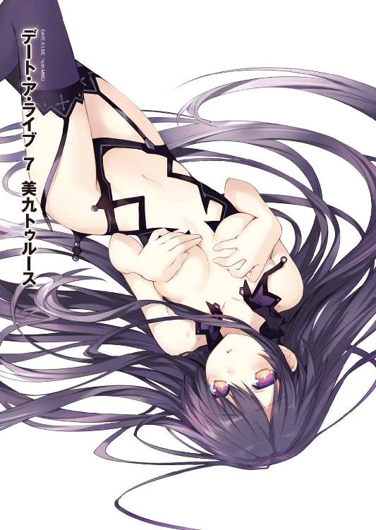
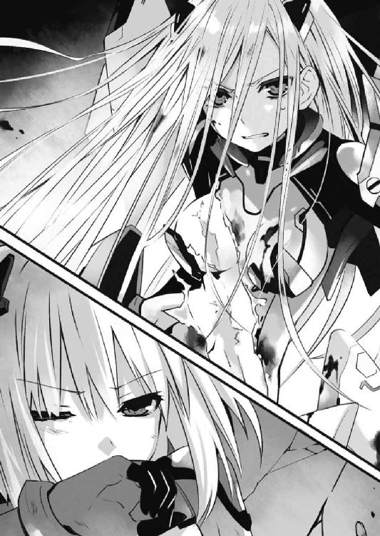
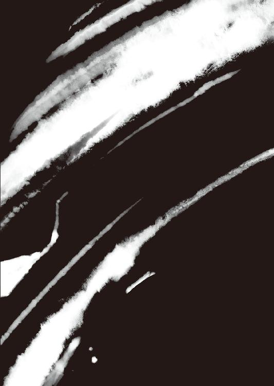
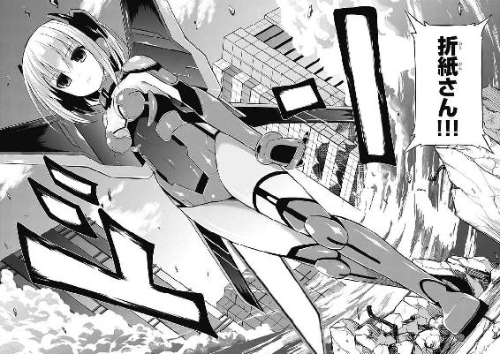

| デート・ア・ライブ 7 美九トゥルース〈電子特別版〉 <デート・ア・ライブ> (富士見ファンタジア文庫) | |
| 橘 公司 & つなこ | |
| Kadokawa / 富士見書房 (2013) | |


デート・ア・ライブ７
美九トゥルース
【電子特別版】
橘 公司

富士見ファンタジア文庫
本作品の全部または一部を無断で複製、転載、配信、送信したり、ホームページ上に転載することを禁止します。また、本作品の内容を無断で改変、改ざん等を行うことも禁止します。
本作品購入時にご承諾いただいた規約により、有償・無償にかかわらず本作品を第三者に譲渡することはできません。
本作品を示すサムネイルなどのイメージ画像は、再ダウンロード時に予告なく変更される場合があります。
本作品は縦書きでレイアウトされています。
また、ご覧になるリーディングシステムにより、表示の差が認められることがあります。
口絵・本文イラスト つなこ
第六章 悪夢、再び
「お困りの様子ではありませんの。──ねえ、士道さん。少し、お話をしませんこと？」
暗い廃ビルの一室で。
漆黒の影から這い出てきた少女は、妖しく笑いながらそう言った。
「な......」
士道は驚愕と狼狽に目を見開きながら、叫びを上げることもなくその異様な光景をただ、見つめる。
それは、背筋が凍るほどに美しい少女だった。
とはいえ、背筋が凍るほど......という形容が、その麗しさのみにかけられた言葉でないことは、彼女と対峙した者ならば一瞬のうちに理解できるだろう。笑みの形に作られた表情から感じ取れるのは、親愛の情や歓喜の色ではなく、絶対的な捕食者の余裕と、肌がちりつくような緊張感のみだった。
くすくすと笑うたびに揺れる左右不均等に括られた漆黒の髪に、華奢な肢体を包む血と影の色で染められたドレス。だが、彼女を構成する因子の中でもっとも異様なのはその眼だった。端整な貌に鎮座した色違いの双眸。よく見ると、その左目には時計の文字盤が浮かび、かち、かちと針が規則的に時を刻んでいた。
「時崎──狂三......っ!?」
士道はのどを絞り、その少女の名を呼んだ。狂三。士道の元クラスメートにして──自らの意志で人を殺す『最悪の精霊』。
狂三はそんな士道の言葉に、ぴくりと眉を揺らしてから肩をすくめてきた。
「あら、違いましたかしら。──四糸乃さんと八舞姉妹を精霊に奪われ、十香さんをＤＥＭ社に拐かされ......為す術もなく途方に暮れているように見えたのですけれど」
「な──」
士道は息を詰まらせた。
──狂三の言っていることは、全てその通りだったのである。
今から数時間前。士道は天央祭の会場である天宮スクエアで、音と声を操る精霊・誘宵美九と対峙した。
しかし彼女の天使〈破軍歌姫〉により、四糸乃と耶倶矢、夕弦、そして会場にいた観客たちが皆、美九に操られてしまったのである。
しかも、その『音』をスピーカー越しに聞いてしまったと思しき琴里たちまでもが敵に回ってしまった上......突如そこに現れたＤＥＭの魔術師・エレンの手によって、十香がさらわれてしまったのだ。
命からがら逃げ延びた士道は、なんとか街の外れにある廃ビルに隠れることに成功したものの、無力感を拳に乗せて床を打ち付けることしかできないでいた。
確かに、全て正しい。だが、いや、だからこそ意味がわからない。
「......なんでそんなことを知ってるんだ？」
「うふふ、野暮なことを訊かないでくださいまし。わたくし、士道さんのことなら何でも知っていますのよ？」
そう言って、狂三が可愛らしい仕草で微笑む。なぜだろうか、それと同時に、狂三の足下に蟠った影が微かに蠢き、小さな笑い声がいくつも聞こえた気がした。
「............」
数ヶ月前に目にした光景を思い出し、ごくりとのどを鳴らす。そういえば狂三は比喩でも冗談でもなく、幾つもの『目』と『耳』を持っているのだった。あの会場の中に一人や二人『狂三』が交じっていたとしても、何も不思議はない。
それを認識すると同時、大音量の警鐘が頭の中に鳴り響く。
狂三は、知っているのだ。今この場に、士道を守るものが何もないことを。駆けつける者がいないことを。──狂三の食事を邪魔する者がいないことを。
「く......」
身を固くし、片足を引く。だが狂三はそんな士道の様子を見て、愉快そうに唇を歪めた。
「ふふ、落ち着いてくださいまし。──少なくとも今わたくしに、士道さんをどうこうしようというつもりはございませんわ」
「何......？」
士道は狂三の言葉に眉根を寄せた。
「どういうことだ？ おまえは、俺を『食べる』のが目的なんじゃなかったのか？」
「ええ、それは否定しませんわ。──でも、先ほど申し上げたではありませんの。今は、士道さんとお話がしたいと」
「......そんな言葉を信じろっていうのか？」
「わたくしが今、嘘を吐く理由がございまして？」
「む......」
言われて、士道は唇を引き結んだ。
確かにその通りである。狂三がその気になったなら、士道を殺すも喰らうも思い通りなのだ。生殺与奪の権利を握った相手にわざわざ虚言を吐く理由など思い当たらない。もっとも今目の前にいる少女の場合、安堵に緩んだ表情が再び恐怖に引きつるのを見たいから──なんて理由でこちらを謀ろうとしている可能性もあったのだけれど。
無駄な努力と思いつつも油断なく気を張りながら、その目をジッと見つめ返し、問う。
「......一体、何を話そうってんだよ」
「ええ、──これからについてのお話を」
「これから？」
士道が怪訝そうに言うと、狂三はトントンとリズミカルに靴底で床を叩き、士道の方に近寄ってきた。
そして士道に寄り添うような格好になりながら、耳元に唇を寄せ──囁くように言う。
「ねえ、士道さん。十香さんを助けたくはありませんこと？」
「何......？」
狂三の唇から発された言葉に、士道は思わず怪訝そうな声を発した。
「どういう......ことだ」
「そのままの意味ですわ。士道さんは、十香さんをＤＥＭインダストリーの手から救い出したくはありませんの？」
「そ、そんなの当然じゃないか......！ 相手は精霊を殺そうとしてる組織なんだろ？ そんな奴らのもとに十香を置いておけるわけがない！」
「きひひ、そうですわよね。そうですわよね。それでこそ士道さんですわ」
狂三が、今までで一番楽しげに笑う。士道は得体の知れない不快感に顔をしかめた。
「でも、なんで......おまえがそんなことを訊くんだよ」
「きひひ、ひひ」
狂三は妖しい笑みを顔に張り付けたまま、ぺろりと士道の耳を舐めてきた。
「......っ」
「十香さんを助けたい......でも、いくらそう願ったところで、士道さん一人では実現は不可能でしょう？ そもそも十香さんがどこに連れて行かれたのかもわからない。仮に場所を突き止めたとして、念願の精霊を手に入れたＤＥＭ社が何の備えもしていないとは考えられませんわねぇ。それに、十香さんをさらった魔術師をご存じでして？ あれは厄介な女ですわ。人間が相手をするには過ぎた存在ですわよ」
「っ、そんなこと、言われなくてもわかってる！ でも、だからって──」
「ええ、ええ。士道さんはそう仰るでしょうねぇ。でも、それは勇気ではなく愚行ですわ。気持ちだけで何かを成すことなどできはしませんわ。士道さん一人が挑んだところで、すぐに殺されるか捕らえられるのが落ちですわ」
「ぐ......何が言いたいんだよ」
「うふふ......わかりませんこと？ だから──わたくしが手伝って差し上げると言っているのですわ」
「な......!?」
狂三が発した信じがたい言葉に、士道は目を見開いた。
「手伝......う？ 狂三が？ 俺を？」
「ええ。十香さんを助け出すのに手をお貸ししますわ」
言って、狂三がくすくすと微笑む。
士道は狂三の意図が掴みきれず、混乱する思考を落ち着けるように額に手を当てた。
狂三は精霊──しかも、他に類を見ない強力な天使を携えている。確かに彼女の助力を得られたなら、十香の奪還という不可能に近い目的にひとすじの光明が見えるだろう。
だがそれを理解してなお、士道は諸手を挙げて喜ぶことができなかった。
「......何が目的だ？」
「目的だなんて。わたくしはただ、士道さんのお役に立ちたいだけですわー」
どうせ士道がそれを信じるだなんて思っていないのだろう。狂三が芝居がかった調子を隠すこともなくそんなことを言ってくる。
「おまえな......」
「あらあらあら」
半眼を作りながら士道が言うと、狂三がわざとらしい動作で手を目元にやり、さめざめと泣くような仕草をした。
「悲しいですわ。わたくしは士道さんのことを思っているだけなのに」
「............」
「信用がありませんわねぇ。まあ、仕方ないかもしれませんけれど」
士道が訝しげな視線を送り続けると、狂三はその動作に飽きたように肩をすくめた。
「白状をすれば、わたくしも別口でＤＥＭインダストリーに用事がございますの。手を貸す代わりに、わたくしも士道さんを囮として利用させていただきますわ。ギブアンドテイクでしてよ」
「用事......？」
「ええ、とある方をお探ししておりますの」
「とある方？ 一体誰だ？」
「それは、秘密ですわ」
狂三が鼻の前に指を一本立てながらウインクをしてくる。士道は狂三に訝しげな視線を向けた。
「ご安心くださいまし。虚言を吐いてはいませんわ。──まあもちろん、それでも信じていただけないのであれば、無理にとは申しませんけれど」
「う──」
言われて、士道は苦々しげにのどを絞った。
正直、狂三を完全に信用することはできない。
だが、彼女の存在が士道に唯一残された打開のチャンスであることもまた、確かだった。
目の前に置かれた小瓶の中身は毒か薬か。判別はつかないものの──何もしなければその身は病に倒れてしまう。
ならば......士道はリスクを負ってでも、それに手を伸ばす他なかった。
たとえそれが毒であったとしても、十香を救うためには、一息に飲み干すしかなかった。
「......わかった。信じるよ。頼む、俺に手を貸してくれ、狂三......！」
士道が拳を握りながらそう言うと、狂三は優雅な仕草で以てスカートの裾をつまみ上げ、膝を屈めてみせた。
「ええ──喜んで」
まるで名家のご令嬢か、おどけた道化のような動作でお辞儀をし、くすくすと笑う。
そののち、狂三はスカートの裾を翻すようにくるりと身体を回転させ、トン、トンと踊るようにステップを踏んでから士道に向き直ってきた。
「さあ、さあ、では早速動き始めましょう。悠長に構えている暇はありませんわ。急かねばことは、し損じる前に終わってしまいましてよ」
「ああ......俺は何をすればいいんだ？ 十香を助けるためなら何でもやってやる」
士道が言うと、狂三はさらに笑みを濃くした。
「ああ、ああ、いいですわね、十香さんは。こんなにも士道さんに想っていただけて。うふふ、嫉妬してしまいますわ」
「か、からかうんじゃねえよ」
「からかってなどいませんわ。──でも残念ながら、そちらはまだ動けませんの。今『わたくしたち』が十香さんの居場所を確認している最中ですわ。もう少しだけお時間をいただけませんこと？」
「......準備のいいことだな」
「うふふ、だって、士道さんがこのお話を断るはずがございませんもの」
「ぐ......」
なんだか手玉に取られている気がして、士道は苦々しく表情を歪めた。狂三がそれを見て楽しそうに笑う。
「で、でも、それじゃ動きようがないじゃないか」
「そんなことはありませんわ。十香さんを助けに向かう前に、手を打っておかねばならない方々がいるではありませんの」
士道の言葉を遮るように狂三が言ってくる。
それが何を示しているのかはすぐに察しがついた。重苦しい息とともにその名を吐く。
「美九......か」
「ええ、確かそんなお名前でしたわね、あのお歌の上手な方は」
そう。今士道がこんな街外れの廃ビルに身を潜めている理由。それは、精霊・誘宵美九に追われているからに他ならなかった。
音と声で人間を操る美九は、恐ろしい勢いで軍勢を増やし、草の根を分けて士道を探し回っている。恐らくは──自分を裏切った士道に報いを受けさせるために。
士道がそれを思い起こして深刻な顔を作っていると、狂三が何かを思い出したように含み笑いを漏らした。
「......なんだよ」
「いえ、今日のステージを思い出してしまいまして。うふふ、似合っていましたわよ、士道さん。いえ、士織さん、でしたかしら？」
「............うぐ」
士道は眉根を寄せて視線を逸らした。
男嫌いの美九に取り入るため、仕方なく女装をして攻略にかかっていたわけであるが......どうやら、狂三にもばっちり見られていたらしい。
「まあ、理由はどうあれ、美九さんは士道さんを血眼になって追いかけている。しかも何万という人間と、精霊三人までもその軍門に従えて。......間違いありませんわね？」
「......ああ、間違いない」
「ふむ......それではやはり、そちらから片付けてしまいましょう。彼女は着々と支配領域を広げていますわ。このままでは、十香さんを助けに行くのを邪魔される可能性すらありましてよ。士道さんが彼女に捕まってしまっては、わたくしも少々困りますし」
「片付けるって......簡単に言うけどよ」
「事実、そう難しい話ではありませんわ。見たところ、あの方は実戦向きの力を持っているわけではなさそうですし」
「そうは言っても、美九には人を操るあの『声』と天使があるじゃないか」
「問題ありませんわ。わたくし、あのような演奏に心揺らされるほど純真ではございませんし。わたくしに任せていただければ華麗に殺ってみせますわよ？」
冗談めかすように言いながら、狂三が人差し指と親指を立て、「バン」と銃を撃つ仕草をする。士道は慌てて首を振った。
「だ、駄目だそんなこと！」
「うふふ、冗談ですわよ。優しい士道さんがそんな解決を望んでおられないことくらい承知しておりますわ。──こんなわたくしでさえ救おうとした酔狂なお方ですもの」
言って、狂三がまたも目と唇を笑みの形にする。だがなぜだろうか、その微笑は今までの愉快そうなものとは少し印象が異なる気がした。
だが、士道がそれを指摘するより先に、狂三が言葉を続けてくる。
「でも、その手段が取れないとすると少々骨ですわよ。この短時間で説き伏せるのは不可能としても、最低限、十香さんを救い出すまでの間、こちらに手を出さないという約束をさせるくらいはしておきませんと」
「約束......か」
士道は難しげにうなって頭をかいた。確かに、これ以上放っておいて被害を増やすわけにはいかない。それくらいはしておかねばならないだろう。
「でも、一体どうやって交渉するんだよ」
そう。問題はあの軍勢である。一体今何人に膨れあがっているのかすらわからない人の壁が、美九を守っているのだ。もはや彼女に近づくことすら困難だろう。
そんな士道の考えを察したのか、狂三があごに手を当ててくる。
「もしも美九さんと士道さんを二人きりにすることができたら......どうですの？」
「え？ そりゃあ、そんなことができたら......」
言いかけて、士道は首を振った。
「いや......難しいだろう。おまえも見てたかもしれないけど、まともに話が通じる相手じゃないんだ。特に俺は今最悪レベルで嫌われてるし......それに何より、人を操る『声』を生まれ持っちまった精霊だからか、人間に対する価値観が異質なんだ」
と。士道が言うと、狂三はぴくりと眉を動かした。
「どうかしたのか、狂三」
「......それは、どうですかしらねぇ」
「え......？」
あごに指を触れさせながら言う狂三の言葉に首を捻る。すると狂三は、半眼を作りながら答えてきた。
「上手く説明できませんけれど、本当にあの方の価値観は、先天的なものなのでしょうか」
「どういうことだ......？」
「いえ、なんと言いましょうか。あの方、少しばかり妙な感じが......」
そして狂三はふうむとうなると、数秒後、何かを思いついたように顔を上げてきた。
「士道さん。何か美九さんの持ち物が手に入りませんこと？」
「美九の......私物？ なんでまたそんなものを」
「わたくしの予想が正しければ、彼女の泣き所を押さえられるかもしれませんわ」
「なんだって......!?」
士道は眉をひそめてのどを絞った。
嘘を吐いているようには見えない。一体どうするのかはわからないが、何か考えがあるのだろう。薄弱な理由ではあるが、他に手段がない以上縋らざるを得なかった。
とはいえ、相手は精霊である。そんなものがそう簡単に手に入るとは──
「......いや、待てよ」
士道は頬をぴくりと動かし、あごに手を当てた。
◇
「ん......ぅ......」
小さなうめきとともに目を開け、十香は大きくあくびをした。
「ふぁあぁ......」
いつもの朝の、いつもの行動である。十香は微睡む意識の中でこれから取るべき行動を再生した。
まずは目を覚まさなくてはなるまい。ベッドを下りたら顔を洗うのだ。そうしたら朝ご飯を食べ、身支度を整えて......そう、士道と、学校に行くのである。
今日のお昼も、士道特製のお弁当だろう。一体何が詰まっているのだろうか。考えただけでも胸が躍った。
「うむ......んむ......」
うつらうつらと小さく舟を漕ぎながら、ベッドから立ち上がろうとする。
と、そこで十香は上手く身体が動かないことに気付いた。
「む......？」
しょぼしょぼする目を擦って現状を確認しようとするも、手が持ち上げられない。
不審に思って身体を見下ろすと、自分が今金属製の椅子に座らされていることと──手足が頑丈な手錠のようなもので固定されていることがわかった。ついでに腕に点滴の針が刺され、頭や手足などに電極のようなものが幾つも張り付けられている。
「なんだ......これは......」
よくよく見てみると、装いもまた、普段のパジャマではなかった。いつの間に着替えたのだろうか、来禅の制服を纏っている。
十香は首をひねり、辺りを見回した。
十香の部屋でも、士道の家でもない、見知らぬ場所である。広さは高校の教室ほどだろうか。部屋の隅にカメラとスピーカーらしきものが見受けられるが、それ以外には何もなく、ただ無機的な床や壁が広がっている。さらに、視線を巡らせても、その部屋には窓はおろか出入口となる扉さえ存在していなかった。
異様な空間である。強いて言うのであれば......少し前にテレビで見た、重罪人が入れられるような独房に何となく雰囲気が似ている気がした。
「ここは......一体」
目を何度かしばたたかせて意識を覚醒させ、思考を巡らせる。
そして数瞬ののち、十香はようやく、意識を失う前の出来事を思い出した。
「そうだ......私は、天央祭でステージに立っていて......！」
そう。天使を顕現させた精霊・美九と、それに操られた四糸乃や八舞姉妹と戦っている最中に、白金の鎧を纏った魔術師が現れ──なんとか士道を逃がすことはできたものの、十香は敗れ、気を失ってしまったのである。
「ということは、ここは......」
と、言いかけたところで不意に前方から音が響いてきて、十香はバッと顔を上げた。
先ほどまで何も存在していなかった壁に長方形の亀裂が入り、扉のように横にスライドしていく。暗い空間にぼんやりと四角い光が浮かび、外の景色が少しだけ見て取れた。
そして、その扉から、一人の人間が部屋に入ってくる。
アップに纏められた色素の薄い金髪に、白い肌。対してその身に纏っているのは、高級そうなブラックのスーツだった。
エレン・メイザース。あのとき十香と剣を交えた魔術師である。
「貴様──！」
その顔を認識した瞬間、十香は一瞬にして身体を緊張させ、エレンに跳びかかろうとした。が、手足を拘束する金属の輪は頑丈で、ビクともしない。
「落ち着いてください、十香さん。今のあなたの力ではその錠は破れません」
エレンが十香を宥めるように言ってくる。その落ち着き払った態度が、さらに十香の神経を逆撫でした。
「ふざけるな！ 貴様、一体何が狙いだ！ 早くこれを外せ！」
「外したとして、どうするのですか？」
「知れたこと！ シドーを助けに行く！」
十香は大声で叫びを上げた。そう。あれからどれくらい時間が経っているかはわからないが、士道は今、美九の軍勢から一人で逃げているはずなのだ。
だがエレンは、十香の言葉を聞いて小さく息を吐いた。
「シドー......五河士道のことですか。安心してください。彼の行方は我々も調査中です。遅くとも数日中にはここにやってくるでしょう」
「な......！」
「それに、天宮スクエアの方も今攻略部隊を編制中です。夜明けと同時に総攻撃を仕掛け、〈ディーヴァ〉以下、〈ハーミット〉、〈ベルセルク〉を捕獲する手はずです。すぐにお友達と対面させて差し上げます」
「き、貴様！ シドーに何をするつもりだ！」
「ご安心を。こちらから積極的に暴力を振るうつもりはありませんよ。──もっとも、激しく抵抗された場合は、手足の一、二本は折らせてもらうかもしれませんが」
「......ッ！」
エレンの言葉を聞いた瞬間、十香は頭の奥に火花が散るような錯覚を覚えた。底知れぬ憤怒と憎悪が湧き上がってくるような感覚。それと同時に、今までまったく動かなかった錠が、みし、と小さな音を立てる。──しかし。
「......なっ!?」
十香は息を詰まらせた。エレンが微かに眉を動かしたかと思うと、十香の身体が目に見えない圧力によって押さえつけられたのである。
「こ、これ、は──」
全身にかかる重力が何倍にもなったかのような感覚。十香は苦しげにうめきを上げた。
これには覚えがあった。そう......折紙を初めとするＡＳＴ隊員の間合いに入ったときのそれに近い。だが、その強度というか、濃度が段違いだった。身体が重い。息をするのも困難になっていき、段々と意識が遠のいていく。
「ご理解いただけましたか」
エレンがそう言って、小さく息を吐く。すると全身にかかっていた重力が嘘のように霧散した。酸素が枯渇しかかっていた肺に空気が流れ込み、軽く咳き込んでしまう。
「けほっ、けほ......っ」
「私の随意領域精度は全魔術師中、最高です。抵抗は無意味とお心得ください」
「く......」
十香は憎々しげにエレンを睨み付けてから、もう一度手に力を込めた。だがその瞬間再びエレンの目がギロリと鋭くなるのを察して、ぐっと歯を噛みしめる。
霊力が封印されている今の十香に、エレンの随意領域に抗う術はない。十香は忌々しげに拳を握りながら、せめてもの抵抗とばかりに鋭い視線でエレンを睨み付けた。
「──さて、それでは幾つか質問をさせていただきます」
エレンは壁の一部を引っ張り出して簡易的な椅子を作ると、そこに腰掛けながらそう言ってきた。
◇
最初に折紙の目に入ったのは、白い色だった。
混濁した水の中に沈んだ意識を引っ張り上げるような感覚のあと、それが建材の一種であることがわかり、次いでようやく、自分が横になっていることが理解できる。
「ぁ......」
のどを震わせ、声を発することができたのは、それからさらに数秒後のことだった。ゆっくりと腕を持ち上げ──そこにまた白い色があることを認識する。肌が見えないほどに包帯が巻き付けられていた。
「お、折紙さん......っ!?」
聞き慣れた声を鼓膜に感じ、首を回す。
折紙の横たわったベッドのすぐ隣に、髪を二つに括った小柄な少女の姿が確認できた。自衛隊対精霊部隊──ＡＳＴの後輩、岡峰美紀恵である。その顔は涙と鼻水に飾られ、なんともみっともない有様になっていた。
「よ、よがっだ......ごのばば目が覚めだがっだだどうじようがど......」
「......ここは」
そんな様子をみながら、折紙は静かに声を発した。すると鼻を赤くした美紀恵が、近くに置いてあったティッシュでちーん！ と鼻をかんでから返してくる。
「び、病院です！ 折紙さん、体中傷だらけで......しかも目や鼻や耳から血が流れてて......も、もう目覚めないんじゃないがど......」
最後の方はまた鼻声になっていた。再びティッシュを取り、鼻をかむ。
「すいません......すいません......ッ、私、折紙さんが危ないって知っていながら、何もできず......あのとき私が隊長を振りきってでも駆けつけていればこんなことには......！」
美紀恵が悔しそうに顔を歪めながら言ってくる。しかし折紙は、それを否定するように首を横に振った。
「謝る必要はない」
「え......？」
美紀恵が、きょとんと目を丸くしてくる。
「理由はどうあれ、私の行動は完全な命令違反。あれはあくまでＡＳＴの総意ではなく、一隊員の暴走にしておかねばならなかった。──日下部一尉はどこに？」
「え、えっと......基地です。折紙さんの件について上に掛け合うって......」
「そう」
静かにうなずく。だが美紀恵は、未だ納得いかないといった様子で眉をひそめていた。
「で、でも、やっぱり、それじゃ折紙さんが......」
「日下部一尉の判断は正しい。もし仮にあのとき私を助けていたなら、ＡＳＴ全体に処分が下る恐れがあった」
「そ、そんな！」
「あり得ない話ではない。だから、今回の件は私の責任。〈ホワイト・リコリス〉を独断使用したのも、第三戦闘分隊を襲ったのも、全て私の──」
そこで、自分の言葉に、霞んでいた記憶が鮮明によみがえってくる。
「............！」
折紙はすぐさま目を見開き、身体を起こした。
否──正しく言うのなら、起こそうとした。全身に力を入れた瞬間、骨が崩れ、筋肉が弾けるかのような痛みが折紙を襲ってきたのである。
「く......、ぅ──」
「だ、駄目ですよ折紙さん！ 安静にしてなきゃ！」
「......士道、は」
「え？」
「士道は、無事？」
折紙が言うと、美紀恵はハッとした顔を作り、しばしの間押し黙った。
折紙に話していいものかどうかを思案するようにうなってから、小さく唇を開いてくる。
「......今、調査中です。詳細はわかりません」
「どういうこと？」
美紀恵の発した言葉に眉をひそめる。
すると美紀恵は折紙の顔を心配そうに見たのち、おずおずとリモコンに手を伸ばし、テレビを点けた。すぐに画面に映像が、スピーカーから音声が流れてくる。
放送されているのはニュース番組のようだった。街の映像と、慌てた様子のレポーターの声が、見る者の緊張感を煽ってくる。
『天宮市で突如として起こった大規模暴動は未だ収まる様子を見せていません！ 鎮圧に乗り出した警察官までもが暴動に加わるという異常事態です！ 一体ここ天宮市で何が起きているというのでしょうか──！』
折紙はベッドに横になったままその番組を見て、顔を戦慄に染めた。
「......！ これは......」
「ご覧の通りです......今、天宮市で大暴動が起こっています。ここは都市部から離れているからなんとか無事ですが......」
「一体、何があったの」
「公表はされていませんが......精霊です。天宮スクエアから強力な霊派反応が観測されました。恐らくみんな、精霊に操られたような状態にあると思われます」
「精霊......なら、なぜあなたたちは出動していないの」
「さすがにこんな事態は初めてですから、上もてんやわんやみたいで......待機命令が出されています。本当は私も基地にいなきゃいけないんですけど、隊長さんに特別に許可をもらいまして......」
折紙は微かに眉をひそめたが、それも仕方のないことなのかもしれなかった。
何しろ目算で数千......下手をすれば数万という数の人間が精霊に操られているというのである。如何にＤＥＭの凶行を見て見ぬ振りで過ごそうとした上層部といえど、自らの責任の下、彼らの身を顧みず攻撃を仕掛けろとは言いづらいのだろう。
しかし、そうなると士道は一体どうなってしまったのだろうか。今テレビに映っている群衆と同じように、精霊に操られてしまっているのだろうか。それとも......
と、そこで折紙は、気を失う前に見た少女の顔を思い出した。
「真那──」
そう。元ＤＥＭの魔術師にして、士道の生き別れの妹。崇宮真那が、あのとき折紙の窮地を救ってくれたのである。もしかしたら彼女が、士道をあの場から助け出している可能性もあった。
「真那は、どこ？」
「真那さん......？ ああ、そうです、驚きました！ しばらく行方がわからなくなっていたと聞いていたんですけど......あのとき、気を失った折紙さんを私たちのもとに届けてくれたのは真那さんだったんです！ でも、何か見たことのないＣＲ‐ユニットを着けてて、次に会うときは商売敵かもしれないみたいなことを言って、そのままどこかに......」
美紀恵が困惑した様子で言ってくる。
折紙は記憶を巡らせ、朦朧とした意識の中で聞いた真那の言葉を思い起こした。確かに、そんなことを言っていた気がする。詳しい事情はわからないが、どうやらＤＥＭ社を出奔するというのは確からしい。
「士道のことは、何も？」
「は、はい......残念ながら」
「......く」
折紙は忌々しげにのどを絞ると、今度は身体に負担をかけないよう、ゆっくりと上体を起こした。だが、討滅兵装の臨界使用と夥しい攻撃によってぼろぼろになった身体はそれだけの動作でも激しい悲鳴を上げる。
「私、は......」
折紙はぐっと拳を握り、ベッドに打ち付けた。ぼふっ、という小さな音が鳴り、微かに埃が舞う。
無力感。結局、折紙には士道を守ることができなかった。規律を無視して〈ホワイト・リコリス〉を用いてなお、目的を達することができなかった。
「士、道......」
安否のわからない恋人の名を呼び──折紙は固めた拳を震わせた。
◇
「ここ......ですの？」
「ああ、間違いない」
時刻は二一時。街灯と民家の明かりがぼんやりと輝く静かな住宅地に、士道と狂三は立っていた。
目の前には、精緻な細工が施された背の高い鉄柵に、丁寧に手入れされた庭園。そしておとぎ話にでも出てきそうな洋風建築が聳えていた。
かつて士道が一度だけ訪れたことのある場所──誘宵美九の自宅である。
中に誰もいないのだろう、窓に明かりはなく、シンと静まりかえっている。
突発的にこの世界に現れ、去って行く精霊のことを調べるのは非常に困難だ。
だが、誘宵美九という精霊は例外だった。
何しろ美九は、少なくとも数ヶ月前からこちらの世界で学校に通っている上、歌手として活動しているのである。
要は──他の精霊とは異なり、こちらの世界に自分の痕跡を数多く残しているのだ。
「さ、では早速調べましょう」
そう言い、狂三が右手をすっと持ち上げる。
するとその動作に合わせて影から古式の短銃が飛び出し、狂三の手に収まった。そして何の躊躇いもなく引き金を引くと、けたたましい音を立てて門の鍵を吹き飛ばす。
「ちょっ、狂三！」
「どうかしまして？ まさか、荒っぽい真似はするなだなんて仰いませんわよね」
「や......それもあるけど、こんな静かな住宅街で銃声なんて響かせたら警察呼ばれるかもしれないだろ！」
「警察の方々は今、大暴動の対応に追われて大変なのではございませんこと？」
狂三はくすくす笑うと、ギィと重い音をさせて門を開け、士道の制止も無視して玄関の鍵を先ほどと同じように影の弾で撃ち抜いた。
役目が終わったとばかりに短銃を放る。するとそれは、再び影に飲み込まれていった。
「ああ......もうっ」
士道はわしわしと頭をかくと、視線を左右にやって辺りに誰もいないことを確認してから、狂三のあとに続いて家の中に入っていった。
「ええと、多分この辺に......」
手探りでスイッチを入れると、シャンデリア型の電灯に柔らかい明かりが灯った。
見渡す限り、全て高価そうな家具や建材で占められた空間である。一度訪れたことがあるとはいえ、やはり圧倒されてしまう士道だった。
だが、今はそんなことで足を竦ませている場合ではない。軽く頬を張って気合いを入れてから靴を脱ぎ、家に上がっていく。
「さ、それで、どこを調べますの？」
「ん......そうだな」
正直、明確な当てがあるわけではない。本来であれば屋内をくまなく調べたいところだったが、そう時間を割いてもいられない。士道は頭の中で、以前この家に招かれたときのことを思い起こした。
「一階の応接室には大したものはない。何かあるとすれば美九の寝室とか......かな」
「そうですの。では参りましょう」
「ああ」
言って、狂三を従えて階段を上っていく。
美九の寝室はすぐに見つかった。二階に上がって廊下をまっすぐ行ったところに、『BEDROOM』のプレートが下がった扉があったのである。
「............」
家主の留守中に女の子の部屋に入るだなんて背徳的な行為に微かな緊張を覚えるが、すぐに、こんなときに何考えてんだ俺の馬鹿、と思い直してノブを回す。
広さは二〇畳ほどだろうか。部屋の奥に天蓋付きのキングサイズベッドが置かれ、壁に沿うように木製のクロゼットや戸棚が置かれている。そしてベッドの正面に八〇インチはあろうかという巨大なテレビが備えられていた。まるでホテルの一室である。
「こりゃまた......凄いな」
思わず苦笑してしまう。が、驚いてばかりもいられない。士道は一応「お邪魔します」と言うと、部屋に足を踏み入れた。
アンティークショップに並んでいそうな戸棚を順に開け、中を探っていく。そこにはアクセサリーや可愛らしい小物が並んでいた。──狂三のご所望は「美九の私物」ということだったが、こういうものでいいのだろうか？
と──
「士道さん、士道さん。見てくださいまし」
士道が真剣な面持ちでうなっていると、背後から狂三が声をかけてきた。
「どうした？ 何か見つけたのか？」
「ええ、凄いものがありましたわ」
言って、クロゼットの引き出しを指さしてくる。
士道はそちらに移動して狂三の指さす方向に目をやった。そしてそれを目にし、しばしの間身体を硬直させる。
「んな......っ」
何しろそこには、可愛らしいブラジャーやショーツなどの下着類が、ぎっしり詰め込まれていたのである。
「ほら、見てくださいまし。凄いサイズですわよ。私の顔が入ってしまいそうですわ」
言って、狂三が淡い色のブラを一枚摘み上げ、両手で広げてみせる。なるほど確かに、凄まじい大きさだった。小玉スイカあたりならば収まってしまうかもしれない。
士道も男の子である。その魅惑のアイテムに興味がないわけではなかったが、今は状況が状況だ。頬を赤くしながらもコホンと咳払いをする。
「な、何やってんだよおまえ......今はそんな場合じゃないだろ」
「うふふ、士道さんは真面目ですのねぇ。少しは肩の力を抜かないといけませんわよ」
狂三が冗談めかすようにくすくす笑いながら、手にしたブラを自分の胸元に宛ってみせる。服の上からだというのに、まだ少し余裕があるようだった。
「あら、あら」
「......う」
......なんというか、その奇妙な組み合わせに、士道は自然と顔が熱くなってしまうのを感じた。慌てて目を背ける。しかしそんな思考は狂三に筒抜けだったらしい。士道の反応を面白がるように、手にしたブラを士道の方に差し出してくる。
「ほら、士道さんも着けてみませんこと？」
「は......はぁっ!? な、なんで俺が......」
「ああ、これは失礼しましたわ。士織さんも、いかがでして」
「......ぐ」
士道は途方もない羞恥に頬を染めながら小さくうなった。狂三が、妖しく微笑みながら続けてくる。
「ステージに立っていらっしゃったのは見ていましたけれど、近くで士織さんを見る機会はありませんでしたの。一度じっくり拝見してみたいのですけれど」
「じ、冗談抜かせ。もう御免だっての......！」
士道は思わず足を引いた。が、狂三がその分距離を詰めるように、ずいと近づいてくる。
「なぜそこまで嫌がるのかわかりませんわ。別に減るものでもないでしょう？」
「減る！ 確実に！ 時間と俺の尊厳が！」
「そうつれないことを仰らないでくださいまし。少しの間でいいんですのよ？ 一度、可愛い可愛い士織さんのお顔が、恥辱に震えるところを見せていただければ......」
「何するつもり!? 士織ちゃんに変なことしないで！」
「よいではありませんの。よいではありませんの」
と、狂三がさらに迫ってきたところで。狂三は床に敷かれていた分厚い絨毯に躓き、不意に身体のバランスを崩して前方に倒れ込んできた。
「──あら」
「う、うわっ！」
ちょうどのしかかられるような格好になり、士道も一緒にその場に転げてしまう。しかも運の悪いことに、後方にあった戸棚をも巻き込んで。
ドンガラガッシャンと派手な音が鳴り、後頭部と背中を激しい痛みが襲ってくる。士道は仰向けの姿勢になったまま顔をしかめた。
「あいててて......、だ、大丈夫か、狂三」
「ええ。問題ありませんわ。士道さんが助けてくださいましたし」
言って、士道の胸に身体を預けるようにうつ伏せで倒れ込んだ狂三が妖艶に笑い、不必要にぐぐっと体重をかけてきた。狂三の華奢で、しかし柔らかな身体が押し付けられ、ビクッと肩を震わせてしまう。
「お、おい、狂三......」
「あら、士道さん」
と、狂三が不意に眉を上げ、士道の顔をジッと見つめてくる。
「お怪我をなさっていますわ」
「え？ あ、ホントだ」
言われて頬に触れると、小さな痛みがあるのがわかった。指先を見ると、微かに血が付着しているのがわかる。どうやら、倒れ込んだとき何かで引っかいてしまったらしい。
「まあ、大丈夫だよこれくらい。唾つけときゃ治るって」
「ふぅん......そうですの」
「ああ。それよりほら、早く退いてくれよ」
言って再び上体を起こそうとすると、なぜか狂三がさらに力を入れ、それを阻んできた。
「狂三？」
「少し、じっとしていてくださいまし」
狂三が足を広げ、士道の身体に馬乗りになるような格好をとったかと思うと、士道の肩を両手で押さえつけ、ゆっくりと顔を近づけてくる。
「なっ、何してんだよ狂三!?」
士道の叫びに、狂三はふふっと微笑んだ。小さな吐息が耳を鼻腔をくすぐり、心臓がどくんと跳ねる。
士道が緊張に身体を硬直させていると、狂三はゆっくりとその柔らかそうな唇を広げ、そこから濡れた舌先を覗かせてきた。
そしてそのまま士道の頬の傷に、ぺろりと舌を這わせてくる。得も言われぬ感覚が全身に広がり、士道の意識を明滅させた。
「！ な、ななななな何を......」
「うふふ、だって、唾をつけておけば治るのでしょう？」
「い、いや、それは言葉の綾というか......」
士道が言うも、狂三は小さく微笑み、もう一度頬を舐めてから、ようやく顔を離した。狂三の舌先と士道の頬との間に唾液の線がキラキラと光る。やたら淫靡なその様を見て、士道はまたも顔が熱くなるのを感じた。
狂三が笑いながら、士道の上から退く。士道は荒れた呼吸を整えてからやれやれと身を起こした。
後方を見やると、やはり棚の扉が盛大に凹んでいた。間違いなく弁償ものだろう。
「参ったな。できるだけ痕跡を残したくなかったんだが......」
と。
「ん......？」
今の衝撃で棚の上から落ちてきたのだろうか、先ほど探したときにはなかった四角い缶を見つけて、士道は小さく眉を動かした。
よくクッキーなんかが入っているような、お菓子の入れ物である。確かによく小物入れなんかに使ったりはするが、この豪奢な空間にはなんだかミスマッチだった。
「これは......」
不思議に思い缶を開けてみて──士道は目を丸くした。
その中には、ＣＤのパッケージと思しきプラスチックケースが数枚入っていたのである。それら全てに美九の姿が印刷されていた。どうやら、美九がリリースしたＣＤらしい。
「こんなに曲出してたのか......って、あれ？」
ＣＤを眺めていた士道は思わず首を傾げた。
曲名の下に記されている名前が、美九のものではなかったのである。
「『宵待月乃』？ なんだこの名前」
一瞬、美九が使用している芸名かと思ったが、殿町たちは美九のことを普通に誘宵美九と呼んでいた。美九名義で音楽活動をしていることは間違いないはずである。
それに、確か美九は女性ファン限定のシークレットライブにしか姿を現さない謎のアイドルだったはずだ。こんなにも堂々とＣＤジャケットを飾っているなんて初耳だった。
「どういうことだ......？」
「どうかしましたの？」
「ん、ああ......」
士道は曖昧にうなずくと、ケースからＣＤを取り出し、手近にあったオーディオコンポでそれを再生してみた。アップテンポの可愛らしい曲とともに、美九の声が流れ始める。
「あらあら、可愛らしい曲ですわね」
言って、狂三が指先で小さくリズムを取る。
だが、士道はその声に若干の違和感を覚えていた。
「美九の声......だよな？」
無論、生歌とＣＤという違いはあるだろうが......それ以前に、この美九の声はもっと若いというか、今の美九のような、脳幹を揺さぶるような妖しい魅力はなかった。
だがその代わり、その歌は一所懸命なひたむきさに溢れており、聴く者を元気づけてくれるような不思議な魅力があった。
「うーん......」
不審には思ったものの、何が何だかよくわからない。士道は缶の中に入っていたＣＤジャケットを順に見ていき──
「あれ？ これは......」
その最奥に、あるものを発見した。
「写真......？」
そう。綺麗な飾りの施された写真立てに、一枚の写真が飾られていた。
それ自体は、何の変哲もないものである。だが、
「......え？」
士道は脳裏を掠めた奇妙な感覚に、目を見開いた。
おかしい。──何かが、おかしい。
士道はもう一度写真を手に取ると、そこに写っているものをまじまじと見つめた。
別に写真の裏に重要な情報がメモされているだとか、何か特殊な加工がされているということはない。何の変哲もない写真である。
だが、それは。普通に考えれば存在するはずのない写真だった。
「まさか......これは」
士道は眉をひそめてうめくように呟いた。
額に手を置き、思考をぐるぐると巡らせ──とある可能性に至る。
それは琴里に一度否定された可能性だった。だが、もしこの考えが合っていたとするならば、このような写真が存在することにも──先ほどのようなＣＤが存在することにも説明がつく。
「でも、もしそうなら、なんで......」
と、士道が写真をまじまじと見つめていると、脇から白い手が伸びてきて、それをひょいと摘み取った。犯人は考えるまでもない。狂三だ。
「面白そうなものがありましたわね。少し、お借りしますわ」
そして写真と、残っていたＣＤ一枚を重ねて片手で持つと、空いている方の手をバッと掲げる。すると、狂三の影から古式の短銃が飛び出してきて、狂三の手に収まった。
「〈刻々帝〉──【一〇の弾】」
次いで狂三が言うと、影の一部に『Ｘ』の紋様が輝き、そこから影が漏れ出すように滲んで、短銃の銃口に吸い込まれた。
そうしてから狂三は、なぜか写真とＣＤを側頭部に触れさせ、それに向かって短銃を構えた。まるで銃弾を、写真とＣＤで防ごうとしているかのようである。
奇妙な行動に士道が首を捻っていると、狂三は躊躇いなく短銃の引き金を引いた。銃口から発された【一〇の弾】が、写真とＣＤを貫いて狂三の頭に突き刺さる。
「く、狂三!?」
叫ぶが、士道はすぐに異状に気付いた。狂三の頭はおろか、銃弾が貫通したはずの写真やＣＤにも、傷一つ付いていなかったのである。
「うふふ、大丈夫ですわよ。【一〇の弾】の力は回顧。撃ち抜いた対象が有する過去の記憶を、わたくしに伝えてくれる弾ですわ」
「過去の......記憶？」
狂三が「ええ」とうなずき、写真とＣＤを眺めながら唇の端を上げた。
「なるほど──そういうことでしたの。断片的にですけれど、彼女に覚えていた違和感の正体がわかりましたわ」
「な、何かわかったのか!?」
「ええ。どうやら美九さんは──」
と。狂三が言いかけたところで。
窓ガラスが微かに揺れたかと思うと、すぐに外から、凄まじい音が流れてきた。
「な、警報......!?」
士道はハッと目を見開いたが、すぐにそれが、何度も耳にしたけたたましい警報ではないことに気づいた。
──音楽である。
巨大なパイプオルガンで奏でたような荘厳な音と、聴く者を虜にする美声によって紡がれた歌が、街に響き渡り始めたのだ。
それを耳にした瞬間、士道は覚えのある目眩に襲われた。こめかみの辺りを押さえてなんとか意識を保つ。
「これは──美九の......！」
そう。それは精霊・誘宵美九と、天使〈破軍歌姫〉による、至上の演奏だった。
だが、窓から外を覗いてみても、あの巨大な天使の姿を見取ることはできない。恐らく非常時に警報などを流す公共のスピーカーをジャックしたか......そうでなければ街宣車か何かでも走らせているのだろう。機械を通しても美九の演奏の効果があることは実証されてしまっている。これでこの辺りの住民も美九の熱狂的な信者となり、士道を捕らえるために動き始めるだろう。
「......！」
士道はハッとして狂三を見やった。が──狂三は士道と同じように、美九の演奏を聴いてもその音と声に心を奪われることはないようだった。
とはいえ、状況は確実に悪化の一途を辿っていた。未だに士道が見つからないことに焦れてか、美九が積極的に支配領域を広げてきたのである。
「あらあら、随分と派手にやってくれますわねえ」
狂三が可笑しそうに、しかしどこか気に障るといった様子であごに指を当てる。
「仕方ありませんわね。お話は道中するといたしましょう」
でも、と狂三が続ける。
「あくまでわたくしはお手伝いをするだけ。場所は如何様にでも整えましょう。でも、引き金を引くのは士道さんですわ」
「え......？」
士道は目を丸くし──しかしすぐに狂三の意図を察してぐっと拳を握った。
「手を貸してくれ、狂三。──あの駄々っ子と、話をしに行く」
「喜んで」
狂三はそう言うと、先ほどと同じようにスカートの裾を摘み上げた。
◇
「────────────────!!」
天宮スクエア・セントラルステージの中には今、熱狂が渦を巻いていた。
何しろステージの中央に淡い輝きを放つ巨大なパイプオルガン──〈破軍歌姫〉が聳え、その前で霊装を纏った美九が光り輝く鍵盤に指を走らせながら歌を歌っているのである。美九の熱狂的なファンと化した観客たちには、まさに神の託宣にも近い光景である。感激のあまり失神している者もちらほらといるようだった。
男共は会場の外に追い出し、警備の任に就かせているため、美九の視界に犇めく観客たちは皆女の子ばかりである。皆一様に紫色のサイリウムを振り、美九の一挙手一投足に黄色い歓声を送ってきていた。
ちなみに今の演奏は、街中の至る所に設置されているスピーカーから、リアルタイムで流されていた。これで、この曲を聴いた者は美九の新たな尖兵となり、あの憎き男を捜索し始めることだろう。
「......うッ」
数時間前に起こった忌まわしい出来事が脳裏を掠め、美九は思わず息を詰まらせた。
ちょうどそこで演奏が終わり、会場内が割れんばかりの拍手で包まれる。
いつもなら最高の達成感と充実感に包まれる瞬間だというのに、今し方頭の中を過ぎった男の顔のせいで気分が悪くなってしまった。美九は憮然とした表情を作ると、今まで使っていなかったマイクに口を近づけた。
『......疲れたので、少し休みますぅ。再開まで好きにしていてくださぁい』
言うと、会場内から残念そうな声が漏れる。しかし美九は意に介さず踵を返すと、舞台袖に戻っていった。
「ふぅ......」
支配領域を広げるために連続して天使を演奏したため、さすがに少し疲れた。小さく息を吐き、汗で湿った髪をかき上げる。
「お、お疲れ様です......お姉様。あの、よかったら......これを......」
と、そんな美九に、おずおずとした声がかけられた。見やると、そこにメイド服を着た小柄な少女が、美九にタオルを差し出しながら立っていることがわかる。
今日美九の演奏で以て虜にした少女──四糸乃だ。
緩くウェーブのかかった髪に、蒼玉のように美しい瞳。思わず抱きしめたくなるお人形さんのような女の子である。模擬店部門・メイドカフェの制服が余っていたため、着替えておくよう指示したのだが......これがまた反則的なまでに似合っていた。たまらず、ぎゅっと彼女を抱きしめる。
「あーもう可愛いですぅー！ たまりませんねぇ！ たまりませんねぇ！」
「き、きゃ......っ！ お姉様......!?」
『わぁーお、美九ちゃんたら意外とダ・イ・タ・ン～！』
四糸乃が慌てふためいて目を白黒させ、その右手に装着されたウサギのパペット『よしのん』が黄色い声を発する。
最初はなぜパペットをつけているのかとも思ったが......話を聞くところによるとどうやら四糸乃の無二の親友ということであるし、腹話術で喋る四糸乃がなんだか可愛いのでそのままにしていた。
美九はひとしきり四糸乃の感触を楽しむと、その頬にチュッとキスを残し、身を離した。四糸乃の顔がボンっ！ と赤くなる。
「ありがとうございます、四糸乃さん。私のために待っててくれたんですねー」
「あ、あの......は、はいっ」
四糸乃は酸漿のように真っ赤になった顔を隠すようにうつむかせながら、右手に握ったタオルを差し出してきた。
美九は礼を言いながらそれを受け取ると、額の汗を拭った。まあもっとも、今し方四糸乃に抱きついた際に半分くらいは拭われていたのだが。
美九は改めて四糸乃の姿を見下ろしながら、満足げな笑みを浮かべた。
この四糸乃は、ただ可愛らしいだけの少女ではない。
水と冷気を操る精霊──〈ハーミット〉。それがこの四糸乃の識別名だった。
精霊。そう。美九と同じ、人智を超えた力を振るう存在である。
「ふふ......っ、本当に私はラッキーですぅ。まさかあの会場に精霊さんがいるなんてぇ」
そう。四糸乃が美九の歌を聴いてくれたのはまったくの偶然だったのだ。
まさかこんなにも早く、精霊を自分のものにできるとは思っていなかった。しかも──
「くく、さぞ疲れたろう、姉上様。ゆるりと休むがよいぞ」
「誘導。こちらへどうぞ、お姉様」
美九が首を回すと、そこにはこれまたメイド服を着込んだ二人の少女が控えていた。
一瞬、そこに鏡でも立てかけてあるのではと疑ってしまうほどに、顔立ちの似た少女たちである。だがよくよく見てみると、双方に特徴があることが見て取れた。
芝居がかった言動と勝ち気そうな表情、それにほっそりとした身体のラインが魅力的な少女──耶倶矢に、ぼうっとした表情と特徴的な口調、そして美九に迫るやもと思えるほどの抜群のプロポーションを誇る少女──夕弦。
二人もまた、美九や四糸乃と同じ、精霊と呼ばれる存在であった。
無論双方、美九に心酔している状態である。今も美九の労をねぎらってか、控え室に椅子と飲み物を用意していた。
「ふふっ、ありがとうござますぅ」
美九は優しげに微笑むと、二人に促されるままに椅子に腰掛けた。それと同時に耶倶矢が美九の肩を優しく揉みほぐし始め、夕弦が美九の横に跪いて、グラスに入ったドリンクを差し出してくる。
美九は顔だけをそちらに向けてストローからドリンクを啜った。果物の甘みと酸味が口の中に広がってくる。
「んん、美味しいですぅ」
「恐悦。光栄の極みです」
「ま、待て！ なぜ夕弦にだけ言葉をかけるのだ。我の技では満足に及ばぬと言うのか!?」
美九の肩を揉んでいた耶倶矢が声を上げてくる。美九はそんな耶倶矢が可愛くて、思わず笑いをこぼしてしまった。
「すいません、そういうわけじゃないんですよぉ。耶倶矢さんのマッサージもとても気持ちいいですよー。まさに天国です」
「く、くく......そうか、ならばよい」
美九が言うと、耶倶矢が口をもごもごさせながら矛を収める。その様子がまた可愛らしくて、またも笑みがこぼれてしまう。
そうしていると、八舞姉妹に美九を取られてしまうと思ったのだろうか、四糸乃があたふたと辺りに視線をやり、近くにあった大きなうちわでゆったりと美九に風を送ってきた。
「ありがとうございます、四糸乃ちゃん。とても気持ちいいですよ」
「あ、あの......その、は、はい......！」
四糸乃が恥ずかしそうに、しかし嬉しそうにうなずく。
「あぁ......」
美九は恍惚とした声を発した。
──なんと、なんと幸せな空間だろうか。
美九だけのステージに、美九の歌を心待ちにする女の子たち。そして、心を込めて美九の世話をしてくれる、絶世の美少女たち。
あまりに最高すぎて、夢なのではないかと思ってしまうくらいだった。実際、美九は先ほどから二、三度ばかり頬をつねったりしていた。無論、全て痛かった。
理想郷、ここに成れり。美九の邪魔をする者などどこにもいない。
だが──
「............く」
再び頭を掠めた忌まわしい記憶に、美九は顔をしかめた。
──五河士織。その名と顔が思い起こされたのである。
「許しませんよ......士織さん......」
胸の裡に渦巻くドロドロとした憎悪を声と呼気に乗せ、うめくように呟く。そのあまりの迫力には、四糸乃と八舞姉妹が一瞬「ひっ」と息を詰まらせた。
天央祭の数週間前、美九は来禅高校の実行委員である彼女──士織に出会った。
なんでもバレー部に所属しているという話で、背が高く腕も逞しい少女だった。それに女の子にしてはぶっきらぼうな口調で話すのが特徴的で......そう、あまり美九の周りにはいない少女だったのをよく覚えている。
実際、正直なところを言えば、美九は彼女を大層気に入っていた。惹かれていたと言っても過言ではないくらいに。
──だが。そんな美九の渇望の果てにあったのは、最悪の裏切りだった。
「う、う......」
今なお鮮明に思い出される最悪の光景に、途方もない嘔吐感が襲ってくる。美九は思わず口元を押さえた。
「お、お姉様......！」
「大事ないか、姉上様！」
「戦慄。誰か袋を」
三人が慌てた様子で声を上げる。美九は「......大丈夫ですぅ」と皆の動きを制し、ギリと歯を噛みしめた。
あのとき感じた、士織の下腹に触れたときの異様な感触。
そして目にしてしまった、士織の股間のおぞましいモノ。
そう......五河士織は、美九がこの世で最も忌み嫌う生物──男であったのだ。
「許さない......許さない......ッ！ 私の心を弄んでェ......ッ！」
美九は震えを抑えるように肩を抱き、二の腕をガリガリとかきむしった。
士織を女の子だと思ってしてきたいろいろな行為が、走馬燈のように思い出されていく。そのたび、美九の体表にはぶわっと鳥肌が立っていった。
最高の理想郷を作り上げた美九の、最後の心残り。あの男を、五河士織改め五河士道を目の前に引っ立て、この世に生まれてきたことを後悔するような目に遭わせてやらねば気が済まないのである。
「あの男は......まだ見つからないんですかぁ？」
美九が怒気の籠もった声で言うと、四糸乃がビクッと肩を震わせた。
「は、はい......その、まだ連絡は入ってきて......いません......」
「そうですかぁ......引き続き捜索を続けさせて──」
と、美九が指示を出そうとしたところで、控え室の扉がバタン！ と開かれ、四糸乃たちと同じようにメイドの姿をした三人の少女が走ってきた。
「失礼しまッす！ お姉様！」
「緊急事態です！ お姉様！」
「てぇへんです！ お姉様！」
なんて、少女たちが身長順に叫んでくる。
士道と一緒にバンド演奏をするはずだった来禅の生徒だ。確か名前は右から亜衣、麻衣、美衣である。
「どうしたんですかぁ、そんなに慌てて」
美九が問うと、三人は一瞬顔を見合わせてから言葉を続けてきた。
「た、大変なんです！ 五河くんが見つかったんですよ！」
「......なんですってぇ？」
美九はその報告に一瞬視線を鋭くし──
すぐにのどの奥からくつくつという笑いを漏らし始めた。
「ふふ......ふふふふふふふふふ......ッ、そうですかー、ようやく見つかりましたかー」
言いながら、椅子からゆらりと立ち上がる。
「思ったよりも粘りましたねぇ。ふふふ......でも無駄ですよぉ。私の可愛い軍勢からは逃げられません。──一体誰が発見してくれたんですかぁ？ 見つけたのが女の子なら、特別に可愛がってあげます。あとで部屋に呼んでください。男だったら......まあ、金平糖一粒くらい与えてもいいでしょう」
だが、美九がそう言うと、亜衣麻衣美衣は困惑した様子で顔を見合わせた。
「？ どうしたんですかぁ？ はっ、もしかして発見したのがニューハーフさんだとか......？」
「い、いえ、そういうわけじゃないんですけど......」
「なんといいますか、発見した人が多すぎるというか......」
「潜伏場所はわかっていないというか......」
はっきりしない物言いに、美九は怪訝そうに眉をひそめた。
「何を言ってるんですかぁ？ ターゲットは見つかったんでしょう？」
「は、はい」
「それはもう」
「間違いなく！」
美九の言葉に、三人が同時にうなずく。
「なら問題ないじゃないですかぁ。どこにいたんですか？」
「ええとその......ここのすぐ近くに」
「っていうか、天宮スクエアの真ん前に」
「ど、どうしましょうか......」
「......へ？」
美九は目を見開き、素っ頓狂な声を発した。
第七章 二人きりの攻城戦
時は少し遡って、数分前。
士道は狂三とともに、天宮市の中心に位置する大型コンベンションセンター・天宮スクエアの近くまで舞い戻ってきていた。
一〇校合同文化祭・天央祭の舞台にして、天宮市大暴動の発生地点。
そして──今は精霊・誘宵美九の居城である。
「さすがに本拠地はすげえ人数だな......」
天宮スクエアからほど近いビルの屋上から地上を覗き込み、士道は小さな声を発した。さすがにこの距離から気づかれることはないだろうが、あえて大声を出す必要もあるまい。
夜闇の中、不気味にライトアップされた天宮スクエア入口の前には、夥しい数の人間たちが溢れていた。
と、プロペラ音が近づいてくるのを察し、咄嗟に物陰に身を隠す。
上空にはテレビ局の名前が書かれた報道ヘリが飛んでいた。きっと前代未聞の大暴動の映像を撮りに来たのだろうが......恐らくパイロットからレポーターに至るまで、全員美九の演奏を聴いてしまっているのだろう。先ほどから辺りを警戒するように、異様な低空飛行をしながら、天宮スクエアの周囲を執拗に旋回していた。
今一体どこまで美九の支配領域が広がっているのかはわからなかったが、少なくとも、士道と狂三が天宮スクエアに辿り着くまでの街中は、美九の演奏によって心を奪われた住民たちが徘徊し、まるでパニック映画のワンシーンのような様相を呈していた。
実際、見つかりそうになったのは二度や三度ではない。狂三がいなければ士道はとうに捕まり、美九の元に献上されていただろう。
「ここまでは来れたけど......さあ、ここからどうするか」
眼下に犇めく夥しい数の人間たちを見下ろしながら、額に汗を滲ませる。
「正門がこの調子じゃあ、他の入口もガチガチに固められてるだろうし、天井をぶち抜いて中に入ろうにもヘリの監視があるしな......」
「何を仰っていますの、士道さん。そんなの、考えるまでもないではありませんの」
と、士道が難しげにうなっていると、狂三があっけらかんとした調子で返してきた。
「何か方法があるのか？」
「ええ、もちろんですわ。きちんと士道さんを美九さんのもとにお送りしてみせますわよ。──まあもちろん、その後は士道さんの手管次第となりますけれど」
「......本当にそんなことができるのか？」
「あら、信じてくださりませんの？ 悲しいですわ。泣いてしまいますわ」
言って、狂三がわざとらしい仕草で「えーん」と顔を手で覆う。
「お、おいおい......」
「士道さんが眼球を片方くれるか、生き血を啜らせてくれるか、頭をよしよししてくれるかしないと涙が止まりませんわ」
「............よしよし」
選択の余地はなかった。血色のヘッドドレスの上から、狂三の頭を撫でてやる。すると狂三はくすくすと愉快そうに笑った。
「さ、では参りましょうか。これ以上時間を無駄にしても、状況は悪くなる一方ですし」
「............」
士道は半眼で、つい今し方最高に時間を無駄にした張本人を見つめたが、また厄介なことになりそうなので何も言わずにおいた。
「......でも、一体どうするんだ？ 監視の目がこんなにあっちゃ......」
「──きひひ、ひひ。簡単ですわよォ」
狂三は凄絶な笑みを浮かべると、その場にすっくと立ち上がった。──士道の身体を抱え上げるようにしながら。
「え──？」
「さぁさ、参りましょう」
言うと、狂三は士道を抱えたまま屋上の縁に足をかけた。
そして何の逡巡もなく、そこからぴょんと飛び降りる。
「う、うわぁぁぁぁぁぁぁぁぁぁぁぁぁ──ッ!?」
地上一〇階建てのビル。高さにして三〇〇メートルを超える垂直落下である。心の準備も何もできていなかった士道は、周囲に敵が犇めいていることも忘れて思わず凄まじい悲鳴を発してしまった。
空を飛ぶような浮遊感ののち、不思議な着地の感触が伝わってくる。狂三の足が触れる瞬間、地面に濃密な影が現れ、とぷん、と落下の衝撃を吸収したようだった。
「あらあら、士道さんたら。大きなお声ですわね」
狂三が士道の顔を覗き込みながらくすくすと笑う。
「い、いいから、下ろしてくれ......！」
「うふふ、別にわたくしはこのままでも構わないのですけれど」
狂三がそう言いながら、士道を地面に立たせる。
と、次の瞬間、士道と狂三に、カッ！ と幾つものサーチライトが浴びせられた。
とはいえそれも当然だった。厳戒態勢の敵の直中であんな大声を上げてしまったのである。こちらに注目してくれと言っているようなものだ。
「やべ......っ」
士道は目の前に広がった光景を改めて見回した。
人。人。人。おまけに──人。
敵の数、実に数万。
対して味方、自分を含めて二人。
圧倒的だなんて言葉では表現しきれない、絶望的な戦力差である。
しかもそれらが皆、親でも殺されたかのような調子で士道に憎々しげな視線を送ってきているのだ。どれだけ肝が据わった人間でも汗くらい滲ませようというものである。
「まあ、敢えて大声を上げて自分の存在を示すだなんて、さすがですわね」
「誰のせいだ、誰の......っ！」
呑気な様子で言う狂三に叫びを上げる。
だが、今はそんなことをしている場合ではなかった。
こちらの様子を窺っているのか、美九からの指示を待っているのか、男たちがこちらに飛びかかってくることはなかったが、その間も着々と包囲網はできあがりつつあった。ビルの壁を背にして立った士道と狂三を囲うように、じりじりと半円形を作っていき、その最前列に、筋骨隆々の男や、拳銃を持った警察官などが進み出てくる。
と、そこで。
『──わざわざ私のお城に戻ってくるだなんて、随分と余裕があるんですねー。士織さん......いえ、五河士道......ッ』
天宮スクエア前に、そんな声が響き渡った。スピーカーを通してはいるものの、間違いない。誘宵美九の声である。どうやらもう、士道たちが現れたことが伝わったらしい。
「美九......！」
士道は思わず名を呼んだ。だが、こちらの声がスクエア内に届くはずもない。美九は声のトーンを変えることもなく言葉を続けてきた。
『一体何のつもりかは知りませんけどぉ、こうなった以上はもう逃げられませんよー？ さ、皆さん、捕まえちゃってください。少しくらいなら痛めつけてもいいですけどぉ、できるだけ丁重に扱ってくださいねぇ？──でないと、私がやる分が減っちゃいますしぃ』
底冷えのするような声を残して、プツッ、と音声が切れる。
それと入れ替わりに響いたのは、士道の視界を埋め尽くす美九信者たちの、地を揺るがさんばかりの轟声だった。
『うおおおおおおおおおおおおおおおおおおおおおおおおおおおおおおおおお──ッ!!』
「う、うわ......っ！」
枷を外された信者たちが、雪崩のような勢いで一斉に士道と狂三に走り寄ってくる。なんとか威勢を保っていた士道も、そのあまりの迫力に一瞬たじろいでしまった。
「く、狂三！ このままじゃヤバい！ 逃げるぞ！」
しかし。狂三は悠然とその場に立ったまま、動こうとしなかった。
冷静に考えればそれも当然だった。何しろ今士道たちは数を把握するのも困難な軍勢に、完全に囲まれてしまっているのである。逃げ場などあるはずがない！
「く......！」
万事休すである。壁際に追い詰められた士道の首に、先頭の男の手が伸び──
士道に触れる寸前で、ガクン、と地面に吸い込まれるように下方へと落ちていった。
「え......？」
士道は怪訝そうな声を発し──すぐに自分の膝を押さえた。
単純な理由。目の前に迫っていた男が地面にくずおれるのと同時に、途方もない倦怠感が身体を襲ったのである。
「こ、これ、は......」
士道は腹に力を入れ、なんとか姿勢を元に戻しながらのどを絞った。
周囲に目をやると、士道たちを取り囲んでいた男たちが、皆その場に倒れ、苦しげに呻いているのがわかる。
そして辺り一帯の地面には、サーチライトで煌々と照らされているにもかかわらず、暗い闇の色が蟠っていた。
この感覚には覚えがある。そう。士道は今からおよそ三ヶ月前──狂三が高校に通っていたときにこの異常を一度だけ体験していた。
「〈時喰みの城〉......っ!?」
「──きひ、ひひひッ。ご明察。よく覚えていましたわね、士道さん」
狂三がニィと唇の端を歪め、士道に顔を向けてくる。金色の文字盤が描かれた左目の上を、時計の針が高速で逆回転していた。
〈時喰みの城〉。天使の能力を使用する際に、自分の『時間』を消費せねばならない狂三が、外部から『時間』を補充する手段である。自らの影を踏んでいる人間を昏睡状態にし、その『時間』──要は寿命を吸い上げるという話だ。
「さすがにこの広範囲に影を広げるのは骨ですけれど、うふふ、こんなにも大勢の方から『時間』を頂戴できる機会はそうありませんし、せいぜい有効活用させていただきますわ」
「狂三、おまえ、こんな危険な......！」
「あらあら、ではあのまま捕まった方がよかったと仰いますの？」
「く......」
士道は苦しげに歯噛みしたのち、足を踏み出した。
「加減......しろよ......ッ！」
「ええ、ええ。わかっていますわよ。人数が人数ですから派手に回ってはいますけれど、一人あたりからいただいている時間は大したことはありませんわ。今から摂生に努めれば十分お釣りがくるレベルですわよ」
「............」
今はその言葉を信じるしかない。士道は重い足を引きずって、倒れ伏した信者たちの間を抜けていった。
「な、何ですか、あれはぁ......っ！」
天宮スクエアの管理室で、壁に並んだ幾つものモニタを眺めていた美九は、目の前に展開された信じがたい光景に悲鳴じみた声を上げた。
今モニタに映し出されているのは、屋外に設置された監視カメラの映像である。そう。美九はこの特等席で、可愛い精霊さんたちを侍らせながら、あの憎い男が拘束されるのを見物しようと思っていたのだ。
だが、美九の号令とともに信者たちが士道に迫ったかと思った瞬間、皆が一斉にその場に倒れ伏してしまったのである。そして、遮る者のいなくなった道を、士道と、ドレスを纏った少女が悠然と歩いてくる。
「あの女の子......まさか、あの子も精霊だっていうんですか......？」
目を細め、モニタに映る少女を見やる。
状況から見て、そうとしか考えられなかった。きっとあの男、士道はこういう状況を見越して、もう一人精霊を残していたのだ。なんと陰険なやり口だろうか！ 美九は忌々しげに拳を握りしめた。
「しかも、私の演奏に心を奪われていない様子......ふん、厄介ですねぇ」
こんなところにまで来ているということは、間違いなく彼女もまた美九の演奏を耳にしているはずなのだが、美九に従う様子は見られなかった。四糸乃や八舞姉妹を虜にできた以上、精霊だからといって美九の声と演奏が効かないというわけではなさそうなのだが......彼女もまた、士道と同じような能力を持っているのだろうか？
だが、そうやって思案を巡らせている間にも、士道と謎の少女は天宮スクエアに歩みを進めてくる。このままではすぐに美九のいるところにまで辿り着いてしまうだろう。
──美九の、霊力を封印するために。
「......く、そんなこと......させるもんですかぁ......」
美九は握った拳をわなわなと震わせながら、絞り出すような声を発した。
そう。美九から霊力を奪おうだなんて、そんなことをさせるわけにはいかない。
──だって、この力を、この『声』を失ったなら──
「私は......また、あの頃に......ッ」
美九はブンブンとかぶりを振ると、勢いよく椅子から立ち上がった。美九の肩をマッサージしていた耶倶矢が驚いたように目を丸くする。
「あ、姉上様？ どうかしたというのか？」
「今すぐステージに戻ります！ 付いてきてください！──演奏を、再開しますぅ！」
「うぐ......」
人が幾重にも折り重なるようにして倒れた野を行くというのは、存外人間の精神を疲弊させるようだった。時折襲い来る嘔吐感と戦いながら、ステップでも踏むかのような軽やかさで先を歩く狂三の背を追っていく。
しかしお世辞にも歩きやすい道とは言いがたいとはいえ、積極的に妨害をしてくる人間は一人もいない。程なくして士道と狂三はセントラルステージの入口まで辿り着いた。
「さ、士道さん」
「おう......！」
士道は狂三が促してくるのにうなずき、一気に扉を押し開けた。
「......っ」
セントラルステージの中もまた、異様な雰囲気に包まれていた。観客席は少女たちで埋め尽くされていたのだが──ここにも狂三の影が浸食しているのか、皆ぐったりとその場にうずくまっている。
そして、その最奥であるステージ上。
そこに、彼女はいた。
パイプオルガンのような形をした巨大な天使を背に、煌めく霊装を身に纏った少女が、悠然と立っている。
誘宵美九。音と声を操る精霊であり──今この場所を統べる主である。
そしてその脇に、メイド服の上に霊装を限定的に顕現させ、各々の天使を携えた四糸乃と八舞姉妹の姿が見て取れた。
「美九！」
士道が名を呼ぶと同時、美九が大きくため息を吐く。
「何ですかぁ、その声。汚らわしい音声で私や、私の精霊さんたちの鼓膜を汚さないでくれませんかー？ 本当に不愉快な人ですねぇ。無価値を通り越して害悪ですねぇ。たとえその身が粉となって地に還っても、新たな生命を育むことなくその地に永遠に消えない呪いを振りまくレベルの醜悪さですねぇ。ちょっと黙ってくれませんか歩く汚物さぁん」
「......ぐ」
間延びするような口調で語られる罵詈雑言に、思わず眉を歪めてしまう。
だが、そんなことで気後れしてはいられない。士道は再び声を張り上げた。
「美九！ 聞いてくれ！ 俺は今から十香──あのときさらわれた女の子を助けに行かなきゃならない！ だから──」
「黙ってくださいって......言ってるでしょぉぉぉぉうッ！」
美九が叫びを上げ、肘を抱くようにしていた手をバッと広げる。
するとその手の軌跡を辿るように、虚空に光り輝く鍵盤が現れた。
「〈破軍歌姫〉──【行進曲】!!」
そして両手の指を、激しく鍵盤に走らせていく。
すると会場中に、身が奮い立ち力が漲るような、勇ましい曲が響き渡った。
瞬間──ぐったりとしていた観客席の少女たちが、まるで人形遣いに糸を引かれるように、急にその場に立ち上がる。
「こ、これは......」
バッと狂三の方を見やる。だが、彼女の左目の時計は未だくるくると逆回転していた。狂三が〈時喰みの城〉を解いたわけではないようである。それを示すように、狂三もまた驚いたように「あら、あら」と目を丸くしていた。
「驚きましたわね。ただの人間がわたくしの影を踏みながら動けるだなんて」
「うふふふっ、どうですかぁ、凄いでしょう？ 私の〈破軍歌姫〉の力は、人を心酔させるだけじゃあないんですよぉ？」
美九が勝ち誇ったように笑い、さらに演奏を激しくする。
「さあ──もう捕まえろだなんて悠長なことは言いません。私の可愛い女の子たち！ 私の目の前で！ その男を殺しちゃってくださぁいっ！」
美九の声とともに、数千人はいようかという観客席の少女たちが一斉に士道たちの方に顔を向ける。
「く......っ！」
身を固くし、士道は顔をしかめた。
──だが。その少女たちが士道たちに襲いかかるより先に。
「きひひ、駄ァ目、ですわよ。それくらいで勝ち誇ってしまっては」
狂三が唇を三日月型に歪めたかと思うと、影が、会場全域を真っ黒に塗りつぶした。
「だって、その少女たちをいくら強化しようと──『わたくし』には敵わないんですもの」
「な......!?」
舞台上から、美九の狼狽が響いてくる。だが、それも無理からぬことだった。
天宮スクエア・セントラルステージ。美九の音によって支配されたその領域のあらゆる場所から、突如として幾人もの狂三が現れ、観客席の少女たちの手を、足を、身体を拘束していったのだから。
「──ッ!?」
その異様な光景に、美九だけでなく士道もまた一瞬声を失ってしまった。狂三の分身体が姿を現すのを見るのは初めてではなかったが......そのときは場所が校舎の屋上だったため、一度にこれだけの数が這い出してくることはなかったのである。
だが。すぐに士道はハッとして狂三の方を向いた。
「狂三！」
「わかっていますわよ。殺しはしません」
狂三は、士道が言うよりも先に、その意図を察してやれやれとかぶりを振った。
「な、何なんですかこれはっ！ 一体何が......！」
美九の金切り声に応えるように、会場の床から、壁から、座席から生えた幾人もの狂三たちが一斉にくすくすと笑う。全方位から響く妖しい声。その光景は、さながら気の触れた画家が描き上げた絵画のように違和と不条理に溢れていた。
しかし、これで美九側の陣営を全て抑えることができたかと言えば──決してそんなことはなかった。
「〈颶風騎士〉──【穿つ者】！」
「呼応。〈颶風騎士〉──【縛める者】」
そんな声が上空から響いたかと思うと同時、轟音とともに突風が襲いかかってくる。
「くぁ......っ！」
士道は圧倒的な風圧に軽々とその身を吹き飛ばされ、会場の壁に叩き付けられた。
が──不思議とほとんど痛みがない。それもそのはず、壁から上半身だけを覗かせた狂三の分身体が、吹き飛ばされた士道の身体を優しく抱き留めてくれていた。
「わ、悪い、狂三......でいいんだよな？」
「うふふ、気にしないでくださいまし。わたくしがいただくまで、士道さんには綺麗な身体でいていただきませんと」
「......そ、そうか」
なんだか複雑な気分になったが、今はそれどころではない。自らの足で地面に立ちつつ、ステージ上から空に飛び上がった二人の少女を見上げる。
「耶倶矢、夕弦......！」
メイド服の上に拘束衣のような霊装を、背に隻翼を顕現させた双子の精霊が、士道を見下ろしながらそれぞれ巨大な槍とペンデュラムを構えている。如何に狂三の分身体といえど、天使を顕現させた精霊を拘束することは叶わなかったらしい。
「また性懲りもなく来おったか！ く、面妖な手を使いおって！ 姉上様に危害を加えようとする者は、たとえ誰であろうと容赦せぬ！ 煉獄に抱かれたくなくば疾く去ね！」
「警告。これが最後通牒です。今すぐ消えてください。これ以上刃向かうようであれば、士道さん、本気であなたを排除せねばなりません」
耶倶矢と夕弦が、空中に静止しながら士道に鋭い視線を浴びせてくる。冗談でも悪ふざけでもない。二人の視線には、まるで質量を持ってこちらを突き刺してくるかのような明確な敵意が込められていた。
「お、お姉様には......指一本、触れさせません......！」
同じように、ステージ上では大きなウサギ型の天使──〈氷結傀儡〉の背に張り付いた四糸乃が冷気の結界を張り、美九に狂三の分身体が群がるのを防いでいた。
それを見てか、顔を強ばらせていた美九が再び顔に余裕を取り戻し始める。
「ふ、ふふ......そうですよぉ。私には今、可愛い可愛い精霊さんが三人も付いているんです......！ 負けるはずがありません！」
すると、会場内の狂三がまたも一斉に笑う。
「きひひ、ひひ」 「ひひひひひ」
「ああ、ああ」 「確かに精霊さんを」
「相手にするのに」 「天使なしでは」 「少しばかり」 「分が悪いかもしれませんわねぇ」
木々の生い茂る森を風が吹き抜けていくかのように、そこら中から声がこだました。さすがに四糸乃や八舞姉妹も気味悪がってか、不快そうに顔を歪めた。
狂三が悠然と片手を挙げ、謳うようにその名を呼ぶ。
「──さあ、さあ、おいでなさい〈刻々帝〉。不遜で身の程を知らない精霊さんに、少しお灸を据えて差し上げましょう」
瞬間。ステージの入口を遮るように、地面から金色の時計が姿を現す。狂三の身の丈の倍はあろうかという巨大な文字盤の上で、古式の歩兵銃と短銃がそれぞれ時計の針のように時を指し示していた。
「天、使......」
その時計を見ながら呆然と呟く。〈刻々帝〉。時間を司る強力無比な天使である。
狂三は士道の言葉に唇の端を歪めると、バッと両手を広げてみせた。するとその動作と同時に時計から二挺の銃が外れ、狂三の手に収まる。
そして狂三が囁くように、士道に言葉を向けてきた。
「さあ、士道さん。準備はよろしいですの？」
「え？ 準備って......」
「今から美九さんと二人きりにして差し上げますわ。なんとか説得を試みてくださいまし。改心させられるのであれば良し。それが不可能なのであれば、十香さんの救出を邪魔しないことだけでも約束させてきてくださいまし」
狂三はそう言って、ウインクをしながら短銃の銃身にちゅっと口づけをした。
「〈刻々帝〉──【一の弾】」
狂三が言うと同時、時計の文字盤の『Ｉ』の部分から影が滲み出て、狂三の持つ短銃の銃口に吸い込まれていく。
それと同時に、会場内に銃を握った新たな狂三たちが姿を現し、上空の八舞姉妹に影の銃弾を何発も放ち始める。
「く......鬱陶しいわ！ 夕弦！」
「応答。耶倶矢、手を」
耶倶矢と夕弦が互いに手を取り合うと、その手を軸にぐるんと空中で身体を回転させる。
すると彼女らを中心に凄まじい風が巻き起こり、狂三たちの放った漆黒の銃弾を容易く弾き飛ばした。
「くかかかか！ 斯様なものが我ら颶風の御子に効くと思うてか！」
「一蹴。このような攻撃、夕弦たちの風の前には豆鉄砲と変わりません」
八舞姉妹が高らかに声を上げる。狂三たちは連続して影の弾丸を放っていたが、それらは全て耶倶矢と夕弦の周りに渦巻いた風の壁に絡め取られてしまっていた。
だが。〈刻々帝〉の前に立った本物の狂三は、そんな光景を見て小さく唇を歪めた。
そして、【一の弾】を込めた銃を、士道を受け止めていた狂三に向ける。
「では、任せましたわよ、『わたくし』」
「ええ、承りましたわ、『わたくし』」
言葉を交わしたのち、漆黒の弾が士道を抱えた狂三の眉間に突き刺さる。
が、それが対象を殺傷する弾でないことは士道も知っていた。【一の弾】。その力は──
「うわ......っ！」
突然身体を襲った衝撃に、士道は息を詰まらせた。
一瞬八舞姉妹から攻撃を受けたのかと思ったが──違う。狂三の分身体が士道を抱えたまま、八舞姉妹の下をくぐり抜けて、美九のいるステージの方へと疾走したのだ。
「な──！」
「戦慄。今のは──」
上空から耶倶矢と夕弦の狼狽が聞こえてくる。士道を抱えているとはいえ、【一の弾】で時間を早められた狂三の動作に気付いたらしい。凄まじい動体視力である。
だが、全方位からの銃弾を弾いていた八舞姉妹は、一瞬それに反応するのが遅れたようだ。慌てて滑空を始めたときにはもう、士道と狂三はステージ上へと辿り着いていた。
「......！」
『わっ！ わわっ！』
ステージ上に控えていた四糸乃と〈氷結傀儡〉も、突然の事態に慌てたようだった。いきなり目の前に現れた敵から美九を守ろうとしてか、ステージ上に氷の壁を形作っていく。
しかし、その瞬間周囲から幾人もの狂三がミサイルの如く〈氷結傀儡〉に飛びかかった。
「きひひひひひひひひッ！」
「き、きゃ......っ！」
『のわー！ なんなのよさ君たちはー！』
四糸乃がぐいと両手を引き、〈氷結傀儡〉が身を反らす。それと同時、彼女らの周囲に空気中の水分が凝結し、氷柱のようなフォルムを持った氷塊が生まれた。それらが四方八方に弾け、迫り来た狂三たちを迎撃する。
だが、それによって結界の生成に数秒のラグが発生した。氷の壁が完成する寸前に、目にも止まらぬ速さで士道を抱えた狂三が美九に肉薄する。
「ひ......っ」
「──ばァ」
美九の面前にまで迫った狂三が舌を出し、おどけてみせる。
それが気に障ったらしい。美九は怯えの見えた顔を怒りに染め、すぅっと息を吸った。
「狂三！ 危ない！」
士道は思わず叫んだ。美九のこの動作には覚えがある。十香を吹き飛ばした、あの質量のある音圧だ。如何に時間を早めた狂三とはいえ、それが音である以上避けようがない。
だが。
「あはァ」
その瞬間、美九の足元に漆黒の影が広がり──狂三の分身体が飛び出してきて、背後から美九の口を塞いだ。
「む、むぐっ!?」
美九が目を白黒させ、拘束から逃れようと手足をジタバタと動かす。
しかしすぐに、影から狂三たちが這い出、美九の手足を絡め取った。そしてそのまま、ゆっくりと美九を影の中に引きずり込んでいく。
「んぐーっ！ むんんんんんんんん────っ!?」
必死に抵抗するも、美九に何人もの狂三に抗うような膂力はないらしかった。徐々にその身体が、闇に飲み込まれていく。
「く、狂三！ 何してるんだ！ 話が違うじゃ──」
士道は言葉の途中で息を詰まらせた。
狂三に抱えられた士道の身体もまた、ゆっくりと足元の影に沈み始めたのである。
「な......！ 狂三!?」
驚愕に目を見開き、なんとか逃れようともがくも、狂三の手は士道を離そうとしなかった。エレベーターのように視界が段々と下がっていく。
「く──あ......っ」
「きひひ、ひひひひひひひ」
狂三の甲高い笑い声を聞きながら──士道の視界は、真っ黒に染められた。
「......あれ？」
闇の中で。士道はぱちくりと目をしばたたかせた。
今、確かに士道は狂三の影に飲まれたのだが──少なくとも士道には未だ、意識も身体の感覚も残っている。
士道は眉をひそめながら辺りを見回した。が、そこにはただ茫洋とした闇が広がるのみで、他には何も見当たらなかった。
「ここは......まさか、狂三の影の中......？」
「ああっ、何なんですかもうーっ！ ここはどこですかー」
と、背後から聞き覚えのある声が響いてくる。士道は振り向き、そちらに目をやった。
「美九!?」
「......むっ」
美九もまた、士道の姿を認めたのだろう。一瞬驚いたように目を丸くしてから、すぐに忌々しげな顔を作り、大声を発そうとしてか大きく身体を反らす。
が、その動作は寸前で止められた。辺りに溢れていた影が美九に絡みついたのである。
「ひ......っ!?」
美九が身を竦ませる。するとどこからともなく、くぐもった声が聞こえてきた。
『きひひ、おいたはいけませんわよ、美九さん』
そしてそれと同時、小さな、しかし何人もの笑い声が辺りから響き渡る。
『──さぁ、一つ目の約束は果たしましたわ。あとは士道さん、あなたにお任せします。とはいえ、あまり時間はありません。お急ぎになってくださいまし』
「は、は......」
士道は力無く頬をぴくつかせた。『士道と美九を二人にする』......確かにその約束は見事果たされていたのだが、少々手段が強引な気がしないでもなかった。というか、事前に説明くらいあってもよかったのではないだろうか。
だが、夥しい数の軍勢と四糸乃や八舞姉妹などの精霊たちに守られた美九と一対一になるには、これくらいしか方法がなかっただろう。士道は気を取り直して美九に向き直った。
「美九」
「......ふん」
呼びかけるも、美九はぷいと顔を背けた。
さすがに自分が今置かれた状況を理解したのか、士道に攻撃を仕掛けてくる様子はなかったが、だからといって士道の言葉に耳を傾ける気もないらしい。何も話すことなどないというように腕組みしながら不快そうに顔を歪めている。
士道は美九の目の前まで歩みを進めると、深々と頭を下げた。
「まずはお前を騙していたことを謝らせてくれ。本当にすまない......！」
すると、美九がちらと士道の顔を一瞥してからフンと鼻を鳴らした。
「......最悪です。本当に最悪ですー。男であることを隠して私にいろいろした挙げ句、あんな汚らわしいモノを見せつけるなんてぇ......！」
言って、わなわなと両手を震わせる。
「......いや、いろいろしたのは美九だし、無理矢理見たのもそっちじゃ......」
「何か言いましたかぁ!?」
「い、いや......」
士道は慌てて首を振った。いらぬことを言ってへそを曲げられてはことである。
「騙したのは俺が悪かった！ でも......それに他のみんなを巻き込まないでくれ！ 今すぐおまえが操ってる人たちや、四糸乃や耶倶矢、夕弦を解放して──」
士道が言いかけると、美九は髪を掻きむしり、興奮した調子で声を発した。
「う・る・さぁぁぁいっ！ 黙ってください喋らないでくださぁいっ！ わ、私をあれだけ辱めておいて、何を都合のいいことを！ あなたの話なんて聞きたくありませんっ！」
「み、美九......」
「気安く呼ばないでくださぁいっ！」
叫び、美九がそっぽを向く。
「お、おい」
「............」
「美九ー」
「............」
とりつく島もないとはこのことだった。これでは話をするしない以前の問題である。
「参ったな、こりゃ......」
とはいえ、最初から想定されていた事態でもあった。もとより、士道に対する好感度が最悪クラスの美九を、この短時間で説得できるだなんて思ってはいない。
だからこそ狂三は、士道に美九を籠絡しろという言い方はしなかった。
──士道たちが十香の救出を試みる際に、邪魔をしないこと。
それさえ約束させれば、士道の最低限の役目は果たせるのである。
士道はすうっと深呼吸をすると、美九の背に向かって声をかけた。
「──美九。そのままでいい。聞いてくれ」
「............」
美九は何も答えない。だが、士道は言葉を続けた。
「十香──俺たちがステージに立ったとき......タンバリンを叩いていた女の子がいただろ？ あの子だ。気付いてるとは思うが、十香も四糸乃たちと同じ精霊だ。そして──美九、おまえは見てるはずだ。十香が、ＤＥＭの魔術師にさらわれるのを」
「......っ」
何か思い当たることがあったのか、それとも単純に『精霊』という単語に反応してか、全くの無反応を貫いていた美九が、微かに肩を揺らした。
「俺は......今から、十香を助けに行く」
「............はぁ？」
士道が言うと、美九が首から上だけを振り向かせ、久方ぶりに声を発してきた。もっともそれは、極めて不機嫌そうな表情に飾られたものだったのだけれど。
「助けに......？ なんでそんなことをするんですかぁ？」
「なんでって......そんなの、十香が大切だからに決まってるじゃないか」
士道がそう言うと、美九はさも意外といった様子で目を丸くしたあと、嘲笑するように鼻を鳴らした。
「大切ですってぇ。......ああ、なるほど、そういうことですかぁ。でも今ひとつわかりませんねぇ。確かに綺麗な女の子でしたけど、さすがに割に合わないんじゃないですかぁ？」
「......は？」
美九の言っていることがわからず、士道は首をひねった。
「だって、要は性欲処理の相手がいなくなったことを嘆いてるんですよねぇ。でも、死んだら元も子もないんじゃないですかぁ？ 命あっての物種っていうでしょうにー」
「な......何言ってるんだ、おまえ」
美九のあまりにぞんざいな物言いに、異議を唱えることも忘れて呆然と呟く。
「だってぇ、男が言う大切なんて、その程度じゃないですかぁ」
「......随分と偏見を持ってくれたもんだな」
士道が眉をひそめながら言うと、美九は嘲るようにあごを上げてきた。
「はっ、じゃあ何ですか？ あなた、自分の命よりその十香さんって子が大切だなんて言うんですかぁ？」
「当たり前だ」
そんなこと、考えるまでもなかった。一瞬の逡巡もなく、返す。
「............」
士道の反応が意外だったのか、美九が今まで見たこともないくらいに顔を歪めた。
しかし構わず、士道は言葉を続けた。
「俺は、何があっても、何をしてでも十香を助け出す。そうしたら、またここにやってくる。今度は狂三を連れず、一人で来たっていい。だから──美九、これ以上被害を広げず、大人しく待っていてくれないか」
「......あぁ？」
美九が、嫌悪感に歪んだ表情のまま、不機嫌そうな声をこぼす。
「そんな言葉を信じろっていうんですかぁ？ ていうか仮に本当だとしても、十香さんの元まで辿り着けないんじゃないですかぁ？ 途中で魔術師さんに殺されておしまいですよー。ご愁傷様なんまいだー」
「それは──」
士道を馬鹿にするように手を合わせる美九に反論しようとし......士道は言葉を止めた。否、止めざるを得なかった。
正直なところ、それを完全に否定することができなかったのである。
確かに今は文字通り『百人力』以上の力を持つ狂三が手助けをしてくれている。だが、だからといってＤＥＭが侮れる相手ではないことは確かだった。仮に十香を無事助け出すことができたとしても、士道が無事であるという絶対的な保証はない。
せめてあと一人でもいい。精霊の助力を得ることができれば話は違ってくるのだが──
「──あ」
そこで。士道は短く声を発した。
美九はそれをどう受け取ったのか、勝ち誇ったようにあごをくいと持ち上げてきた。
「ようやくわかりましたかー？ そうですぅ、そもそもそんな約束、成立のしようがないんですよぉ。わかったらとっとと──」
「そうだ......約束だ」
士道は美九の言葉を遮るように声を発した。美九が怪訝そうに、そして不快そうに頬をぴくりと動かす。
「だからぁ、さっきから言ってるじゃないですかぁ」
「そうじゃない。俺が言ってるのは、既に成立してる約束の話だ。──おまえが履行しなきゃならない約束の話だ」
「私が......？」
美九が鬱陶しげに言いながら首を傾げ......ハッと息を詰まらせる。
「どうやら思い出したみたいだな。なあ、約束したよな。天央祭一日目で俺たちが勝ったら──おまえは自分の霊力を俺に封印させるって」
士道は美九の目を見据えながら、静かに言った。
美九にとっては突かれたくない点のはずである。この話題を蒸し返せば、また美九が駄々をこねて暴れ出すかもしれなかった。
だが、今美九と士道がいるのは、一切の暴力行為が許されない狂三の影の中である。対等な交渉を行うのに、これ以上の場所はあるまい。美九もそれを理解しているのだろう、忌々しげに歯噛みしながら、鋭い視線を向けてくる。
「そ、そんなの無効ですぅ！ あなたは自分が男だっていうのを隠して──」
「それについては謝る。でも、俺が男だったからって、その約束に何か関係があるのか？」
「う......、す、ステージ部門で勝ったのは私ですぅ！」
「ああ、その通りだ。でも、勝者は最優秀賞を取った方、だったはずだ。──おかしいな。嘘つきはおまえの方じゃないか」
「そんなの知りませんっ！ わ、私の霊力を封印するだなんてこと......絶対、絶ぇぇぇぇっ対に許しませんからぁっ！」
士道がきっぱりと言うと、美九は大声で叫んだ。もはや論理的な思考など介在しない。ただの駄々である。
とはいえ、美九をやり込めることが目的ではなかった。これ以上美九を追いつめては、態度を硬化させてしまうだけだろう。士道は美九を落ち着けるように片手を広げた。
「そうか。じゃあ、一つ取り引きをしよう。お前の霊力を封印するって約束を、別のものに変更してもいい」
「別のもの......？」
「ああ。──一つ、俺の言うことを聞いてくれればそれでいい」
士道が人差し指を立てながら言うと、美九が嫌悪感を隠すこともなく渋面を作った。
「何言ってるんですかぁ......？ そんなの、結局何も変わらないじゃ──」
「──十香を助けるのを、手伝ってくれ」
「............へ？」
士道の言葉に、美九は目を丸くした。今まで浮かべていた拒絶と警戒に溢れた表情から、一気に力が抜ける。
「そ、それが条件だっていうんですかぁ？」
「ああ、そうだ。......恥ずかしながら、確かにおまえの言うとおりなんだよ。狂三が手伝ってくれても、十香を確実に救えるかどうかはわからない。でも、おまえさえいてくれれば、なんとかなるかもしれない......！」
「でもぉ......あなたの目的は私の霊力を封印することだったんでしょう？ なんでそこまでするんですかぁ？」
「言っただろ。──それくらい、十香が大切だからだ」
「......っ」
士道が簡潔に答えると、美九が再び顔を歪めた。まるで、士道の言葉が信じられないとでもいうように。
「ふん......っ！ お断りですぅ！ だいいち、なんで私がそんなことしてあげなくちゃならないんですかぁっ！」
「み、美九......」
「もう嫌です！ あなたの話なんて聞きたくありません！ 全部嘘です！ 裏があるんです！ 人間みたいな利己的な生き物が、誰かをそんなに大切にするはずがないんです！」
「美九、おまえ、またそんなことを......！」
士道はぐっと拳を握ると、苦々しげに顔を歪めた。
そう。狂三に美九の秘密を聞いてなお、わからないのは、それだったのだ。
「なんでそんなに人間を拒絶するんだ！ おまえだって──」
と。士道が言いかけた瞬間。
深い黒一色で塗り潰されていた影の世界に、一条の光が射し込んできた。
「......っ!?」
上方を見やると、真っ黒い空間に、亀裂のようなものが入っていることがわかる。士道は思わず身を強ばらせた。
一瞬、美九の叫びによって影が崩されたのかとも思ったが......それならば至近距離にいた士道が平然としていられるはずもないだろう。それに、美九もまた、何が起こったのか見当も付かないといった様子で辺りを見回している。
と、士道が頭に疑問符を浮かべていると、それに答えるように、どこからともなく狂三の声が聞こえてきた。
『──ご歓談中悪いのですけれど......そろそろタイムリミットですわ』
「え......？ う、うわっ!?」
「きゃっ!?」
影に引きずり込まれるときとは逆に、全身をいきなり引っ張り上げられるかのような浮遊感が包み込む。
頭を激しくシェイクされるような感覚と同時、視界に黒以外の色が凄まじい勢いで入り込んできて──一瞬あとには、士道と美九は、天宮スクエアのステージの上に投げ出されていた。
「う、うぇ......っ」
急に暗い影の中から引き上げられたためだろうか、少し目がチカチカした。
だがすぐに目が明るさに慣れ──ステージ内の様子が見取れるようになる。
士道を守るように幾人もの狂三が陣を成し、〈氷結傀儡〉に乗った四糸乃や、〈颶風騎士〉を構えた耶倶矢と夕弦がそれに向き合うようにしている。その視線からは明確な敵意が見て取れた。
「お、お姉様......！」
「姉上様！ 無事であったか！」
「安堵。何よりです」
士道とともに影から抜け出てきた美九を見てか、四糸乃たちが声を上げる。
と、それと同時に、狂三が士道に寄り添うように膝を折ってきた。
「立てまして？ 士道さん」
「狂三......、一体、今のは......」
「言ったではありませんの。タイムリミットですわ。影の中に引き込んだ方々をそのままにしておくためには、影をその場に開いたままにしておかねばなりませんの。その影が傷つけられれば、その空間は容易く崩れてしまいますわ。──できる限り時間は稼いだつもりですけれど、やはり精霊三人が相手だとそう簡単にはいきませんわね」
言いながら、狂三が周囲に目をやる。
その視線を追うようにして首を回すと、辺りに夥しい数の狂三の死体が転がっているのが見て取れた。どうやら、随分と激しい戦いが繰り広げられていたらしい。
「わたくしの『時間』も無尽蔵ではありませんし、そろそろ退散いたしますわよ」
「ちょっと待ってくれ！ もう少し──」
そこで急に襟首を掴まれ、士道は言葉を止めた。
「けほっ、な、何すん......！」
咳き込みながら非難の声を上げかけるが、今の今まで士道がいた位置に巨大な氷柱が突き刺さり、何も言えなくなる。
見やると、あの温厚で優しい四糸乃が、敵意に満ちた眼差しで士道を睨んできていた。
「お、お姉様の敵は......許しません......っ！」
「よ、四糸乃......」
「状況が理解できまして？」
狂三はやれやれといった調子で言うと、片手に握っていた短銃を上方に掲げた。
「〈刻々帝〉──【一の弾】」
そして高速化の弾を自分に撃ち込み、片手で士道を抱えて、その場から飛び去った。
「わ......っ!?」
先ほどのように強烈なＧが身体にかかり、思わず声を漏らす。だが狂三は構うこともなく、照明器具に足をかけ、ステージ天井に開いた穴から夜の空に身を躍らせた。
だが、美九とて、みすみす士道たちを逃がすような真似はするまい。影から引き上げられた酩酊感を抑えるように額に手を置きながら、叫びを上げてくる。
「にッ、逃がさないでください......っ！」
「応とも！」
「了解。承知しました」
美九の声に応え、八舞姉妹が狂三のあとを追って外に飛び出してくる。
如何に狂三が高速化の弾を使っているとはいえ、相手は風の精霊である。長期戦ともなれば追いつかれてしまうやもしれなかった。
「あらあら、困りましたわねえ」
狂三は言葉に反してあまり緊張感のない声で言うと、握っていた短銃を再び掲げた。
「〈刻々帝〉──【二の弾】」
その瞬間、ステージの方から高速で影がその銃口に収まり──狂三は八舞姉妹に向かって引き金を引いた。
「ふん、学習せぬ女め！ そんなもの我らには効かぬわ！」
「制止。待ってください耶倶矢。あれは」
警戒するような声と同時、耶倶矢と夕弦の動きがぴたりと止まる。
否──正確に言うのであれば少し異なった。
非常に緩慢にだが、前進を続けている。そう。二人はその場に停止したのではなく、動きが非常にゆっくりとしたものになっているだけだった。
「あれは......」
「きひひ、【二の弾】。撃たれたものの時間の進み方を遅くする弾ですわ」
士道の声に応えるように、狂三が言う。士道に聞き取れるよう言葉を意図的にゆっくり発しているようだったが、それでも少し早回しに聞こえた。
「本当なら【七の弾】の方が確実なのですけれど、あれは燃費が悪いものですから。──特に、今は『時間』を残しておかねばなりませんし。とはいえ、ただ逃げる分にはこれで十分ですわ」
狂三の言うとおり、八舞姉妹との距離はみるみるうちに開いていった。如何に最速を誇る風の精霊とはいえ、鈍化の弾を撃たれた状態では、高速化した狂三には追いつけないようである。
狂三は士道を抱えたまま夜闇を舞い、街中へと紛れ込んだ。
やがて【一の弾】の効果が切れたのだろう、急にガクンとスピードが落ちる。狂三は身を隠すようにビルとビルの間に入り込むと、ようやく士道を地面に下ろした。
「まあ、ここまでくれば──と、士道さん。もう少しこちらへ」
「え？ あ、ああ」
超高速のジェットコースターに揺られたあとのように頭を押さえていた士道は、狂三に手を引かれてさらに路地の裏に入っていった。
次の瞬間、ごうっ、という音とともに、上空を凄まじい風の塊が通り抜けていった。考えるまでもない。八舞姉妹だ。どうやら士道たちを探しているらしい。
「あらあら。【二の弾】では意識までは奪えないとはいえ、あの速度差でわたくしたちの姿を捉えていただなんて。一体どういう動体視力をしているのやら」
「......く」
この距離で声が聞こえるはずもないのだが、士道は緊張した面持ちでごくりと唾液を飲み込み、上方を見上げ続けた。
そうしていると、空に浮かんだ雲を散らしながら、二つの小さな台風がしばらく上空を旋回し、別の方向へと向かって飛んでいく。
どうやら諦めてくれたらしかった。風の音が聞こえなくなるのを待って、士道はようやく安堵の息を吐いた。
「それで──士道さん、美九さんの方はどう思いまして？」
狂三が手に握っていた短銃を自分の影に落としながら問うてくる。士道は小さく唇を噛んでからそれに返した。
「......ん、思ったより会話はできたが......はっきりした答えは貰えてない。むしろ最後は怒らせちまった。すまない、狂三。俺のミスだ。せっかくおまえが頑張ってくれたのに」
士道が言うと、狂三が驚いたように目を丸くした。
「あらあらあら」
「な、なんだ？」
「いえ。まさか士道さんから労いの言葉がいただけるとは思っていなかったもので。うふふ、嬉しいですわねぇ。頭は撫でてくださいませんの？」
「ち、茶化すなよ」
なんだか調子を崩されて、士道ははあとため息を吐いた。狂三がそんな士道を面白がるように笑いを漏らす。
「まあ、大丈夫でしょう。聞いていた限りでは、危険を冒してまでこちらの邪魔をするという様子もありませんでしたし......何より、わたくしを警戒させることもできましたし」
「ああ......なるほど」
頬に汗を垂らしながら首肯する。確かに、狂三の脅威を身を以て体感して、警戒心を抱かない方がおかしいだろう。少なくとも狂三がいるうちは、美九もおいそれとこちらに手出しはしてこないかもしれない。
「でェ、もォ......」
と、狂三が半眼を作り、ぺろりと舌で唇を舐めながら士道にしなだれかかってくる。
「！ な、なんだよ、急に」
「説得は全て士道さんに任せましたし、その内容に口を出す気もなかったのですけれど......美九さんとの会話の中で、一つだけ気に入らない箇所がありましたわねェ」
「気に入らない箇所？」
狂三が「ええ」と呟くように言う。なんてことのない一言だったのだが、発されたのが耳のすぐ近くだったため、士道は身体をビクンと震わせてしまった。
「美九さんを仲間に引き入れようとしましたわよね......？ ねェ、士道さん？ わたくし一人の助力では不安と仰りたいんですの？」
「そ、そういうわけじゃ......！」
ない、とは言えなかった。全容の知れない敵に挑むのに、狂三の助力だけでは不安があったのは確かだったのだ。
すると、耳元でふふっと小さな笑い声が響くと同時、耳たぶがぺろっと舐められた。
「いぃっ!?」
またしても条件反射的に身体を震わせてしまう。狂三が口元を三日月の形に歪めながら身体をそっと離す。
「ふふっ......冗談ですわよ。──確かに敵の戦力は未知数ですもの。あの場で戦力を増強しようとした士道さんの判断力は賞賛に値しますし、別にそれについて恨み言を言うつもりもありませんわ。......にしても」
狂三が右手の人差し指で、士道の唇をなぞってくる。そのあまりに淫靡な仕草に、士道はどうしたらいいのかわからず、全身を硬直させてしまった。
「士道さんたら......本当に、嘘を吐くのがお下手ですのね」
「う、うるせ......」
「あらあら、これでも一応褒めていますのよ？」
ステップを踏むように軽やかにターンしながら、狂三がようやく士道から指を離す。やっと解放された士道ははあと安堵の息を吐いた。
と、それに合わせるようにして、狂三の足元に広がった影が蠢動し、その体積を増したかと思うと、そこから狂三がもう一人這い出てきた。
「うおっ」
狂三の能力をある程度知っているとはいえ、やはり突然同じ顔が現れると驚いてしまう。
だが新たに現れた狂三はそんな士道のリアクションにショックを受けるでも不快感を示すでもなく、まるで微笑ましいものでも見るような顔を作ったのち、元からいた狂三に顔を近づけ、何やらひそひそと耳打ちをした。
「......ふむ、なるほど」
話を聞いていた狂三が、あごに指を当てて小さくうなる。
「──ご苦労様。下がっていいですわよ」
狂三が言うと、耳打ちをしていた狂三がくるりと士道の方を向いてスカートの裾を持ち上げ、優雅にお辞儀をしてから影の中に消えていった。
「い、今のは？」
「ええ。別行動で情報を探らせていた『わたくし』ですわ」
「情報......って、それは──」
今『情報』と言えば、一つしか思い当たらなかった。目を見開き、狂三を見つめる。
すると狂三は、ゆっくりとした動作で以て首を前に倒してきた。
「ええ。──十香さんの居場所が判明しましたわ」
「ほ、本当か!? 一体どこだ!? 無事なのか!?」
士道は狂三に食いつかんばかりに前のめりになって問うた。狂三が一瞬きょとんと目を丸くし、くすくすと笑ってくる。
「本当に士道さんは十香さんが大好きですのね。妬けてしまいますわ。......十香さんの救出に協力するのに、条件を増やしてしまいそうですわ」
「条件......？」
「十香さんの前で『俺は十香より狂三が好きだ』とでも言っていただくとか」
「お、おい......」
「うふふ、冗談ですわよ」
狂三が舌を出しておどけてみせる。......なんというか、狂三と話しているとどうもペースが乱されてしまうのだった。
士道は調子を戻すように軽く咳払いをしてから、再度狂三に目を向けた。
「それで......狂三。十香はどこに連れて行かれたんだ？」
「......ええ」
言うと、狂三はゆらり、と顔を上げた。
「──デウス・エクス・マキナ・インダストリー日本支社、第一社屋。そこに......十香さんは幽閉されているようですわ」
◇
「──では、次の質問です。〈ラタトスク〉という言葉に聞き覚えは？」
無機質な部屋の中。十香の隣に腰掛けたエレンが、膝に載せた書類束を繰りながら淡々と声を発してくる。だが十香は、フンを鼻を鳴らすと目を伏せて顔を逸らした。
「ふん！ 誰が答えるものか！」
「そうですか。では、次です。五河士道がなぜ天使を扱えるのかご存じですか？」
エレンが意に介さず、質問を続けてくる。先ほどからずっとこの調子だ。
逆に質問されている方が疲れてしまう。十香ははあと息を吐いた。
「......貴様。エレンとか言ったな。修学旅行のときのカメラマンだ」
「覚えていてくださいましたか。光栄です」
「一体なぜカメラマンがこんなことをする。カメラマンだけでは食べていけないのか？」
「......いえ、カメラマンに扮していただけで、別にあれが本業ではありませんので」
「ぬ......？ カメラマンなのにカメラマンではないのか？」
「いえ、ですから──」
と、エレンが頬をかきながら言いかけたところで、部屋の上部に設えられていたスピーカーのようなものから、何やら声が聞こえてきた。
『──おやめください、危険です！ 万が一何かあったら──』
それを聞いて、エレンが怪訝そうに眉をひそめる。
「どうかしましたか」
『ッ、は......！ それが、隔離室の中に入りたいと仰っていまして......！』
「ここに？ 一体誰がですか」
エレンが問うと、スピーカーの向こうの声が、一瞬の逡巡ののち、言葉を続けてきた。
『み、ミスター・ウェストコットです......』
「......アイクが？」
エレンの声に応ずるように、スピーカーから、男の声が聞こえてくる。
『──ああ、聞こえるかな、エレン。助けてくれないか。皆が私の言うことを聞いてくれないんだ。自分の人望のなさに落胆するよ』
「皆あなたの身を案じているんです。あまり無茶を言わないであげてください」
『なるほど。そういう考え方もあるね。しかし難しいところだな。忠実に私の言うことを聞く部下と、私の身を案じてくれる部下、果たしてどちらが優秀なのだろうか』
「少なくとも、私は後者に属しますが」
『そんなことを言わないでくれ、可愛いエレン』
スピーカー越しの声がそう言うと、エレンは今まで見せたことのないようなやれやれといった顔でため息を吐いた。
「......構いません。入れてあげてください」
『しかし......！ よろしいのですか？』
「ええ。仮に精霊が暴れたとしても、私がいれば問題ありません」
『わ、わかりました......。くれぐれもご注意を......！』
それから数秒後、先刻と同じように壁に亀裂が入り、その箇所が扉のように開く。
──そしてそこから、一人の男が入ってきた。
背の高い、痩身の男である。くすんだ銀髪に、顔面にナイフで切り込みを入れたかのように鋭い双眸が特徴的だった。歳はせいぜい三〇代半ばといったところだったが、全身に纏う剣呑な雰囲気が、彼を年相応に見せるのを妨害している。
「......っ」
その男が部屋に入ってきた瞬間、十香は途方もない気分の悪さに襲われた。
別にエレンのように随意領域を展開しているわけではない。それなのになぜかその男の視界に捉えられた瞬間、まるで気温がぐんと下がるような錯覚さえ覚えたのである。
「な、なんだ、貴様は......！」
十香が戦慄した調子で男を睨み付けると、男は十香の思考を見透かしてでもいるかのように唇の端を小さく上げた。
「お目にかかれて光栄だ、〈プリンセス〉。いや......ヤトガミトオカだったかな」
言いながら、男がゆっくりと十香のもとに歩いてくる。そのたび、十香を苛む不快感は徐々に大きくなっていった。
「ＤＥＭインダストリーのアイザック・ウェストコットだ。以後お見知りおきを」
男──ウェストコットが、友人と話すかのような気安さで言ってくる。しかし十香は、精一杯の敵意を視線に乗せて、ウェストコットの顔を睨み返した。
「......嫌われてしまったかな？」
「好かれようと思っていたのなら、もう少し手段を選ぶべきだったかと」
エレンが言うと、ウェストコットは「仰るとおりだ」と小さく肩をすくめた。
十香は胃からせり上がってくる嘔吐感をどうにかのどで抑え込み、ウェストコットに鋭い視線を向けた。
「貴様が首謀者かッ！ 一体──一体何が目的だ......！」
するとウェストコットは、十香に目を向け直し、静かに口を開いた。
「目的......か。まあ、それ自体は至極シンプルな話だ。君の、精霊の力が欲しいのさ」
唇の端を歪め、続ける。
「──世界の理を、ひっくり返すためにね」
「何だと......？」
ウェストコットの言っている意味がわからず、十香は眉をひそめた。
「貴様、何か勘違いをしてるのではないか？ 私にはそんな力などない！」
「ああ、そうだろうね。今の君には」
「今の......私？」
十香が訝しげに言うと、ウェストコットは芝居がかった調子で両手を広げてきた。
「こちらの世界の君は、存在が安定し過ぎている。だからまず君には、眠りについてもらわねばならない。そう──隣界の海を漂っているときのようにね。いや......正しく言うのなら、隣界での君に覚醒してもらわねばならないといった方がいいかな」
「何を......言って......」
「君は」
ウェストコットがすっと目を細める。
「一体どうすれば、絶望してくれるのかな？」
「な、に......？」
「世界を憎み、人を恨み、最強の天使でさえもその心の間隙を埋められない。それ以外の力に縋らねばならない。そんな状態に、どうすればなってくれる？ ＡＳＴの記録を見たところ、君は以前、理想に近い状態になっているようだが......一体何があったのかな？」
言って、ウェストコットがエレンに視線を向ける。
「──どう思うね、エレン。やはり肉体的苦痛を与えるのが手っ取り早いのかな？ まずは電気でも流してみようか。それに部屋の酸素濃度を薄くして、反応を見てみよう。気圧も弄ってみようか。それでも駄目なら、爪を一枚ずつ剥いでみよう。そのあとは指を少しずつ刻み......ああそうだ、歯も削ろう。神経系の痛みは耐え難いものだというから」
「な......」
十香は顔を青くした。背筋にぞくりと寒気が走る。
ウェストコットが並べてみせた拷問の数々が恐ろしかったのもある。だがそれよりも十香は、まるで夕食のメニューでも提案するかのような気安さでそんなことを話すこの男に、得体の知れない恐怖感を覚えていた。
そんな十香の思考に気付いているのかいないのか、ウェストコットが朗らかな様子さえ滲ませながら続ける。
「精霊の身体は人間より遥かに強靱だからな。毒でも呑ませてみようか。ああ、それならば麻薬を打ってみるのもありか。あとはそうだな、君は貞操観念は強い方かい？ 君の女としての尊厳を徹底的に踏み躙ったなら、どれくらい苦痛を覚えてくれる？ こちらの世界で長らく暮らしているという話だが、友達や恋人はいるのかい？ 目の前で親しい人を殺されたなら、どう思うかな？」
「......ッ」
ウェストコットの言葉に、十香は思わず頬をぴくりと動かした。一瞬──士道が折紙に殺されかけたときのことを思い出してしまったのである。
そんな十香の反応を見てか、ウェストコットが悠然とうなずいた。
「──エレン」
「は。恐らく、もっとも親しいのは件の五河士道でしょう。彼の名を出したときの反応だけ、他のそれとは異なっています」
「なるほど。いいだろう、では続きは彼を待ってからにしよう」
「了解しました」
ウェストコットがうなずき、踵を返して部屋を出ていこうとする。
「待て！ 貴様、シドーに何をするつもりだ！」
十香はたまらずその背に向かって叫び、椅子から立ち上がろうとした。手を拘束している錠が、微かにみしっという音を立てる。
が──すぐに全身を目に見えない圧力が襲い、十香は身体を椅子に押し付けられた。
「あ、が......！」
「大人しくしてください」
エレンの冷たい声が、鼓膜を揺らす。
「シ──ドー......」
掠れた声で士道の名を呼び──十香の意識は、闇へと落ちていった。
第八章 炎と影に沈む街
「あぁっ、もう......ッ！ ムカつきますムカつきますムカつきます......っ！ 人間風情が私を馬鹿にしてぇぇぇっ！」
天宮スクエアからほど近い場所にある高級ホテル内のレストランで、美九は苛立たしげに机を叩いた。
五河士道と謎の精霊による天宮スクエア襲撃のあと、悪い意味で興奮が冷めなかった美九を案じてか、亜衣麻衣美衣がとりあえず夕食を摂って一旦落ち着きましょうと提案してきたのである。
無論、ホテルの中は、従業員から宿泊客に至るまで、全員が美九の支配下に置かれている。今美九がいるレストランも貸し切り状態で、美九しか着いていないテーブルに、所狭しと豪華な料理が並べられていた。
だが、どれだけ美味しい料理を食べても、可愛い女の子を愛でても、一向に美九の苛立ちは晴れないままだったのである。
「お、お姉様......落ち着いてください」
『そうだよー。怒ってばかりいるとせっかくの可愛いお顔が台無しよー？』
美九の後ろに控えていた四糸乃と『よしのん』が言い、テーブルを叩いた際に美九の手に飛んだソースを拭ってくる。
「そうであるぞ。姉上様は天上より選ばれし唯一にして絶対なる存在。士道などの言葉に心を乱される必要などはない」
「肯定。もうあんな人のことは忘れてしまうのが吉です。気にしていてもきりがありません」
耶倶矢と夕弦もまた、美九の肩に手を置いて優しく言ってきた。
「え、ええ......そうですねー。そうですよねー。あんな取るに足りない人間のしょうもない戯言なんて、私が気にする必要はないですよねぇ」
美九は自分に言い聞かせるように、こくこくとうなずきながら言った。
だが、その瞬間。
（──十香が、大切だからだ）
士道の声が脳裏に甦ってきて、美九はまたもダン！ とテーブルを叩いた。皿が跳ね、グラスから飲み物がテーブルクロスにこぼれる。
「大切ぅ......？ 大切って何ですか。バッカじゃないですかぁ......そんなの自分の感情に酔ってるだけですしー。ああもう、思い出しただけでもムカムカしますぅぅぅッ！ 人間が......特に男なんて劣等生物が、自分の命より何かを大切に思えるなんてことあるはずないですし！ あっちゃいけないんですし......！」
美九は手に握っていたナイフとフォークをテーブルの上に放ると、わしわしと髪を掻きむしった。
──そうだ。人間の発する美辞麗句は、全て上辺だけの薄っぺらなものなのだ。心から信頼なんてしてはいけない。人間なんて、取るに足らない存在に過ぎないのだ。そうに決まっている。そうでなくてはならないのだ。
「そうじゃなければ、私は──」
「お姉様......？」
四糸乃の不安そうな声でハッと我に返る。美九は誤魔化すように軽く手を振ったのち、後ろに居並んだメイド服姿の少女たちに目をやった。
「......ねぇ、あなたたち、士道さんや十香さんと一緒の学校なんですよねぇ？」
問うと、亜衣、麻衣、美衣と八舞姉妹が、こくりとうなずいた。四糸乃だけは一瞬左手の『よしのん』と顔を見合わせたあと、おずおずと口を開いてくる。
「あ、あの......私は、違います。すいません」
「でも、あの二人を知っているんですよねー？」
「は、はい......！ それは、もちろん」
「なら問題ありませんよぉ」
美九は座っていた椅子を後ろに向けると、足を組み直して、そこに並んだメイド服姿の少女たちを順に眺めていった。
「正直に答えて欲しいんですけど......あの士道って人は十香さんの何なんですかぁ？ 十香さんを大切に思ってるって、本当だと思いますかぁ？」
『............』
美九の問いに、居並んだ少女たちは数瞬考え込むように顔を見合わせた。
そして、何やら小さくうなずき合ってから、美九の方に目を戻してくる。
「いやー、あれは軽薄な男ですよー。好きだとか大切だとか、息を吐くように言いますからね。私らにも常に腰振ってますし」
「そうそう。下半身と脳が直結してるっていうか、むしろ下半身に脳があるんじゃないかって思っちゃうくらい」
「反して根性はないですねー。十香ちゃんの件も口だけですよきっと。お姉様が気になさるようなことはありませんってば」
「............」
あからさまに目を泳がせながら亜衣、麻衣、美衣が言うのを聞いて、美九は息を吐きながら表情を歪めた。
「......私は正直に答えて欲しいって言ったはずですよぉ？ 私のことを慮ってくれるのは嬉しいですけど、嘘を吐く子は嫌いですぅ」
美九が髪をかき上げながら言うと、亜衣麻衣美衣はわかりやすくビクッと肩を揺らした。
それから、諦めたように細く息を吐いてくる。
「五河くんと十香ちゃんの関係......ですよね。ううん、正直、よくわからないんですよね。恋人ってわけじゃないみたいなんですけど、ただの友だちって感じでもないですし......」
「そうそう。あ、でも常に一緒にいるのは本当です。十香ちゃんは五河くんといるとホント心底幸せそうで、なんか微笑ましくなっちゃうんですよねー」
「うんうん。五河くんは五河くんで、十香ちゃんのこと大好きよねー。何をするにも気にかけてるし、めちゃくちゃ仲いいわよね」
「ふぅん......そうですか」
半眼を作りながら、精霊たちの方に目を向ける。
「じゃあ、もし十香さんを助けるために自分の命を懸けなきゃならない事態に陥ったとしたなら......士道さんはどうすると思いますぅ？」
問うと、四糸乃が言いづらそうに口をモゴモゴさせた。
「あ、あの......お姉様、正直に......でいいんですよね」
「はいー。あなたが知ってる士道さんのことを教えてくれればそれでいいですよー」
「なら......はい。士道さんなら、そうすると思います。......一瞬の躊躇いもなく、十香さんを助けると思います。たとえ......それで、自分が......死んでしまうとしても」
「............」
四糸乃の答えに、美九は小さく唇を噛んだ。それに気づいたのか、四糸乃が「ひっ」と小さい悲鳴を漏らす。
「......あなたたちも同意見です？」
言いながら、八舞姉妹の方に視線を送る。すると二人は、考えを巡らすようにあごに手を当ててから返してきた。
「かか、まあ、士道であればそうするであろうな。賭けてもよいぞ。あの馬鹿は、己が身を顧みず死地に足を踏み入れる。それは我や夕弦のためであってもだ」
「肯定。悪い言い方をすれば、彼はどうかしています。きっと十香さんのためとあらば、何を捨ててでもそれを成そうとするでしょう」
「............」
美九は渋面をさらに歪めた。
（──当たり前だ）
士道の言葉が、再び頭の中に反響する。
（──それくらい、十香が大切だからだ）
「く......」
美九は苛立たしげに拳を握ると、乱暴に椅子から立ち上がった。そのまま頭をくしゃくしゃとかき、息を吐く。
「......今日は疲れましたぁ。シャワーを浴びたいですぅ。部屋を用意してくださいー」
「は、はいっ！」
「お姉様の！」
「仰せのままに！」
亜衣麻衣美衣がシャキンと姿勢を正し、美九を先導するようにレストランの扉を開ける。
美九はゆっくりとした足取りでそちらに歩いて行き──扉をくぐる寸前で、首だけを後ろに向けた。
「......住民さんたちに、士道さんの居場所を捜索させておいてください。もし見つかったら、就寝中でも構いません。すぐに知らせてください」
「え......？ それって......」
亜衣麻衣美衣が目を丸くしてくる。美九はキッと視線を鋭くした。
「仕返しするために決まってるでしょう！ いいから、言うとおりにしてくださいっ！」
美九はそう叫ぶと、のしのしと廊下を歩いて行った。
◇
時計の針が頂点を越え、下りに至ってからおよそ二時間。
月とまばらな星の下、士道と狂三は目の前に聳えたビル群を睨め付けていた。
「ここに......十香が」
呟きながら、辺りに視線を巡らす。
士道たちがいるのは、天宮市東方に位置する鏡山市のオフィス街の一角だった。時間が時間だけに人通りの少ない道に、まばらに明かりの点いた高層ビルが幾つも聳え、妙な威圧感を放っている。
ふと上方を見上げると、士道たちが立っている通りから先に、特に大きなビルが固まっていることが見て取れた。
「気付かれまして？」
そんな士道の視線を見てか、隣に立った狂三が言ってくる。
「ここから先一帯は、ＤＥＭの関連施設ばかりですわ。見えるビル群は、全て系列会社の社屋や事務所、研究施設などですわ」
「全て......」
改めて視線をやり、ごくりとのどを鳴らす。だが、怖じ気づいてなどいられなかった。この中のどこかに、十香が囚われているのである。
「......それで、どれが第一社屋なんだ？」
「ええ、ビル群の中央にある大きな建物ですわ。その中のどこにいるかまでは、残念ながら探れませんでしたけれど」
「なるほどな......」
「まずはそこまで辿り着かないことにはお話になりませんわ。なるべく見つからないように進みましょう。──さて」
狂三が塀を背にするようにくるりとターンをし、士道に顔を向けてくる。
「これからわたくしと士道さんはＤＥＭの敷地内に侵入するわけですけれど──その前に簡単な打ち合わせをしておいた方がいいかもしれませんわね」
「っていうと？」
「ええ。作戦自体は単純なものです。まずわたくしと士道さんはＤＥＭ日本支社第一社屋に向かいます。ここまではよろしいですわね？」
「ああ」
「とはいえ、ここは日本におけるＤＥＭ社の拠点。何の防備もないとは考えづらいですわ」
「......だろうな」
士道は苦々しげにうなずいた。相手は顕現装置の製造メーカー、ＤＥＭ社である。夜中とはいえ、目撃者のいるであろう街中でそう大規模な戦闘を行うとは考えづらいが、決して油断はできなかった。
「ですから、目的のビルに到着し次第、敷地内に『わたくしたち』を呼び、他の施設を襲撃いたします」
「なるほど......その騒ぎに乗じて目的地に入り込もうってわけか。でも、そんなに派手な襲撃をしたら、かえって警戒を強めちまうんじゃないか？ ＤＥＭだって、十香を奪い返されないよう気を張ってるはずだろ」
士道が言うと、狂三は小さく首を縦に振った。
「確かに、十香さんは今施設内にある中でもっとも重要なサンプルです。施設が襲撃されたとなれば、彼らも第一に十香さんの警備を固めることでしょう」
「そうだろ。なら──」
「だからこそ、そんな重要な十香さんを幽閉している社屋内に、全く気づかれずに侵入するだなんて、不可能に近いとは思いませんこと？ ならば、少しでも彼らの目を他の建物に向ける方が賢い選択ですわ。如何に十香さんが大事とはいえ、他の施設を襲われているのを完全に無視できるわけでもありませんでしょうし」
「ふむ......」
士道はあごに手を当てながら小さくうなった。単純だが、効果的な手段である。何より、敷地内に突然何千という軍勢を出現させることのできる狂三でなければ実現不可能な方法に違いなかった。
「わかった。それでいこう」
「ご承諾いただけて嬉しいですわ。──さ、では参りましょうか」
「おう......！」
士道は拳を固め、視線を鋭くすると、狂三とともにＤＥＭのビル群に向かって足を踏み出した。
と──道路を抜け、ＤＥＭの敷地内に入った瞬間。
士道と狂三は、同時に眉をひそめ、顔を見合わせた。
覚えのある感覚。微かにだが、身体の表面を、目に見えない刷毛で撫でられたような感じがしたのである。
「おい、今のって」
狂三に話しかけようとし──士道は言葉を止めた。
否、正確に言うのであれば、もっと大きな音に、声がかき消された。
──ウウウウウウウウウウウウウゥゥゥゥゥゥゥゥゥゥゥゥゥゥゥ────
士道たちが敷地内に入るのと同時に、辺りにそんな甲高い音が鳴り響いたのである。
一瞬、士道は侵入者検知用の警報でも鳴ったのかと思った。だが......違う。その音には聞き覚えがあった。
「空間震警報......っ!?」
士道は顔をしかめながら叫んだ。そう。それは精霊が出現する際の災害──空間震を感知して発される広域警報だったのである。
「精霊が現れるっていうのか!? この辺りに!?」
信じられないようなタイミングである。士道は顔を強ばらせて辺りを見回した。残業中だったと思しきサラリーマンやコンビニの店員たちが、泡を食って避難を始めていた。地下シェルターの入口が開き、街が空間震に備えてその様相を変えていく。
「いえ、どうやらそういうわけではなさそうですわねぇ」
だが。狂三が小さく目を細めながら呟くように言った。
「空間震が起こる際の空間の揺らぎをまったく感じませんわ。少なくとも、精霊が隣界からこちらに出現するということはないと思いますわよ」
「じゃあ、この警報は一体......」
「......ここからはあくまで仮説ですけれど。恐らく、この警報はＤＥＭ側が鳴らしたものですわね。士道さんもお気づきになったようですけれど、魔術師の随意領域に触れるような感覚がありましたわ」
「え......？ で、でもこれは空間震警報......だよな？」
ＤＥＭ側の意図がわからず首を傾げる。少なくとも、この警報は施設内からのみ鳴っているわけではなさそうだった。辺り一帯の住民を避難させる広域警報だ。政府にも顔が利くＤＥＭ社である。もしかしたら空間震警報を発令することくらいは可能なのかもしれないが、侵入者を発見したからといって発するようなものではない。
「そうですわねぇ。考えられる可能性としては、たとえば──」
狂三は考えを巡らせるようにあごに指を当ててから、突然士道の襟首を掴み、そのまま地を蹴って右方へと飛び退いた。
「ぐえ......っ!? な、何すん──」
いきなり首を引っ張られた士道は狂三に抗議の声を上げようとし──止めた。
理由は単純。今まで士道と狂三がいた場所に光の奔流が突き刺さり、爆発を起こして地面に大穴を開けたのである。
「な、な、な......」
「──目撃者を極力減らして大暴れするつもり、かもしれませんわね」
言いながら狂三が、空を仰ぐように顔を上げる。
それを追うように視線を上げ──士道は頬に汗を垂らした。
空には、月と高層ビル群をバックにして、全身にＣＲ‐ユニットを纏った銀色の人形が、幾体も浮遊していたのである。
フルフェイスヘルメットのような頭部。いやに発達した腕部に、人間のそれとは関節が逆になった足。その異形の姿には覚えがあった。
「あれは──〈バンダースナッチ〉......!?」
士道が言うと同時、〈バンダースナッチ〉たちが、手にしたレイザーカノンの銃口を一斉に士道たちに向け、何の躊躇いもなく引き金を絞ってきた。
「うわっ！」
「ち──」
狂三が士道を小脇に抱え、跳躍する。〈バンダースナッチ〉の放った魔力光が地面に炸裂し、小さな爆発が起こった。避難中だったサラリーマンたちが信じられないものを見たような顔を作ってから、慌ててシェルターに逃げ込んでいく。
「『わたくしたち』！」
と、士道を抱えながら着地した狂三がそう叫ぶと、瞬時に狂三の足下から影が広がった。
そしてその中から一〇〇人近い狂三が現れたかと思うと、上空に浮遊した〈バンダースナッチ〉目がけて一斉に跳躍した。
『きひ、ひひひひひひひひひひひひひひひひひひひひひひひひひひひひひひひひッ！』
それはなんとも壮絶な光景だった。
空を舞う〈バンダースナッチ〉に、数多の狂三が飛びつき、素手でウイングを、銃を、手を、足を、首をむしり取っていくのである。もしも〈バンダースナッチ〉に人間と同じく意思があったなら、間違いなく恐慌状態に陥ってしまうであろう光景だった。
無論〈バンダースナッチ〉も黙ってやられているわけではなく、手にしたレイザーカノンやマイクロミサイルを放ち、狂三たちの頭部に、胸に赤い花を咲かせていたのだが、数が違いすぎる。
頭部のランプを赤く点灯させながら、断末魔のように甲高いブザーを鳴らし──やがて空を舞っていた〈バンダースナッチ〉たちは、鉄塊となって地面に落ちていった。
「す、すげぇな......こりゃ」
「感心している暇はありませんわよ。後続隊が来ますわ」
狂三が油断なく敷地の奥の方を睨みながら声を発する。
恐らく今の〈バンダースナッチ〉は警備機のようなものだったのだろう。前方の建物から、先ほどとは比べものにならない数の〈バンダースナッチ〉や、ＤＥＭの魔術師たちがその姿を現した。入口からはもちろん、ビルの壁面が可変し、左右に開いていったかと思うと、そこにも魔術師たちがずらりとならんでいた。正確な数が見取れないが、少なくとも五〇〇は下るまい。
「な......!?」
士道は狼狽に染まった声を上げた。何らかの防備はしていると思っていたが、まさかここまでの軍勢は想像していなかった。
「ふむ、そうですわね。士道さん、作戦を少し変更いたしましょう」
「え？」
士道が狂三の声に反応するように言った瞬間、いつの間にか真っ黒に色づいていた地面から、狂三の分身体が何人も何人も這い出てきた。迫り来る魔術師たちを迎え撃つように、影から二丁の銃を抜き、陣形を組んでいく。
「──人形や魔術師さんたちに『わたくしたち』をぶつけますわ。その隙に、一気に防衛ラインを抜けますわよ」
「お、おう......っ！」
是非もない。士道は力強くうなずいた。
「では──全速力で参りますわよ。振り落とされないよう掴まっていてくださいまし！〈刻々帝〉──【一の弾】......ッ!!」
狂三が影から短銃を抜き、自分のこめかみに銃口を押し当て、撃つ。
それと同時に、ＤＥＭの魔術師たちと狂三たちの先陣隊同士が激突した。魔術師たちの放つレイザーカノンやミサイルと、狂三たちの影の弾が交錯し、大爆発を起こす。
「────ッ！」
士道はそんな戦場の直中を、高速化した狂三に抱えられながら一気に駆け抜けた。
全身を襲う凄まじいＧに、超至近距離で爆裂する数多の弾薬。耳がきぃんとなり、一瞬意識が途絶えそうになる。
「ぐ......！」
血が出んばかりに口の中の肉を噛み、無理矢理意識を保つ。
程なくして、爆心地と言っても過言ではない戦場を抜け、狂三が足を踏みしめて進行を停止させる。その際【一の弾】の効果も切れたのだろう、狂三の速度がもとに戻った。
「大丈夫ですの、士道さん」
「あ、ああ......なんとかな」
言いながら、どうにか自分の足で地面に立つ。少々頭がふらついたが、そんなものは気にしていられない。士道は頬を張って気合いを入れると、「よし」と拳を握りしめた。
「時間が惜しい。行こう、狂三」
「ええ。第一社屋はこちらで──」
──と。狂三が人差し指で前方を指し示そうとした瞬間。狂三の身体が一瞬黒く染まったかと思うと、
「ぁ──」
小さな。本当に小さな声とともに、士道と会話を交わしていた狂三の首が宙を舞った。
「え......？」
突然のことに、一瞬何が起こったのか理解できず、呆然と声を発する。
一拍おいて、狂三の頭部があった部分からシャワーのように温かい血が噴き出し、士道の全身を赤く染めてから、士道の脳はようやく状況を把握した。
「う──うわぁぁぁぁぁッ!?」
金切り声を上げ、その場に尻餅を突く。それと同時に、狂三の身体が糸の切れたマリオネットのようにその場にくずおれた。
「く、狂三！ 狂三！」
もう事切れているのは明らかなのだが、士道は倒れ伏した狂三に駆け寄った。首のない死体がビクンと小さく痙攣し、地面に赤い水たまりを作っていく。
と、そこで、士道は狂三の後方に、何者かが立っていることに気づいた。視界の端に、無機的な金属の鎧に包まれた足が見えたのである。
「あ──」
それは間違いなく、魔術師のＣＲ‐ユニットだった。恐らく......ＤＥＭの魔術師。
──逃げなければならない。それは理解できているのだが、足が動いてくれなかった。士道は息を詰まらせ、視線を上げていった。
青と黒でカラーリングされた、見覚えのないユニットである。左手に巨大な顎のような武器を備えた、先鋭的なそのフォルムは、どこか獰猛な狼を思わせた。
「やれやれ──ようやく見つけましたよ」
しかし、その魔術師が発したと思しき高い声を聞いて、士道はぴくりと眉を動かし、さらに視線を上──顔の方に向けた。
一つに括られた髪に、気の強そうな双眸。そして、左目の下の泣き黒子。どことなく士道に似た顔立ちの少女である。
「真、那......？」
その顔を見て、士道は呆然と目を丸くした。
そう。それは、士道の実妹を自称する少女──崇宮真那だったのである。
数ヶ月前、狂三との戦闘で重傷を負ってから、面会謝絶状態が続いていたはずだったが、どうやら士道が知らぬ間に快復していたらしい。
だが。士道は思わぬ再会に驚きながらも、気を張り直した。真那はもともと、ＤＥＭからＡＳＴに出向してきた魔術師であるという話だ。それが今ここにいるということは、ＤＥＭインダストリーの施設に侵入してきた敵──士道を排除するために他なるまい。
が、真那は士道と目を合わせた瞬間、キリッとしていた顔をぐにゃっと歪め、その場に膝を突いて士道に抱きついてきた。
「兄様......！ よくぞご無事で！」
「わ、わっ!?」
士道は真那の纏ったユニットのゴツゴツした感触に驚き、目を白黒させた。が、すぐ落ち着きを取り戻し、その肩を押さえて身体を引きはがす。
「ま、真那......真那だよな。怪我はもういいのか？」
「はいです！ 真那は全力全快でいやがりますよっ！」
真那が力こぶを作るように腕を曲げてくる。今の状況に見合わぬあまりに明るい声に、士道はなんだか調子を崩されてしまった。
「え、ええと、真那？ おまえはＤＥＭの魔術師なんだよな？ だから俺を倒しに......」
「いいえ。細けー話はあとでしますが、私、ＤＥＭを辞めまして」
「へ......？ でも、その装備は......」
「ああ、これは〈フラクシナス〉から失敬してきました。今は〈ラタトスク〉に世話になっていやがるので」
「え......ええっ!?」
新たな情報の連続に、頭が混乱する。なぜ真那が〈ラタトスク〉に......？ ＡＳＴ、ひいてはＤＥＭと〈ラタトスク〉は、まったく逆の価値観を持つ組織ではなかったのか？
「でも、それじゃあなんで今、狂三を......」
「ああ、兄様が〈ナイトメア〉に襲われていたようでしたので、いても立ってもいられず」
真那にそう言われて、士道は眉の端を動かした。そういえば、今は協力関係にあるものの、狂三はもともと真那の宿敵にして人食いの精霊だったのである。こんなところに二人でいたなら、そう誤解されても仕方なかった。
「ち、違うんだ！ 今狂三は、俺に協力してくれてたんだ！」
「協力......？」
真那が訝しげに目を細める。するとその瞬間、ビルの壁に染みのように黒い影が広がっていき、歪んだ笑みを浮かべた狂三が顔を覗かせた。それと同時に、地面に倒れ伏していた狂三の死体が影に呑まれていく。
「きひひ、相変わらず手荒な歓迎をしてくださいますわね」
「狂三......！ 無事だったのか!?」
「ええ。まさか、これくらいでわたくしが殺れると思いまして？」
一体いつの間に分身体と入れ替わっていたのだろうか、狂三が指で首を撫でながら笑う。すると真那が「ちっ」と盛大に舌打ちをしてみせた。
「これは残念ですね。もう少しでその不快極まる薄ら笑いを消してやれたのに」
「言ったではありませんの。あなたには無理、ですわよォ」
「ハン、試してみやがりますか？ ご自慢の弾が、今の私に当たればいーですけどね」
「きひッ、ひひひひひひひッ！ わたくしの気まぐれと偶然で命を拾ったお方が、随分と愉快なことを仰いますのねェ。それとも、あまりの恐怖に記憶を失ってしまいまして？」
「おや、戦闘狂で殺人狂なあなたが、口だけで一向にかかってきやがらねーとは珍しいですね。挑発に乗る余裕すら無くなりやがりましたか？」
「うふふ、今度は間違っても助からないよう、全身をばらばらに解体したあと、そのよく回る舌から堪能して差し上げてもよろしいんですわよ？」
真那と狂三が敵意と殺意に満ちた視線を交じわらせながら、剣呑さ極まる言葉を交わし合う。そのちょうど直中にいた士道は、背中が冷たい汗で湿るのを感じた。
「ま、待てって、二人とも......！」
士道が言うも、真那は浴びているだけで肌が爛れるのではないかと思えるほどの視線を狂三に送り続けていた。狂三が、小さく息を吐いて肩をすくめる。
「まあ、ちょうどいいですわ。──わたくしも別件でＤＥＭに用事がありますし、ここからは別行動にいたしましょう。真那さんがいらっしゃれば大丈夫でしょう？」
「お、おい、狂三......？」
「安心してくださいまし。『わたくしたち』を使った陽動は続けますわ。──それでは、ごきげんよう」
狂三が目を伏せ、影に潜っていく。一拍おいて、壁面から、影がすうっと消えていった。
「狂三っ！ 狂三!?」
呼びかけるも、返事はない。どうやら本当にどこかへ行ってしまったらしい。士道は髪をくしゃくしゃと掻きむしった。
「ふん。一体どんな協定を交わしたのか知らねーですが、これでよかったんですよ。あんな悪魔と協力するだなんて、代償に何を要求されるかわかったもんじゃねーです」
「真那、おまえな......」
「それより。──ちょっと失礼します、兄様」
真那は狂三のことなど微塵も気にかけていないといった様子で、士道の顔をジッと見つめたのち、その胸元を荒々しく撫でてきた。それから、安堵したように息を吐く。
「ちょっ！ な、なんだってんだよ一体！」
たまらず叫ぶと、真那はううむと難しげにうなってみせた。
「いえ、〈フラクシナス〉から兄様の映像を見た際に、妙に可愛らしい格好をしていやがられたので。もしかしたらしばらく見ないうちにそういう趣味に目覚めてしまったのかと」
「違うわっ！」
「ええ、安心しました。どうやら工事まではしてねーようですね。......下はどうです？ まさか取っちゃってねーですよね？」
「当然だろうが......おまえ、俺を何だと思ってんだよ」
「ならばまあ、いいとしましょう。真那は寛容です。女装くらいなら変わった趣味として認める度量を持っています。今度一緒にショッピングにでも行きましょう」
「だから......！」
士道が大きなため息を吐くと、真那が何やら耳元を押さえながら眉をひそめた。どうやらヘッドセットに搭載されたインカムから大声を発されたらしい。
「ああ......そーでしたそーでした。──兄様、これを」
言って、真那はポーチ状になった腰パーツの中から、小さな電子機械を差し出してきた。
「これは......インカム？」
「ええ。どうぞ。回線は繋がっています」
真那からインカムを受け取り、右耳に装着する。するとしばらくしてから、ばつの悪そうな声が聞こえてきた。
『......士道、聞こえる？』
「琴里!? 正気に戻ったのか!?」
名を聞かずともわかる。それは士道の妹にして〈ラタトスク〉の司令官・琴里の声だったのである。
琴里もまたスピーカーを通して美九の演奏を聴き、四糸乃や八舞姉妹たちと同じように、美九の熱烈な信者になってしまっていたはずだった。
『ええ、まあ、なんとかね』
琴里はそう言ってから、言いづらそうに声を発してきた。
『悪かったわよ。その......本心じゃないから』
「え？ 何がだ？」
『だから......あれよ、死ねとか、なんとか。いや......記憶はなかったんだけど、なんか、そのときの映像が残ってて、そういうこと......言ってたみたいだったから......』
言われて、士道は「ああ」と小さくうなずいた。そういえば美九の演奏に魅せられた琴里が、そんなことを言っていた気がする。
どうやら、そんなことを気にしていたらしい。士道は思わず笑ってしまった。
「わかってるよ、そんなこと」
『む......』
琴里が、何やら恥ずかしそうにうなる。
「それより、どうやって美九の支配が解けたんだ？」
士道が問うと、それに答えるように今度は令音の声が聞こえてきた。
『......一度気絶させた状態で、真那の随意領域を通して洗浄してもらったのさ。皆が操られた際に、〈フラクシナス〉の通信設定を滅茶苦茶に弄ってくれてね。復旧に時間がかかってしまった。今まで連絡できずに、すまない。無事で何よりだ』
「いえ、そんな......」
『......だが、安心してくれ。今君に渡したインカムは、特定域以外の音声を自動的にカットするように設定されている。美九の演奏はもうこちらには届かない』
「なるほど......」
『で、ここからが本題だけど』
士道が言うと、琴里が気を取り直すように咳払いをしてきた。
『士道、あなたなんでそんなところにいるの？ しかも狂三と一緒になんて』
「ああ、それは......」
士道は手短に、琴里たちが美九に操られてから起こったことを説明した。エレンに十香がさらわれてしまったこと、狂三がその救出に協力してくれたこと、そして──どうやら十香がこの施設の中に囚われているらしいことを。
それを聞いた琴里はしばらく押し黙り──
『......駄目。危険よ。認められないわ』
重苦しい声で、そう言ってきた。その意外な答えに、盛大に眉根を寄せる。
「な、何言ってるんだ!? 十香がさらわれたんだぞ！ ＤＥＭってのは、精霊を殺そうとしてる危険な組織なんじゃなかったのかよ！ 一体何をされるかわからないんだぞ!?」
『言われなくてもわかってるわよ、そんなことは......！』
「じゃあ、なんで！」
『そんな危険な組織に乗り込もうとしてる兄を止めちゃいけないっていうの!? 少しは自覚してよ！ あなたの命の勘定には、いつも自分が入ってないのよ！』
「ぐ......っ、だ、だからって、十香を放っておけっていうのかよ！」
『そうは言ってないでしょ！ でも、それはもっとちゃんと準備をしてから──！』
「そんな悠長なこと言ってられるかよ！ それに、今は何人もの狂三が、魔術師たちを足止めしてくれてる！ こんなチャンス、もう二度と巡ってこない！」
『それは......！』
「頼む、琴里！ 俺は......絶対に十香を連れて帰ってみせる！ だから......！」
『......ああっ、もうっ！』
士道が縋るように言うと、琴里が苛立たしげに椅子の手すりを叩く音が聞こえてきた。
『どうせ、止めたって聞きゃしないんでしょ......』
「......よくわかってるじゃないか」
『伊達に一〇年以上も妹やってないわよ』
諦めにも似た吐息をこぼし、琴里が言葉を続けてくる。
『恐らく、社屋内は随意領域によって通信が阻害されているわ。こちらからのナビもできない。〈フラクシナス〉からできるのは、外部のサポートくらいよ』
「ああ、十分だ。......悪いな、琴里」
『本当よ。聞き分けのない兄を持った妹同士、苦労が絶えないわね、真那』
琴里が言うと、真那があははと肩をすくめた。
「ええ。とはいえ、ここで尻尾巻くような軟弱者、真那の兄様とは認めねーですけども」
真那の反応に、琴里が幾度目とも知れぬため息を吐いた。
『......いいわね。やるからには中途半端は許さないわよ。十香を助け出し、士道も、真那も無事。それ以外は成功とは認めないわ』
士道はそれに応えるように、「ああ」とうなずいた。
すると琴里が、気を引き締めるように言葉を続けてきた。
『さあ──私たちの』
「ああ──俺たちの」
応ずるように、続ける。
『戦争を、始めましょう』
「戦争を、始めよう」
同時にそう言い、士道は第一社屋へと顔を向けた。
◇
ときは少し遡り、深夜二時。
病院のベッドの上で手を握ったり開いたりしながら、折紙は小さくうなずいた。
未だ頭の奥に鈍い痛みは残っているものの、先ほど医療用顕現装置での治療を受けたからか、なんとか身体は思い通りに動くようになってきている。医者には絶対安静を言いつけられてはいるが、これならば何とか士道を探しに行くくらいはできそうだった。
「............」
無言で首を横に向ける。そこには、
「......うにゅ、お、折紙さん......それはさすがに犯罪行為ですよぉ......」
折紙のベッドに寄りかかりながら、なんだか妙に失礼な寝言を呟く美紀恵の姿があった。
この熟睡具合ならば大丈夫だろう。折紙は物音を立てないように身体を起こした。
一刻も早く、士道の安否を確認せねばならない。士道と十香を狙っていたジェシカたちＤＥＭの魔術師は真那が掃討してくれたはずだが、燎子の言う暴動とやらが気にかかっていた。無事でいてくれればいいが──
と、ベッドから下り、スリッパを突っかけた折紙は、そこでぴたりと動きを止めた。
そう。ワイヤリングスーツ姿で病院に担ぎ込まれたであろう折紙は、着替えを持っていなかったのである。
一体どうすべきか......折紙が思考を巡らせていると、美紀恵が小さく寝返りを打った。
「折紙さん......駄目ですったら......そんなの食べたらお腹壊しちゃいますよぉ......」
静かに、彼女の全身を見下ろす。彼女は今、高校の制服に身を包んでいた。
「............」
若干身長と体格に差はあるが、病衣一枚でいるよりはずっといいだろう。折紙は可及的速やかに方針をまとめると、美紀恵をベッドに寝かせて胸元のリボンを解き、ブラウスのボタンを外していった。次いでスカートのジッパーを下ろし、美紀恵が起きないようそろそろを服を脱がせていく。
と、その瞬間。
──ウウウウウウウウウウウウウゥゥゥゥゥゥゥゥゥゥゥゥゥゥゥ────
窓の外から、けたたましい警報が鳴り響いた。
「......っ、空間震警報......？」
折紙は美紀恵のスカートを両手で摘み上げながら、微かに眉をひそめた。
「ん......ううん......何の音ですか......？」
と、さすがの美紀恵も目を覚ましたらしい。大きなあくびをしてから目を擦り、ぼうっとした顔で折紙を見つめてきた。
「あ......折紙さん。おはようございま──ひゃふッ!?」
そして挨拶の途中で自分の格好に気づいたのだろう、身体を痙攣させるようにして飛び上がり、顔を真っ赤にしながら、布団を手繰ってはだけられた胸元を隠した。
「おッ、おおお折紙さん!? 一体何をしてらっしゃるのでしょうかと訊ねたい所存ッ!?」
「あなたの服を脱がせていた」
ばれてしまっては仕方ない。折紙は素直にそう言った。すると美紀恵が、既にトマトのようになっている顔をさらに熟れさせた。
「えええええええええええッ!? ふ、服を脱がせて何するつもりだったんですかっ!?」
「服を脱がせたあと......？ 当然、私も服を脱ぐつもりだった」
「あ、アヒャァァァァァァァァァァッ!?」
美紀恵が珍獣のような鳴き声を上げ、両手で頬を押さえる。
そんなに自分の服を着られるのが嫌だったのだろうか。これは悪いことをしてしまったかもしれない。折紙はぺこりと頭を下げてから手にしたスカートを美紀恵に返した。なぜか美紀恵がビクッと肩を揺らす。
と、そこで。つい今美紀恵に返したスカートが微かに震え始めた。どうやら、美紀恵の端末に通信が入ったらしい。
「あっ、はっ、はいはい！」
美紀恵が焦ったようにスカートのポケットを探り、通信端末を取り出す。
「はい、岡峰です。......あっ、はい......はい......って、え、ええっ!?」
美紀恵が、驚いたように目を丸くした。それから二、三言葉を交わして、通話を切る。
「一体何があったの」
「は、はい......その、ＤＥＭ日本支社が、精霊と......その協力者に襲撃されたそうです。ＡＳＴ隊員はすぐに出動、ＤＥＭの応援に回れとのことです」
「襲撃......？ その精霊の識別名は」
「な、〈ナイトメア〉......です」
「......！ 時崎狂三......？」
美紀恵の口から発された名前に、視線を鋭くする。その名は、かつて折紙と同じクラスに転入してきた精霊のものだった。
「では、その協力者というのは」
「そ、それは......」
美紀恵が、言いづらそうに視線を逸らす。折紙はその顔を両手でがっしと掴み、無理矢理目をジッと見つめた。
「答えて」
「は、はい......その......い、五河士道......さん、です」
「士、道......？」
折紙は呆然とその名を反芻し──
「......ッ！」
次の瞬間には、バッと身を翻し、病室の扉に向き直っていた。
「お、折紙さん！」
だが、駆け出すことはできなかった。美紀恵が左手を掴んできたのである。
「だ、駄目です！ 今自分がどんな状態かわかってるんですか!?」
「関係ない。どんな理由があるのかはわからないけれど、士道が戦場にいるなら、助けなければならない」
「い、一体どうやって！」
「......、ＡＳＴの格納庫に行けば、何かしら装備は残っているはず」
折紙が言うと、美紀恵はブンブンと首を振った。
「不可能です！ 折紙さんの認証ＩＤは今、凍結されています！ 装備は使えません！」
折紙は眉をひそめ、足を止めて美紀恵に視線をやった。
「どういうこと？」
「文字通りです！ 今、折紙さんはＣＲ‐ユニットはおろか、ワイヤリングスーツの使用も許可されていないんですよ！」
「............」
折紙は奥歯を噛みしめた。確かに道理である。度重なる装備の不正使用に、活動限界を超えた脳の酷使。心当たりは山ほどあった。
だが、それでも折紙に、黙って寝ていることなどできなかった。
「......なら、通常装備で構わない。小銃くらいならば持ち出せるはず」
「っ、正気ですか!? 随意領域もなしに魔術師と精霊の戦場に踏み入るなんて、死にに行くのと変わりません！ 冷静になってください！」
「......そんな戦場に、私の大切な人が、いる。だから......行かないと」
「く──」
美紀恵が、一層力強くぐいと手を引いてくる。
「そんなに......その人が大切なんですか」
「大切」
「自分の命よりも......ですか？」
「そう」
一瞬の間もおかずに、うなずく。
「彼は、全てを失った私に残された、最後の心の拠り所。彼が死んでしまったなら、きっと私は私でなくなってしまう。──だから、離して」
折紙が言うと、美紀恵はキッと視線を鋭くしてきた。
「......もし行ったら、私が舌を噛んで死ぬと言ってもですか」
折紙は美紀恵の目を見つめ返しながら、唇を開いた。
「あなたは、そんなことはしない」
「......！ 舐めないでください。私だってそれくらい折紙さんの──」
「そんなことをしたら、私が悲しむのを知っているから」
「......っ」
美紀恵は目を見開き──顔をうつむかせた。そして、涙を拭うように顔を手で押さえる。
「......悔しいなぁ......羨ましいです、その人が。折紙さんにそこまで言ってもらえて」
はあと息を吐き、美紀恵が顔を上げる。
「......止めても、無駄なんですね？」
「無駄」
「たとえ生身でも、行くって言うんですね？」
「そう」
折紙が言うと、美紀恵は悲しそうに笑い──素早く服を着直して、ベッドから下りた。
「......わかりました。そこまでの覚悟ならば、私には止められません。──でも、折紙さんをただ死地に向かわせるわけにはいきません。......使えるかどうかはわかりませんが、一つだけ心当たりがあります。ついてきてください」
「心当たり......？」
折紙は、不思議そうに首を傾げた。
◇
ＤＥＭの魔術師と〈バンダースナッチ〉の放つ魔力砲や小型のミサイルが、辺りに群がった狂三の分身体たちを、舗装された地面や建造物ごと派手に吹き飛ばす。そのたび凄絶な悲鳴と笑い声が周囲に響き渡り、狂三のシルエットがぼろ切れのように宙に舞った。
が、その爆風に紛れるようにして漆黒の弾丸が何発も空に舞い、魔術師たちの纏ったユニットや〈バンダースナッチ〉の頭を撃ち抜いていく。
およそこの世のものとは思えない、滅茶苦茶な乱戦だった。一発数百万はくだらないであろう弾頭を雨のように惜しげもなく降らせ、圧倒的な破壊を撒く魔術師たちに、漆黒の影から無尽蔵に這い出る、おぞましき悪夢の体現者。その双方が、互いに容赦も逡巡もなく殺し合っているのである。もし士道が足を踏み入れたならば、葬儀の際に遺体を一人分揃えるのが困難なくらい全身を細切れにされてしまうだろう。
「............」
嫌な想像をしてしまった。真那の随意領域に支えられながら低空飛行をしていた士道は、自分の逞しい想像力に心中で恨み言を呟きながら額を小突いた。
『──そこよ、士道』
と、インカムから琴里の声が聞こえてきて、士道は顔を上げた。真那もまた、それに合わせるように同じ方向を見やる。
そこに聳えていたのは、辺りの建造物よりも一層巨大なビルだった。階数は少なくとも二〇以上はあるだろう。正面入口と思しき扉には、非常事態を察知してか頑丈そうなシャッターが下ろされている。
「ちょっと待ちやがってください」
言って、真那が地面に足をつく。それと同時に、随意領域にくるまれていた士道の身体もまた、重力を思い出したようにゆっくりと下方へ移動していった。
真那がシャッターに手のひらをかざし、小さな声ととともにぐっと握る。
するとそれと同時に、厚さ三〇ミリはあろうかという分厚いシャッターがぐにゃりとひしゃげ、人一人が通れるくらいの穴が開いた。
「さ、行きましょう」
「相変わらずとんでもねえな......」
苦笑し、シャッターをくぐろうとする真那の背を追う。
「しかし、さすがにでかいな。せめて何階に十香がいるかがわかればいいんだが......」
士道が難しげに言うと、インカムから眠たげな声が聞こえてきた。──令音だ。
『......十香を幽閉しているとなれば、精霊の隔離施設があるはずだ。〈フラクシナス〉の隔離エリアを覚えているかい？ あれに似た設備を探してくれ』
「なるほど......」
と、そこで、士道は再び、身体が奇妙な浮遊感に包まれるのを感じた。間違いない。真那の随意領域である。
「真那？ なんで随意領域なんて──」
士道はその先を最後まで言うことができなかった。見えない手に押されるように、いきなり身体を突き飛ばされたのである。
瞬間。第一社屋の正面入口がぐわんっ、と歪むと同時、視界に目映い光が満ち──凄まじい大爆発が巻き起こった。
「な......!?」
爆風に煽られ、ゴロゴロと地面を転がされる。打ち付けた後頭部が鈍く痛んだ。
だが、そんなものに気を割いている場合ではない。士道はバッと顔を上げた。
「真那！ 真那!!」
「......はいはい、大丈夫でいやがりますよ」
士道が名を呼ぶと、濃密な煙の中から真那が飛び出してきた。見る限り怪我はないようである。どうやら随意領域で爆発の衝撃を抑えたらしい。
しかしその顔に浮かぶのは安堵や放念ではなく、緊張と微かな怒りの色だった。
「......あなた、まさか」
真那が静かに呟く。すると辺りに充満していた濃密な煙を裂くようにして、大穴の開いた研究所の内部から、巨大な金属の塊が姿を現した。
巨木のような二門の砲身。戦車とも見まごう鈍重なフォルム。そして、それらを背負うようにしてその直中に収められた一人の女。
士道は目を見開いた。その装備に、見覚えがあったのである。
「あれは......〈ホワイト・リコリス〉......!?」
そう。今社内から姿を現したそれは、かつて折紙が琴里を斃すために纏った巨大な討滅兵装であったのだ。
ただ一つ違うのは──折紙のそれが雪のような純白であったのに対して、今士道の目の前に聳える機体は、血のような赤に染め抜かれていたことだった。
「......よくご存じでいやがりますね。ですが少しちげーです。ＤＷ‐０２９Ｒ〈スカーレット・リコリス〉。実験用に作られた〈ホワイト・リコリス〉の姉妹機です」
真那が吐き捨てるように言ってから、忌々しげに顔を歪めた。
「イメチェンですか？ 昼に見たときから随分と印象が変わったじゃねーですか。小憎たらしい顔が台無しですよ──ジェシカ」
言って、〈スカーレット・リコリス〉の搭乗者に視線を向ける。
二十代後半くらいの、赤毛の女である。どこか狐を思わせる双眸が特徴的だった。
だが、その顔の全容を見取ることは困難だった。単純な理由で、彼女は今手足、胸部、額や顔に至るまで、全身の各所に包帯を巻いていたのである。
「あはハ！ マナ。マナ。タカミヤ・マナァァァ？ どウ？ どォウ？ 私の〈リコリス〉ハ！ これで私は負けないワ。あなたにハ。あなたなんかにハ......！」
しかし満身創痍の女──ジェシカは、そう言ってカラカラと笑ってみせた。
「知り合いか......？」
「昔の同僚です。......馬鹿なことを」
真那はそう言うと、一歩足を前に踏み出した。
「──ジェシカ！ 今すぐ〈リコリス〉を停止させやがりなさい！ わかっていやがるでしょう!? それはあなたに扱えるような代物じゃねーです！」
「あはははははハ！ 何を言っているノ？ 今はとてもいい気分ヨ。だって──」
ジェシカが視線を鋭くし、砲門を真那に向ける。
「ようやく......あなたを、殺せるンですものォ」
「く──！」
その気配を感じ取ってか、真那がノーモーションでジェシカに肉薄し、右手のレイザーエッジを蠢動させ、斬り付ける。
が、その行動はジェシカも予想していたらしかった。左手に装着した高出力レイザーブレイドでそれを受け止めると同時、背後のウェポンコンテナが開き、夥しい数のマイクロミサイルが射出される。
通常であれば考えられない超々至近距離で、数十発のミサイルが爆発する。辺りに凄まじい爆風が撒き散らされ、視界に煙が溢れた。
「う、うわっ！」
さすがに体勢を保つことができず、後方に吹き飛ばされてしまう。と、士道の視界の中を、青いシルエットと、それを追う巨大な赤の機影が通り抜けていった。
二人の魔術師が戦場を空中に移し、戦闘を再開する。砲を、弾薬を撒き、あるいは剣を交え、数瞬ごとに暗い空に星のごとき魔力の光を輝かせていく。
「ぐ......」
ジェシカは真那に任せるしかなかった。士道が出しゃばっても、真那の足枷になってしまうだけである。
そう理解してからの行動は早かった。速やかにその場に立ち上がり、ビルに走って行く。
『士道！ 危険よ！ 単独で動くんじゃないわ！ 真那を待ちなさい！』
士道を止めるように琴里が怒鳴ってくる。だが、士道は速度を緩めなかった。
「真那を待ってちゃ警備が固められる！ 今行くしかない！ それに、外に一人でいる方が危険なんじゃないか!? 流れ弾だってあるし、あのジェシカとかいう魔術師に人質に取られる可能性だってある！ 真那の足は引っ張れない！」
『そ、それは......そうかもしれないけど！ ちょっ......士道！』
士道は構わず、内部から滅茶苦茶に破壊されたビルの入口に足を踏み入れた。瞬間、インカムから響いていた琴里の声がザザッというノイズに呑まれ、何も聞こえなくなる。
広いエントランスに人影はなかった。その代わり瓦礫がそこら中に散らばり、士道の進行を阻害してくる。崩れた天井からは配線がむき出しになった照明がぶら下がり、時折バチバチと火花を散らしながら不気味に明滅していた。
令音の話によれば、精霊を隔離するための施設がこの建物の中のどこかに存在するはずである。士道は一気に階段を上っていった。
「はぁ......っ、はぁ......っ、はぁ......っ！」
二階、三階、四階、五階と階段を駆け上がる。次第に足に疲労が溜まり、肺が痛むほどに呼吸が苦しくなってくるが、士道はそんなものを一切無視して進行を続けた。
──十香が。この先に十香がいるのである。
士道を逃がし、代わりに捕まってしまった少女が、精霊に仇なす組織の腹の中に、ただ一人で囚われているのだ。
それを思えば、士道に身体の限界程度で泣き言を言っている暇はない......！
「......！」
と、一体何階まで上った頃だろうか、士道は不審な物音に気付き、眉をひそめた。
廊下の先に、二人の男女の姿があったのである。しかも一般の社員や研究員などではない。双方身体に見たことのないデザインのワイヤリングスーツを纏っていた。
屋内であるからだろうか、手にしていたのはハンドガンと思しき軽火器と、小振りなレイザーエッジのみだったが──紛れもなく、魔術師である。
「侵入者!?」
「おい貴様、何者だ！ 一体どこから──」
「く......っ！」
士道は息を詰まらせると、二人から逃れるように廊下を走った。すぐに魔術師たちが随意領域を展開し、凄まじい脚力で以て士道を追ってくる。それと同時に銃声が響き、魔力光に包まれた弾が、壁に盛大な銃創を作った。
「止まれ！ 止まらねば撃つ！」
「もう撃ってるだろうがっ！」
士道は金切り声を上げ、床に壁に天井に突き刺さる銃弾から逃れながら廊下を走った。
だが、速度の差は歴然である。数秒のあと、彼らの随意領域内に入ってしまったのだろう、士道の身体は見えない手で拘束されるかのように、壁に押し付けられた。
「ぐが......っ!?」
「ったく......手間かけさせて。この少年が襲撃者？」
「まさか。でも、だからって見逃すわけにはいかないな」
女が士道を押さえつけるように片手を掲げ、男が士道に銃口を向けてくる。
「く......」
士道は奥歯を噛み、拘束から逃れようと身を捩らせた。
「暴れるな。......仕方ないな、一旦気絶させよう」
言って、男が手を掲げ、士道に近づけてくる。
「......！ くそ......っ！ こんなところで立ち止まっちゃいられないんだよ......！」
叫び、握った拳を、必死に壁に叩きつける。
──何か、何か手は。
士道は頭を巡らせた。ここで士道が捕まれば、十香を救う手だてはなくなってしまう。
「十香......！」
記憶にはっきりと刻まれた十香の顔が、頭の中を過ぎっていく。
十香。五年前の事件を除けば、士道が初めて見えた精霊。
士道が嬉しいときは一緒に笑ってくれた。士道が落ち込んでいるときは黙って傍にいてくれた。士道が道を迷ったときは、背を押して叱咤してくれた。
その無邪気な笑顔に、士道がどれだけ勇気づけられたかわからない。実際、狂三や八舞姉妹が現れたとき、自分のするべきことがわからなくなった士道の隣には、いつも十香がいてくれた。
その、十香の笑顔が、失われることになるかもしれない。
それを認識した瞬間、士道は頭の奥底に、鋭い痛みが走るのを感じた。
「そんなこと......させるかぁぁぁぁぁッ！」
のどが潰れんばかりの絶叫を張り上げる。──刹那。
『な......ッ！』
魔術師たちの狼狽が聞こえ、不意に視界が目映い光で満たされると同時──士道は、身体を押さえつける不可視の力が薄れるのを感じた。
そして一瞬あと、士道と魔術師たちの間を遮るように、虚空に異様なモノが浮いていることに気付いた。
──剣。金色に輝く、一振りの、巨大な剣である。
「な......これ、は──〈鏖殺公〉......？」
そう。十香の天使。絶大なる威力を誇る剣〈鏖殺公〉。
それが今、士道の目の前に浮遊していたのである。
「な、なな......ッ!?」
「て、天、使......？」
魔術師たちの驚愕に満ちた声に反して、士道の心は予想外に落ち着いていた。
無論、それはかつて一度、〈鏖殺公〉の顕現を経験しているからというのもあるだろう。
だが......そんなことよりも。なぜ今〈鏖殺公〉が士道の元に顕現してくれたのか。その理由が、なんとなく理解できたからかもしれなかった。
「ああ──そうだな。おまえのご主人を、助けに行こう」
士道は独りごちるように言って、手を前に伸ばし、〈鏖殺公〉の柄を握った。
そこで魔術師たちが肩を揺らし、魔力でコーティングされた弾丸を放ってくる。
だが、〈鏖殺公〉の前にはそんなもの、意味を成さなかった。剣に触れる寸前で、弾丸がジュッ、という音を立てて虚空に溶け消える。
「何だと!?」
士道は構わず、〈鏖殺公〉を振りかぶった。
無論士道は、剣術はおろか、およそ戦いの方法と呼ばれるものをほとんど知らない。
実際、銃を渡されて「それで敵を倒してこい」と言われても、撃ち方がわからず鈍器として使用した上、暴発させて自業自得の事故死、ということになりかねなかった。
──だが。世界で。この世でたった一振りだけ。
士道が、最高の使い手に教えを受けた剣が存在した。
（──言っただろう、今この〈鏖殺公〉は、シドーの願いによって召喚されたと。ならばそれを叶えるのは、士道の他に誰がいよう）
かつて〈鏖殺公〉を手にした際、十香に言われた言葉が頭の中に鮮明に蘇る。
（心を落ち着けろ。そして思い出せ。シドーが今何をしたいのか。シドーが今願っているのは何なのか。それ以外は今些末なことだ。捨て置け。ただ一つ、心の中に願いを思い描いて剣を振れ。──そうすれば、天使はきっと応えてくれる）
心の中にただ一つ。強く、強く。十香を助けたいという願いだけを思い描く。
すると〈鏖殺公〉は輝きを増し、士道の意思に従ってその力を示した。
「はぁぁぁぁぁぁぁッ！」
裂帛の気合とともに〈鏖殺公〉を振り抜く。すると、その太刀筋から光が放射状に広がり、前方に陣取っていた魔術師の随意領域を、ビルの壁ごと吹き飛ばした。
「ぐ、ぐあ......ッ！」
そんな苦悶とともに、魔術師が一人ビル外部へと放り出される。
だが、未だ敵は一人残っていた。その魔術師が士道に肉薄してきたかと思うと、腰からレイザーエッジを抜いて士道に斬りつけてくる。
「ぐ......！」
すんでのところで〈鏖殺公〉を掲げ、その攻撃を防ぐも、スピードは明らかに魔術師が勝っていた。ぐんと身を低くすると、大振りのナイフを士道の脇腹目がけて突き立て、ぐりっと抉るように捻りを加えてくる。
「うが......ッ!?」
凄まじい痛みが腹部に生まれ、視界に火花が散るような感覚が脳を支配する。
だが、士道は倒れなかった。
「邪魔を──するなぁぁぁぁッ！」
震える指先に力を入れ、そのまま〈鏖殺公〉の柄を、士道の懐に潜り込んでいた魔術師の頭部に打ち付ける。刃でないとはいえ、天使はそれそのものが霊力の塊である。〈鏖殺公〉と随意領域が打ち合って、激しい光がスパークした。
「なっ！」
この反撃は予想外だったらしい。魔術師がそんな声を残してその場に倒れ伏す。
「あが......ッ、う、あ──」
士道は顔をしかめ奥歯を噛みしめながら、〈鏖殺公〉を握っていない方の手で腹からナイフを引き抜いた。夥しい出血が、辺りの床を赤く染める。思わず叫んでしまいそうな激しい痛みが全身を襲い、意識を失ってしまいそうになる。
「か、は......っ」
しかし、顔中に脂汗を浮かばせながらも士道は踏みとどまった。魔力の消えたナイフを床に放る。カランという音がした。
それと同時、士道の脇腹にできた刺し傷を小さな炎が舐めていく。炎の精霊たる琴里の加護。士道の傷を不随意に癒す治癒の炎である。
だが、回復を待ってはいられない。士道は腹部に炎を灯したまま、再び歩き出した。
◇
「い、一体何が起こってるってのよ、これは」
ＡＳＴ隊長・日下部燎子は、目の前に広がった光景が信じられず顔をしかめた。
何しろ、鏡山市のオフィス街にＤＥＭの魔術師たちと機械の人形、そして、何人もの同じ顔をした精霊〈ナイトメア〉が溢れ、まるで戦争さながらの攻防を繰り広げていたのである。
一瞬、ここが日本の、しかもオフィス街の直中であることを忘れてしまいそうになる光景。銃弾が舞い、魔力光が輝き、整然とした街並みを瓦礫の山に変えていく。
──先刻、待機を命じられていたＡＳＴのもとにようやく出動命令が下った。
しかしそれは、天宮スクエアで人々を操っている精霊を討伐するものではなく、新たに現れた精霊がＤＥＭ日本支社を襲撃したため、ＤＥＭの応援に回れというものだった。
天宮スクエアの暴動を前例がないと放置しておいて、お得意さまの方には迅速に対応する。その命令にまったく異議や文句がないわけではなかったが、精霊が現れたというのであればそちらも捨て置けない。燎子は待機していたＡＳＴ隊員とともにＤＥＭ日本支社ビルがある鏡山市のオフィス街に急行したのである。
気を取り直すように大きく深呼吸をし、隊員たちに指示を出す。
「総員、ＤＥＭインダストリーの魔術師を援護、地上の〈ナイトメア〉を掃討。......気乗りしない作戦ではあるでしょうけど、これも命令よ。気張りなさい」
『了解！』
燎子の指示に従い、ＣＲ‐ユニットを纏ったＡＳＴ隊員たちが空中に展開していく。
燎子自身、ＤＥＭへの不信感がないといえば嘘になる。何しろＡＳＴに一〇名もの追加要員をねじ込んだ挙げ句、一般市民が避難していない状態で戦闘を行おうとしたのである。
とはいえ、これが上層部から下った命令である以上、無視するわけにもいかなかった。もしここで感情にまかせて命令違反などを起こせば、上層部に、ＡＳＴに処分を下す口実を与えることになってしまう。最悪の場合──ＤＥＭの魔術師にＡＳＴが取って代わられる可能性だって否定できなかった。
それに、折紙のこともある。折紙の行動は明らかな命令違反であったものの──第三分隊の行おうとしていた作戦の危険性も明白であった。それを武器になんとか折紙の処分を軽減しようと働きかけている燎子である。今弱みを作るわけにはいかなかった。
燎子は隊員たちのあとを追うようにスラスターを駆動させ、混戦を極める戦場の中に身を投じた。
随意領域で強化された視力で、荒れ狂う爆炎と硝煙の中を飛び回る幾つものシルエットを正確に捉え、レイザーカノンの引き金を引く。
「きひ、ひひひひひひひッ！」
だが〈ナイトメア〉はひらりとそれを避けると、反撃をするでもなく、道化のような仕草をしながらどこかへ去っていった。まるで遊んでいるかのような調子である。
「何よ、こいつら。一体何が狙いなの......？」
と、そこで何やらおかしな音が聞こえてきて、燎子は眉を動かした。
「え......？」
たとえるならば、凄まじい台風の直中に立つような轟音である。飛行機でも飛んでいるのかと思ったが、上空にそれらしいものは見えない。というかそれ以前に、空間震警報の鳴った場所には、原則として自衛隊所属以外の航空機は航行してはならないはずだった。
だが、その一瞬あと。燎子の視界を一直線に横切るように、意思を持った台風としか形容しようのない何かが、凄まじい風を巻き起こしながら通り過ぎていった。
「な......っ！」
思わず随意領域の密度を高める。その風の塊に煽られ、魔術師や人形、〈ナイトメア〉が、数名バランスを崩して辺りに吹き飛ばされていった。
「な、何、今の......」
咄嗟のことに、よく正体を見取れなかった。目をぱちぱちと瞬かせる。
だが、下方から影の弾丸が迫ってきて、燎子は意識を戦場に戻された。密度を高めた随意領域で弾を弾き、レイザーカノンを構えながら地上を睨み付ける。
風の正体は気にかかったが、今は〈ナイトメア〉をどうにかする方が先だった。燎子はスラスターを駆動させると、再び魔術師と精霊の混戦の中に潜っていった。
◇
「ぐあ......っ！」
〈鏖殺公〉を握る手に、筋繊維が千切れるかのような痛みが走る。するとそれを追って、炎に焼かれるような熱さが腕を襲い──剣を取り落としそうになる手の腱をすんでのところで癒していった。
魔術師たちをどうにか倒し、ビルの中を進んでいた士道は、〈鏖殺公〉を扱うことによって生じる身体的ダメージを、琴里の加護で無理矢理回復させながら戦いを続けていた。
人智を超えた力を扱う代償を、人智を超えた力で以てねじ伏せる。
だが、そんな過酷なサイクルに、何度も人間の身体が耐えられるはずはなかった。次々と姿を現す魔術師たちの前に、段々と回復が追いつかなくなっていき──ついに士道は、壁際に追い詰められてしまっていた。
「く......」
〈鏖殺公〉を振り上げようとするも、腕に力が入らない。辛うじて剣を取り落としてはいなかったものの、全身の骨が、筋肉が、悲痛な悲鳴を上げている。
士道は奥歯を噛みしめ辺りに視線を放った。
銃を構えた魔術師が三名。そのあとに続くように、同じく魔術師が五名。合計八名の人間が、士道を囲っていた。
「手こずらせてくれたな。だが、終いだ」
魔術師が銃を構えながら言う。それと同時、急に士道は息が苦しくなるのを感じた。
「あ、が......っ」
恐らく、随意領域で士道の鼻と口を塞いでいるか、士道の周囲の酸素濃度を下げるかしているのだろう。銃など使わずとも、至近距離にいる人間であれば簡単に捕まえることができるらしい。
なんとか抗おうとするも、今度は手足までもが重くなり、床に突っ伏してしまう。
「く、うが、ぁ、ぁ......っ！」
視界が霞み、意識に靄がかかっていく。
「十、香......」
──だが、士道の意識が闇に飲まれようとした、そのとき。
床に倒れ伏した士道の背後から、ピシッ、と亀裂が入るような音が聞こえたかと思うと、次の瞬間、廊下に並んだ窓ガラスが一気に割れ、破片が雨のように降り注いだ。
「うわっ！」
銃を構えた魔術師の狼狽が響く。
だが、異常はそれで終わりではなかった。割れた窓から凄まじい風圧が襲い来て、士道の前にいた魔術師三名を軽々と吹き飛ばしたのである。
「な......っ!? ば、馬鹿な、随意領域が──」
次いで、士道は辺りの気温がぐんと下がるのを感じた。
そう。それこそ、辺りが一瞬にして冷凍庫に変わってしまったのではと錯覚するほどに。
しかし、どうやらそれは意識の途絶えかけた士道が感じた幻覚ではないらしかった。前方から、魔術師たちの悲鳴が聞こえてくる。
「こ、これは......」
「随意領域ごと凍らされていく......!? て、随意領域を一旦解除しろ！」
「りょ、了解！」
そんな声が聞こえたかと思うと、士道は全身にかかっていた重圧や息苦しさが、嘘のように消えるのを感じた。
「え......？」
目をぱちぱちとしばたたかせ、数瞬の間に様変わりした光景を見回す。
窓が吹き飛び、寒波が襲来し、今の今まで士道に威圧的な視線を送ってきていた魔術師たちが、何が起こったのかわからないといった様子で慌てふためいている。
だが。次の瞬間、士道は全てを理解した。
「ふん、情けないですねー」
砕かれた窓から、煌びやかな霊装を纏った美九が現れ、廊下に降り立ったのである。
そしてそれと同時にタン、タン、と軽やかにステップを踏む。
「〈破軍歌姫〉──【独奏】！」
するとそこから銀色の細長い円筒が現れた。どうやら、あの巨大なパイプオルガンの一部らしい。
そしてその銀筒の先端部が、美九の方に向かって折れ曲がる。
その姿はまるで、ライブなどに用いるスタンドマイクを思わせた。
「────────────────っ！」
美九がそれに向かって、思わず聞き惚れてしまいそうな美声を響かせる。
するとそれは円筒の内側を通って幾重にも反響し、周囲にあまねく広がった。
次の瞬間、美九の歌を聴いた魔術師たちが皆一斉に武装を解除し、壁際に綺麗に整列する。
「美九！」
士道が叫ぶと、美九は不機嫌そうにフンと視線を逸らした。
「気軽に呼ばないでもらえますぅ？ あなたののどから発された声で舌で発音された音で呼ばれると、それだけで私の可愛い名前に拭いようのない穢れが蓄積するんですよぉ」
相も変わらず、愛らしい顔に似合わぬ鋭い罵倒で士道の心を抉ってくる。
窓の外を見やると、美九をこの階層まで運んできたのだろう、天使を顕現させた四糸乃と八舞姉妹の姿が見受けられた。
「お姉様......私たちはどうしましょうか」
巨大なウサギの人形の背にしがみついた四糸乃がそう言うと、美九が士道に向けていた険しい顔を一瞬のうちに微笑に変えて四糸乃に向いた。
「んん、そうですねぇ。四糸乃ちゃんや耶倶矢さん、夕弦さんたちの天使はビルの中じゃ窮屈そうですしー......じゃあ、邪魔が入らないよう外の魔術師さんたちをやっつけておいてください」
美九が指を一本立てながらパチリとウインクをする。すると今度は八舞姉妹が声を上げてきた。
「くく、なるほどな。では我らは、姉上様の帰り道を掃除しておくことにしようぞ」
「懸念。しかし、夕弦たちがいなくて大丈夫ですか？」
「あはは、いくら強いって言っても、所詮は人間さんでしょう？ 精霊であるこの私が後れを取るなんてこと、あるはずないじゃないですかぁ」
美九が快活に笑うと、三人は一瞬目を見合わせたあと、小さくうなずいた。
「お姉様がそう仰られるなら......」
「ふ、承った！ 我らに任せておくがよいぞ。この建物から一直線に、ビロードの絨毯を敷いておくことを約束しよう！」
「了解。全てはお姉様の望みのままに」
「お、おい、四糸乃！ 耶倶矢！ 夕弦！」
士道が叫ぶも、三人は聞く耳持たず、天使を駆るとそれぞれ思い思いの方向に飛び去っていった。その数秒あと、魔術師と狂三たちの戦場の中に、冷気の奔流や風の塊が荒れ狂うのが見えた。
それを満足げに見届けてから、美九が再び、士道の方に顔を向けてくる。
「美九......おまえ、一体なんで──」
士道はそこまで言いかけて、ハッと目を見開いた。
「まさか美九、おまえ、あの約束を......？」
「......っ」
士道の言葉に、美九が不快そうに顔を歪める。
「勘違いしないでもらえますぅ？ 私、どこかの不愉快な自殺志願者が勝手にぺらぺら垂れ流していた妄言にも満たない聞き苦しい奇声なんて、これっっっっっっっぽっちも気にしてませんしぃ。ここに来たのは、もう一人の精霊さんを私のコレクションに加えようと思ったからですしー」
「美九......」
士道は小さくその名を呟くと、そのまま頭を下げた。
「すまん、恩に着る......！」
「ふんっ、だから、あなたにお礼を言われる筋合いなんてないんですよぉ。私は私の意思で、十香さんを連れに来たんですから。......無様に付いてくるのは勝手ですけど、できるだけ私の視界に入らないようにしてくださいよー」
美九が士道を一瞥してから、ツカツカと廊下を歩いていく。士道は慌ててそれを追っていった。
第九章 魔王
真那の視界の中を、夥しい数のマイクロミサイルが埋め尽くす。
無論、こんなにも人間が密集した空域でそんな弾幕を張れば、被害を受けるのは対象のみではない。辺りを飛び回っていたＤＥＭの魔術師や〈バンダースナッチ〉が被弾し、地上へと墜ちていった。
「......あなた、味方を！」
「ははははハ！ 無駄よォ！」
真那の叫びにも構う様子を見せず、巨大な赤い機体を背に負ったジェシカが甲高い哄笑を上げる。
「どうやら......まともな判断力さえ残ってねーようですね」
真那はスラスターを小刻みに駆動させて空をジグザグに飛行しながら、忌々しげに眉を歪めた。
一撃一撃が、重い。一瞬でも気を抜いたなら、こちらの随意領域を侵されるのではないかと思えるほどに濃密な魔力が、ミサイルに、魔力砲に、レイザーブレイドに込められていた。
恐らくだが、ジェシカは脳に何らかの魔力処理を施されている。
──真那が何年もかけて全身に施された類のものを、ごく短時間のうちに。
「く──」
一体どんなことをすれば、一日と経たぬうちにここまでの強化が成されるのかはわからない。だが、その所行が、どれだけ術者の身体に深刻な影響を及ぼすかは容易に想像が付いた。
実際、もう既にジェシカにはその影響が現れ始めていた。思考を並列するのが困難になっているのだろう、真那を倒すことのみに執心し、味方に被害が及ぶのも厭わず、滅茶苦茶に弾薬を放ってくる。酷いときなどは、辺りに聳えたＤＥＭ社の施設の一部を爆破してさえいた。
「く──」
『真那！ 援護するわ！ 避けて！』
と、そこでインカムを通して琴里の声が耳に響く。
次の瞬間、虚空に突如小型の随意領域が生まれ、真那を追っていたミサイルが着弾、空中で爆発した。
そしてその爆風によって、密集していた幾つものミサイルが誘爆していく。夜空を焦がす花火のように、激しい光が辺りを照らした。
どうやら琴里がこちらに飛ばしていた〈世界樹の葉〉を機雷化して、ミサイルを防いでくれたらしい。
「どーもです、助かり──」
短く礼を言いかけ──しかし真那は言葉を切って身を翻した。
次の瞬間、今まで真那がいた空間を、冷気の奔流が一直線に横切っていったのだ。
「これは......！」
一瞬、ジェシカが懲りずに魔力砲でも放ってきたのかと思ったが......違う。真那は下方に視線をやった。
そこには、巨大なウサギの人形にしがみついた、メイド服の少女の姿があった。
「〈ハーミット〉......いえ、四糸乃さん......!?」
「お姉様の......命令です。魔術師さんは、みんな......やっつけます！」
『おーし、その意気だよ四ー糸乃！ うしゃー！ あの子も凍らせちゃおー！』
「うん......！」
四糸乃が巨大なウサギ〈氷結傀儡〉と会話を交わし、宙を舞いながら空気中に幾つもの氷柱を生成、真那に向かって放ってくる。
「ちょ......っ」
真那は慌てて身を捻ると、迫り来る氷柱の弾丸を、あるいはかわし、あるいは右手のレイザーエッジで打ち落としながら空を駆けた。
だが、今度はそれを遮るように、上方から凄まじい風圧が襲い来る。真那は顔をしかめて随意領域を防性に変更、どうにかその風の壁を抜けて、上空に飛び上がった。
「くく、なんだ、やるではないか。そこらに蠢く凡百の魔術師とは違うというわけか」
「警戒。耶倶矢、注意を。あれは確か士道の妹です。相当な腕と聞いています」
それぞれ槍とペンデュラムを握った瓜二つの少女たちが、油断なく真那に視線を送ってくる。
「八舞姉妹......でしたか」
真那はそう言ってぺろりと唇を舐めた。少し、汗の味がする。
そういえば彼女らも、精霊〈ディーヴァ〉の支配を受けているということだった。先ほど〈フラクシナス〉のレーダーが、八舞姉妹のものと思しき風が第一社屋に向かっているのを捉えたとは聞いていたが、どうやらそれに四糸乃も随伴していたらしい。
なぜ彼女たちがこんなところに来たのかはわからない。だが、悠長に考えを巡らせている暇などはなかった。そうこうしているうちに、ミサイルの爆風を突っ切るようにして、赤いシルエットが真那を追ってきたのである。
「冗談......！」
普通の相手ならばまだしも、今のジェシカは頭を滅茶苦茶に弄くられ、真那と拮抗するほどにその魔力を高められているのだ。そこに精霊三人が加わったなら、如何に真那といえど厳しい戦いになるだろう。
「く──ジェシカを振り切るのは......無理そうですね。どうにか四糸乃さんたちの注意をどっかに移さねーと......！」
と、真那はそこで、前方の空域に、魔術師たちのグループを発見した。
ＤＥＭの魔術師たちとは型の違うワイヤリングスーツを身に纏った一団。恐らく応援に呼ばれたのであろう、自衛隊ＡＳＴの面々だ。
「あ──！」
その中に見知った顔を見つけ、真那は思わず目を見開いた。
「──隊長！」
「え......？ は、あんた──真那!?」
ＡＳＴ隊長、日下部燎子が、意外そうな顔を作って返してくる。
「あんた一体なんでこんなところに──」
「話はあとです！ タッチ！」
「は？」
「あの子らを頼みます！」
言って、ＡＳＴ隊員たちの間を突っ切るようにスラスターを駆動させる。その風圧に煽られてか、隊員たちが驚くように目を丸くした。
だが、彼女らが度肝を抜かれるのはその一拍あとだった。それはそうである。何しろ〈ハーミット〉と〈ベルセルク〉が、一斉に襲いかかってきたのだから。
「う、うわっ!? 総員、応戦！ Ａ班は〈ハーミット〉を、Ｂ班は〈ベルセルク〉を！」
「り、了解！」
しかしそこはさすが隊長だった。咄嗟のことにも冷静に対応し、三人を迎え撃つ。
攻撃を受けたことを察してか、四糸乃、耶倶矢、夕弦の三人も、狙いを真那からＡＳＴ隊員たちに変更したようだった。それを目の端で確認してから、真那はその空域を離脱した。
だが、一息吐くような時間はもとより存在しなかった。最悪に傾きかけた状況を、どうにか現状維持できたに過ぎない。
後方から真那を追ってきたジェシカは、精霊たちやＡＳＴ隊員には目もくれず、巨大な二門の魔力砲を向けてきた。
「マァァァァァァァナァァァァァァァ──ッ!!」
「しつけーですね......！」
鬱陶しげに眉根を寄せ、再び舌打ちをこぼす。
だが、その瞬間。背筋を冷たい指でなぞられるかのような感覚が真那を襲った。
「──!?」
一瞬、四糸乃や八舞姉妹が再び攻撃を仕掛けてきたのかとも思った。だが──違う。その感覚は、広範囲に随意領域を張った魔術師同士が近接した際、互いの随意領域が侵食し合うときのそれだった。
「く......！」
それを認識すると同時、真那は慌てて身を翻し、回避行動を取った。
次の瞬間、真那の身体があった空間を、真那の身の丈ほどもあろうかというレイザーブレイドが通り抜けていく。
「──おや、避けましたか。いい反応です」
言って、いつの間にか真那の背後に現れていた少女が、悠然とあごを上げながら言ってくる。
ふわりと宙に舞う金髪に、碧眼。色素の薄い肌に纏うは、白金のＣＲ‐ユニット。
真那は息を詰まらせた。──ＤＥＭインダストリーが誇る最強の魔術師、エレン・Ｍ・メイザースが、そこにいたのである。
「エレン......ッ！」
「襲撃者たちの中に大きなネズミが一匹紛れていると聞いてきましたが......あなたでしたか、真那」
言って、エレンが真那を見下ろすように視線を送ってくる。
「残念です。あなたのことはＤＥＭの中でも私に次ぐ実力者と認めていたのですけれど」
「は......ッ、冗談じゃねーです。人の身体を勝手に弄くっといて」
真那が吐き捨てるように言うと、エレンはぴくりと眉の端を揺らした。
「......なるほど。そこまで知ってしまいましたか。〈ラタトスク〉に拾われたというのは本当のようですね」
「ふん、驚かねーところを見ると、あなたも共犯らしいですね。理想的なシナリオとしちゃあ、真実を知ったあなたが改心して一緒に社長をぶっ倒してくれることだったんですが」
「残念ですが、私がアイクを裏切ることはあり得ません」
「......でしょうねぇ」
真那は忌々しげに呟きながら眉を歪めた。──正直、相手にしたくない女が現れた。アデプタス・ナンバーの頂点。自他共に認める世界最強の魔術師。〈ラタトスク〉のＣＲ‐ユニット〈ヴァナルガンド〉を纏っているとはいえ、真那が勝てる保証はどこにもなかった。
しかも今は──
「消えロ！ 〈ブラスターク〉！」
ジェシカがそう叫び、真那の背目がけて、二門の魔力砲から、凄まじい魔力の奔流を放ってくる。
「ぐ......！」
如何に真那の随意領域とはいえ、〈リコリス〉の魔力砲を直撃させられたならノーダメージとはいかない。身を捻った真那は随意領域の表面で魔力砲を滑らせるようにして衝撃を最小限に抑え、エレンとジェシカを視界に収めるように後方へと飛び退いた。
右手には、白金の鎧を纏った最強の魔術師。
左手には、真紅の戦車を背負った最狂の魔術師。
「二対一というのは気が進みませんが──まあ、アイクの意向であれば仕方ありません。手早く終わらせていただきます」
「あ、は、はははハ、マナ、マナ、ついに追い詰めたわヨ。マァァァナァァァァ？」
「ち......」
二対の視線に睨み付けられ、真那は忌々しげに舌打ちをこぼした。
◇
「──それで、十香さんはどこにいるんですかぁ？ こんな広い建物を無闇に歩き回っても時間の無駄ですよー」
「いや、その」
廊下を歩きながら美九が訊ねてくる。しかし、具体的な場所がわかっているわけではない。士道は気まずげに言葉を濁した。
「はぁ？ そんなことも調べずに突入したんですかぁ？ え？ その肩の上に載った泥人形のように醜い塊の中には茹で時間を守らなかったうどんでも詰まってるんです？」
「むぐ......」
実際、図星だった。思わず口ごもる。
「で、でもそんなこと、そう簡単に調べられないだろ......！」
「へぇ......そう思いますー？」
美九はそこでカツン、と一際高い靴音を立てて足を止めると、美九の歌を聴いて壁際に整列していたＤＥＭの魔術師たちを一望した。
そしてその中から、年若い少女を選び出し、くい、と指を曲げる。
「そこのあなた。ちょっとこっちへ来てくださいー」
「は、はいっ、お姉様！」
少女魔術師が緊張した面持ちで美九の元まで歩み寄ってくる。すると美九が、妖しい手つきでそのあごを持ち上げた。
「ねぇ......教えてください。十香さんは今どこに閉じ込められてるんですかー？」
「そ、それは......秘匿事項で......」
「教えてくれなきゃ、嫌いになっちゃいますよぉ？」
「そ、そんな！ お姉様！」
美九が小さな笑みを浮かべながら言うと、魔術師が今にも泣き出してしまいそうな顔を作って美九にすがりついた。
「一八階の隔離エリアです！ こ、このＩＤを使えば入れます！ で、ですから、お姉様っ！ お慈悲を......お慈悲をぉっ！」
「うふふ、素直な子は好きですよー」
美九は少女が差し出してくるＩＤカードを受け取ると、人差し指を一本立て、自分の唇につけてから、少女の唇に触れさせた。
「あっ、ああ......っ!?」
少女がまるで天に昇るかのような恍惚とした声を発し、その場に力無くくずおれた。どうやら、あまりの感激に失神してしまったらしい。周囲に立っていた魔術師たちが、羨ましそうにもじもじしたり、ハンカチを噛むような仕草を見せてくる。男までもがそんな動作をしているものだから、少々気味が悪かった。
しかし美九はそんな信者たちの反応を気にも留めず、勝ち誇った様子で士道を見下すような視線を放ってきた。
「どうですぅ？ いくらでもやりようはあるんですよー？」
「......恐れ入ったよ」
本来であれば、天央祭のときのように、人を無闇に弄ぶ美九を窘めるべきなのだろうが、今ばかりは状況が状況である。士道は何とも複雑な心境で頬をかいた。
だがこれで、十香の居場所と、そこに至るための鍵までもが同時に手に入った。小さくうなずきながら拳を握り、上階の方に視線を向ける。
「よし、じゃあ行こう、美九」
「だから、勝手に協力してる感出さないでくれますぅ？ わかってるんです？ 私は十香さんを軍門に加えたいだけなんです。あなたとは敵同士なんですからねぇ！」
「わ、わかってるよ」
いろいろと思うところはないでもなかったが、美九がいなければ十香の居場所すらわかっていなかったのは事実である。士道は大人しく、歩みを再開する美九のあとをついていった。
と、それからまた階段を上り、どれくらい歩いた頃だろうか。またも前方に、ワイヤリングスーツを纏い、近接武器と小火器で武装した数名の魔術師たちの姿が見受けられた。
もう美九というイレギュラーの存在は伝わっていたのだろう。士道だけのときよりも装備が充実しており、また、魔術師たちの表情にも緊張が満ちていた。
「撃て！ 容赦するな！」
隊長格と思しき魔術師の声とともに、手にした火器から幾発もの弾丸がばら撒かれる。
だがそのとき、美九が大きく息を吸ったかと思うと、
「わッ!!」
質量のある音を、自分の前方に響き渡らせた。
美九と士道に迫っていた弾丸が、不可視の音の壁に弾かれ、壁や床にめり込んでいく。魔術師たちが一斉に狼狽を漏らした。指向性はつけていたのだろうが、士道の方にまで空気の振動が伝わってきて、思わず耳を塞ぐ。
「あはは、そんな攻撃で私を止めようとしてたんですかぁ？ 舐められたものですねー」
美九が笑うと、魔術師たちは一様に顔を恐怖に歪め、息を詰まらせた。
だがその瞬間、廊下の後方からも二人の魔術師が現れ、美九の背中目がけて小銃を構える。
「美九！」
叫び、士道は両手で〈鏖殺公〉を振り抜いた。刀身に溢れた光が太刀筋をなぞるように飛んでいき、魔術師たちを随意領域ごと吹き飛ばした。放たれた小銃の弾丸が、いくつも天井にばら撒かれる。
「ぐぁ──っ」
しかし〈鏖殺公〉の斬撃を放った瞬間、剣を握った手を起点として、全身に凄まじい激痛が走る。士道は思わずその場に膝を突いてしまった。
「ぐぁ......っ」
「ちょ、ちょっと!?」
前方の魔術師たちを片付けたらしい美九が、眉をひそめながら叫んでくる。が、今の士道には反応を返す余裕すらなかった。
人の身に余る精霊の剣──天使〈鏖殺公〉を何度も振るった代償は、予想以上に士道の身体を蝕んでいたようだった。全身の骨の随所から針が飛び出し、内部から肉を裂かれるかのような激痛が士道を襲う。
だが、士道の身に宿った琴里の力は、まだ士道を見捨ててはいないようだった。心臓の奥底に火が灯るかのような感覚が生まれると同時、その熱が徐々に身体の末端へと広がっていく。外からは見えない筋肉や骨、臓器のダメージを、炎が癒してくれているのがわかった。......無論その荒っぽい治療には、地獄のような高熱が伴ったのであるが。
「う、ぐ......」
とはいえ、文句は言っていられない。士道は意識が飛びそうな痛みを堪えてその場に立ち上がると、〈鏖殺公〉の剣先で廊下を引っ掻きながら、どうにか歩みを再開させた。
そんな士道の様子を見てか、美九が忌々しげにフンと鼻を鳴らす。
「......無様ですねー。なんでそうまでして頑張るんです？」
「言っただろ......俺は、十香を助けなきゃならない。俺がモタモタしてる間に、十香がどんな目に遭わされるかわからない以上......俺に、立ち止まってる暇なんて──」
士道はそう言って拳を握り──その際走った痛みに顔をしかめた。
「く......」
美九がぴくりと眉を動かし、わざとらしく嫌悪感に溢れる表情を作ってくる。
「あーあーあー。お寒いですねぇ。何ですかそれー。悲劇のヒロインを助ける自分に酔ってるんですかぁ？ もう正義の味方に憧れる歳でもないでしょうにぃ」
嘲るように肩をすくめ、美九が続ける。
「あっはは、もしかしてあれですかー？ 自分の命より十香さんが大切とか言っちゃった手前、引っ込みが付かなくなってるんですかー？ いいですよー別に。人間の醜さはよぉく知っていますから、今更失望なんてしません」
「............」
だが士道は反応を示さず、ただ黙々と廊下を歩いていった。
「ちょっと！ 何無視してるんですかぁ！」
美九はそれが気に入らなかったのだろうか、声を荒らげて士道を追い越し──そして、何かを思いついたようにポンと手を叩いた。
「──ああ、そうだ。じゃあこうしましょう。今ここで、十香さんのことは諦めるって言ってくださいよぉ。そうしたら、私の『声』で、あなたの好きな女の子をいくらでもあなたの奴隷にしてあげます。どうですー？ みんなあなたの言うことには絶対服従。なぁんでもしてくれるんですよぉ？ うふふ、悪い話じゃあないでしょう？」
美九が誘うように言ってくる。士道はぴくりと眉を動かした。
胸の裡に不快感が広がっていく。今美九の機嫌を損ねるのは得策ではない──そんなことは十分わかっているのだが、今の発言だけは許せなかった。ギロリと美九を睨み付け、口を開く。
「......ふざけるな！ 十香に、代わりなんていない！」
「......ッ」
士道が顔を険しくすると、美九は小さく肩を震わせたのち、いきり立つように語気を強めてきた。
「ふ、ふんッ、いつまでも見栄張ってんじゃないですよ！ どうせあなたたちの『好き』だとか『大切』だなんてその程度のものでしょう？ 代わりを用意してあげるって言ってるんですから、それでいいじゃないですか！ なんでそこまでするんですか......ッ！」
強制をするような調子で美九が言ってくる。士道を惑わそうとするだけというには、あまりに余裕のない口調。まるで、士道がそれに応じなければ、自分が否定されてしまうとでも思っているかのようだった。
「おまえは勘違いしてる。人間は、そんな奴らばっかりじゃ──」
「う・る・さぁぁぁぁいっ！ 人間なんて私の玩具なんです！ 男は奴隷！ 女の子は可愛いお人形！ 人間に、それ以上の価値なんてありません！」
美九が断ずるように叫ぶ。
「美九、おまえ......」
士道は眉をひそめた。狂三の影の中で聞きそびれた言葉が、頭を掠める。
「なんで──なんでおまえはそんなに男を嫌うんだ！ なんで女の子を物のように扱うんだ！ なんで人間を、そんな風に見てしまうんだ......！」
「はッ、そんなの決まっているでしょう？ 人間なんてその程度の──」
「──おまえも、人間なのに......ッ！」
美九の声を遮るように言い放つ。
美九が、言葉を切って息を詰まらせた。
「──ッ!?」
美九が驚愕に見開いた目を士道に向けてくる。士道はその目を見据えながら続けた。
「もともと人間だったおまえに、〈ファントム〉──ノイズのような姿をした『何か』が、精霊の力を与えた。......違うか!?」
「......！」
美九が肩をビクッと震わせる。だが──否定を示してはこなかった。
狂三が、ここに至るまでの道中、士道に話してくれたことが、それだった。
美九の家で発見したもの──別名義のＣＤと、幼い美九とその両親と思しき男女が写った写真から読みとった情報。
美九が──琴里と同じように、何者かによって精霊にされた人間であること。
そして、かつて別の名前でアイドルとして活動していたことがあるという、過去。
「......あなた、どうしてそれを」
美九が鋭い目で睨み付けてくる。それが、何よりの回答だった。
「知り合いに情報通がいてな」
詳しく狂三の能力を説明する必要もない。士道は曖昧に言って誤魔化した。
とはいえ実際、士道とて全てを知っているわけではない。狂三が写真とＣＤから読みとれたのは断片的な情報が多く、未だわからないことは山ほどあったのだ。
そう......もしも美九が元々人間であったというのであれば。
──なぜ、同じ人間をモノとしてしか扱うことができないのだろう。
男が嫌いなだけではなく、お気に入りの女の子に対しても、まるでアンティークドールを愛玩するかのような接し方しかしない。人間を自分と同じ生き物として扱おうとしない、途方もない違和感があったのである。
当初士道はそれを、生まれながらにして何でも言うことを聞かせることのできる『声』を持ってしまっていたがゆえに、歪んだ価値観が形成されてしまったからだと思っていた。
だが──もし美九が人間だったとするならば。
十数年もの間、人間社会で生活を営んできたとするならば。
一体どんなことがあれば、あそこまで人間に無機的な感情を持てるのだろうか。
「同じ......人間じゃないか。だったらもっと──」
士道が言いかけると、美九はギロリと鋭い視線を送ってきた。
「ふざけないでください......、あなたに、あなたに一体何がわかるっていうんですか！」
美九が憎々しげに叫ぶ。士道はゆっくりと、口を開いた。
「美九......おまえに、一体、何があったんだ」
「......ふんっ、なんで私がそんなこと」
「美九」
士道が詰め寄るように言うと、美九は面倒そうに吐息した。
「しつこいですねー。ふん......」
言って──美九は、吐き捨てるような調子で話を始めた。
◇
──私には、歌しかない。
それは美九が九歳になる頃には、既に感じていたことだった。
勉強も運動も、ずっと下から数えた方が早かったし、絵や工作が上手いわけでもない。小学校の頃の通知票には、「よくできる」が一つしかなかったし、それは中学校に上がっても変わらなかった。
でも、美九には歌があった。クラスの誰よりも上手く、綺麗に、歌を歌い上げることができた。
最初のきっかけは何だったか......そう、確か幼稚園のおゆうぎ会で、先生に、美九ちゃんはお歌が上手ね、と褒められたときだ。
それが、幼い美九にはとても嬉しくて、まるで、誰も持っていないピカピカの勲章をもらったかのような誇らしい気分になったのだ。
そんな美九がテレビの中で歌い踊るアイドルに憧れ始めたのは、当然の結果だったのかもしれない。
煌びやかなステージで舞いながら、可愛らしい歌声を響かせる彼女たちに、幼い美九は夢中になった。それこそ、歌詞はもちろん振り付けまで完璧に覚えて両親を驚かせるくらいに。
そして美九は一五歳の頃、オーディションで審査員の目に止まり、宵待月乃という名前で、念願であったアイドルとしてデビューを飾った。
そのときの嬉しさといったらない。自分がずっと憧れ続けたあの場所に立てる。自分の声を、自分の歌を、たくさんの人に聴いてもらえる。そう思っただけで、自然と涙がこぼれ落ちてきた。
仕事は、もちろん今のそれとは比べものにならないものの、順調といって差し支えないものだった。ＣＤも徐々にチャートに入るようになっていき、ライブにも観客が増え始めた。
客層は男性客が九割超という、今考えると怖気をふるう様相であったのだが......当時の美九にとっては皆、自分の歌を好きと言ってくれる大切なお客様だった。
ＣＤやラジオの収録も好きだったけれど、やはり一番楽しかったのはライブだった。
自分の歌が、みんなに届いているという実感が、一番湧いたのだ。
みんなが美九の歌を褒めてくれて。
美九のことが大好きと言ってくれて。
胸につけられたピカピカの勲章が、一層綺麗に輝いて。
そんな、夢みたいな時間が、ずっと続くものだと思っていた。
──でも、終焉は、あっさりと訪れた。
美九がデビューしてから一年くらい経った頃だったろうか。それなりに人気も出始めた頃、事務所のマネージャーから、某局のプロデューサーが君を気に入ってくれている、といった話を聞かされた。仲良くすれば、ゴールデンのレギュラーが取れるとか、なんとか。
明確に指示はされなかったものの、要はそういうことだろう。
無論、その話は丁重にお断りした。
美九がアイドルになりたかったのは、別にテレビに出たかったわけではなく、歌をみんなに聴いてもらいたかったからなのだ。
だが、それからしばらくして。
身に覚えのないスキャンダルが、写真週刊誌に掲載された。
内容は何だったか......あまりのショックに細部までは読んでいなかったものの、過去の男性関係だとか、堕胎経験だとか、ドラッグパーティに入り浸っているだとか、思わず眉をひそめるようなものだったのは覚えている。
あとでわかったことだが、どうやら先のプロデューサーが一枚噛んでいたらしかった。美九の事務所の社長とも懇意だったらしく──美九は、いとも簡単に会社での居場所を失った。
だが、一番堪えたのはファンの......否、今までファンと思っていた人たちの反応だった。
今まで『大好き』と、『愛してる』と、『君のためなら死ねる』と、さんざ並べ立てていた人たちが、急に手のひらを返したように態度を変え始めたのだ。
美九の言葉より、どこの誰が言ったかもわからない噂話を信じられたことが、辛かった。
（──ねえ、前のカレシとは何回ヤッたの？）
（堕胎って、要は赤ちゃん殺したんだよね？ 人殺しのくせになにやってんの？）
ブログにそんなコメントが書き込まれるたび。
随分とお客の減った握手会やサイン会で、心ない言葉をかけられるたび。
美九の心は、段々と憔悴していった。
でも、美九はそれでも諦めなかった。
そう。美九には歌が。歌があるのだ。最初から、歌しか持っていなかったのだ。
どんな噂話に流された人だって、歌を聴いてくれればきっとわかってくれる。
私の歌には、そんな力がある。
そんな、根拠のない自信が、心のどこかに残っていた。
そうして美九は、またライブ会場のステージに立った。
だが、駄目、だった。
会場に犇めく人々が、自分とは別の、何か恐ろしい生き物に見えて、緊張とは別の動悸が、身体を支配していった。
しかし、歌わねばならない。歌わなければ、何も始まらない。
曲が始まる。マイクに口を近づける。のどを震わせる。
だが──
（......！ ......！）
──美九ののどからは、ひゅうひゅうと空気が発される、だけだった。
あとで病院に行った結果、心因性の失声症と診断された。
こうして、歌しか持っていなかった宵待月乃の人生は、いとも容易く終わりを迎えた。
歌しか持っていなかった女の子が声を失ったら、もうその子に存在価値などはない。
そんなこと、ずっと前から知っていた。九歳になる頃には、もう理解していた。
だから、そんな美九が自殺を考え始めたのは、至極当然のことだった。
方法は何でもよかった。首を吊る。あるいは、睡眠薬を過剰に服用する。電車の前に飛び出してもいいし、剃刀を手に当てて引くだけでも構わない。たったそれだけの動作で、価値のない子は簡単に処分できるはずだった。
でも、美九がそれを実行に移そうとしたとき。
美九の前に、『神様』が現れた。
（──人間に失望した君。世界に絶望した君。ねぇ、力が欲しくはない？ 世界を変えられるくらいの、大きな力が欲しくはなぁい？）
◇
「私は──失ったんですよ。一度。心因性の失声症で、醜い男共のせいで──声を......命よりも大事な、この声を......ッ！」
感情を吐露するように独白し、美九が今にも泣き出してしまいそうな顔で言う。
「何度も自殺を考えました。でも、そこに......『神様』が現れて、今のこの『声』をくれたんですよ！ 一たび歌えば人を虜にする、この最高の『声』を！」
恐らく、その『神様』というのは、琴里に霊力を与えた正体不明の精霊〈ファントム〉のことだろう。
「......そう、だったのか」
士道は、人を人として扱おうとしない美九に、途方もない違和感を覚えていた。
価値観が、死生観が、人間と乖離し過ぎていると感じていた。それに憤りを覚えるほどに。
美九の家で件の写真とＣＤを見つけ、もしかしたら美九に人間としての過去が存在するのではないかと気付くと、その違和感はさらに大きく膨れ上がっていった。
だが──違った。
もちろん、美九の、人間に対する接し方を肯定するつもりは全くない。霊力を帯びた『声』で無理矢理言うことを聞かせて女王様を気取っている美九のやり方を認めることは、やはりできなかった。
しかし、違うのだ。美九は人間を自分よりも劣るモノとしか思っていないのではなく──
対等の関係として接するのが、恐ろしくて恐ろしくてたまらないのだ。
信じたならば、きっと裏切られる。
託したならば、きっと見限られる。
頼ったならば、きっと騙される。
だから......最初から、何も、期待しない。
人間と自分の間に距離を置き。
人間と自分は別の種類の存在であると認識し。
人間に自分の如何なるものも託さない。
人間への失望によって、かつて大事な声を失ってしまったがゆえの、彼女の自覚なき防衛策だったのだ。
美九が自分のものにならなかったからと、スキャンダルを捏造して嫌がらせをしてきたプロデューサーと、それに踊らされて美九の心を傷つけたファンたち。そんな身勝手な男たちを侮蔑し拒絶し。
女性にも心を開くことはできず、自分を裏切らない可愛いお人形としてしか接することができなくなってしまったのだ。
「だから、私は男が大っ嫌いなんですよ！ 下劣で、汚くて、醜くて──見ているだけで吐き気がしてきます！」
美九が吐き捨てるように言う。
「女の子だってそうです！ 私の言うことを聞く、可愛い子がいればあとは必要ありません！ 他の人間なんてみんな、みんな死んじゃえばいいんです！」
「......ッ」
美九の叫びに、士道は息を詰まらせた。
確かに美九の苦悩はわかる。大事な声を失ったのは、それはそれは辛かったろう。
だが──
「それは......違う！ おまえの境遇は気の毒だと思う......！ そのプロデューサーや記事を書いた記者は頭にくる！ 手のひらを返したファンたちにも腹が立つ！ でも、だからといって他の人間たちまで一緒くたに嫌うことはないじゃないか！」
「何を......！ 黙ってください！ 男なんてみんな同じなんです！」
「いいや、言わせてもらう！ そもそも本当に、歌を聴いてくれる人は一人もいなかったのか!? スキャンダルに踊らされず、おまえの歌を楽しみにしてた人だっていたんじゃないのか!?」
「そ、そんな人──！」
と、その瞬間、廊下の前方から幾人もの足音が響いてきた。すぐに、小銃を構えた魔術師たちが、幾人も姿を現す。
「いたぞ！ 侵入者だ！」
「気を付けろ！ 片方は精霊だ！」
「......っ」
士道は息を詰まらせ、手にしていた〈鏖殺公〉を構える。
どうやら琴里の炎は、なんとか剣を振るえるくらいに士道の身体を回復させていてくれたらしかった。未だ痛みは残るものの、倒れてしまうほどではない。
だが、士道は敵を目の前にしてなお、美九に一瞬視線をやった。
今は魔術師たちを倒さねばならない。だが、美九が自分の過去をここまで話してくれたのはこれが初めてだったのである。この機を逃しては、また振り出しに戻ってしまう気がしたのだ。
魔術師が一斉に弾丸を放ってくる。が、それらは美九の発した声の壁で弾き飛ばされた。
その隙を狙って剣を一閃させながら、士道は叫びを上げた。
「美九──おまえは、自分の中で恐ろしい人間の幻想を作り上げちまってる！ その『声』でみんな言うことを聞いてくれるから、それが膨れ上がって──余計、本当の人間と話すのが怖くなってるんだ！」
士道が言うと、美九が「はぁ!?」と信じられないような声を発する。
「怖い......!? 言うに事欠いて、私が、人間を恐れてるっていうんですか!? ていうか今は戦闘中でしょう！ 何を余計な──ァァァァァァッ！」
美九の言葉の途中でまたも魔術師たちの放った弾丸が迫ってきた。美九は士道に向けていた声を張り上げると、再び声の壁を作りそれを防ぐ。
「そんなの関係あるか！ 何度でも言ってやるよ！ おまえはずっと、おまえを肯定しかしない人間に囲まれていたから、生の人間と会話するのが怖いんだ！ でも──それだけ人間を拒絶しながら、心のどこかでは、ちゃんと話をしたいって思ってたはずだ！」
「何を適当な......！ あなたなんかに何がわかるっていうんですか！」
美九が声を張り上げ、士道が〈鏖殺公〉を振るう。
二人は大声で言い合いながら、時折出てくる魔術師を蹴散らし、廊下を進んでいった。
「わかるさ！ だって、だからこそおまえは、自分の『声』で操れない人間──『五河士織』を欲しがったんじゃないのか!?」
「......ッ！」
美九が息を詰まらせ、表情を歪める。
そう。美九は自分の言うことを聞く人間しかいらないと言っていながら、異様に士織に執着を示したのである。
「そ、そんなこと──」
「それにおまえは、『声』を手に入れて再デビューをしたとき、『宵待月乃』でも新しい芸名でもなく、『誘宵美九』って本名を使ったんだろう!? おまえは......知って欲しかったんじゃないのか!? 自分はここにいるって！ 認めてもらいたかったんじゃないのか!? 他でもない、人間に......！」
美九はうぐぐ......と顔を赤く染めると、廊下を前進しながらヒステリックな声を上げた。
「う・る・さぁぁぁぁぁぁぁいッ！ 黙れ黙れ黙れぇぇぇっ！ 知った風な口を利いてぇ！ バカー！ アホー！ 間抜けぇぇぇぇっ！」
なんだかもう後半はただの悪口になっていた。だが、その声には濃密な霊力が乗せられていたらしい。前方に顔を出していた魔術師が見えない壁に押しのけられ、後方に吹き飛ばされていた。
「お、おまえなぁ......！ 図星突かれたからって......」
「図星なんて突かれてないですもん！ 違いますもん！ あなたがバカなだけですし！ バーカ！ バーカ！ バーカ!!」
「あぁぁぁもうこの......ッ！ やっぱりおまえに四糸乃や耶倶矢や夕弦を任せてなんておけねえ！ 絶対に霊力封印してやるからなこの野郎......っ！」
士道が叫ぶように言うと、美九がビクッと肩を震わせた。
「そんなこと......させないんですからっ！ この『声』を封印されたら、私は、また──」
美九が歯を噛みしめるようにしてから、言葉を継いでくる。
「あなたは......また、なれっていうんですか!? 歌のない私に......無価値な私に......ッ！」
「そんなこと──言ってねえだろ！」
叫び、〈鏖殺公〉を振り抜く。剣撃が光となって飛び、魔術師の随意領域を切り裂いた。
「俺は......人を惑わす力なんてこもってない、おまえの本当の声で歌って欲しいだけだ！」
それは本心だった。誘宵邸で聴いた人間だった頃の美九の歌声。それは本当にひたむきで、今の美九にはない魅力に溢れていたのである。
だが。美九は忌々しげに顔を歪めた。
「知った風な口を利かないでください......！ この『声』があれば、私は最高のアイドルでいられるんです！ この『声』を失った私の歌なんて、一体誰が聴いてくれるっていうんですかぁっ!!」
「俺が──いるだろうが......ッ！」
士道が叫ぶと、美九は目を見開き、全身を微かに震わせた。
「な、何を......適当なことを！ 私の歌なんて聴いたこともないくせに！」
「聴いたさ！ 一曲だけだがな！ ひたむきで、一所懸命で、格好良かった！ 今の歌よりもよっぽど好きだね！ 誰も歌を聴いてくれない......？ はッ、馬鹿言うな。──少なくとも、何があっても離れないファンが一人！ ここに、いるッ！」
「な......」
「霊力なんて関係ねえ......たとえ『声』がなくったって、おまえが無価値になるだなんてこと、絶対にない......！」
「......っ!!」
美九は今にも泣いてしまいそうな顔になり──しかしすぐに思い直すように首をブンブンと振った。
「そんな......そんな言葉──信じないんですからぁっ！ そう言っていたファンは、みんな私のことを信じてくれなかった！ 私が辛いとき......誰も手を差し伸べてくれなかった！」
「俺はそうは思わない！ おまえを信じて待っていたファンは、必ずいるはずだ！ でも──もし本当にそうだったなら！ そのときは俺が！ 絶対に手を差し伸べてみせる！」
「都合のいいことを......！ じゃあなんですか、私がもし十香さんと同じようにピンチになったら、あなた、命を懸けて助けてくれるとでもいうんですかぁ!?」
美九は士道を睨み付けながら叫んだ。恐らく──士道が答えに窮する様を見ようとして。
だが、士道は一瞬の逡巡もなくのどを震わせた。
「当然だろうが！」
「............！」
士道の返答に、美九が一瞬足を止めた。
だが、すぐに不愉快そうに顔を歪め、士道のあとを追ってくる。
「信じませんッ！ どうせ嘘です......！ 嘘に決まってます！」
「おまえな──」
するとそのとき、階段を上って次の階に到達した二人の前に、一人の魔術師が現れた。大柄な男である。今までの魔術師とは異なり、両手に明らかに屋内戦闘用ではない巨大なガトリングガンを携えていた。
「止まれぇい！ さんざ好き勝手やってくれたようだが、それもここまでよ！ ここから先は、メイザース執行部長よりこのビルの守護を任されたこのアンドリュー・カーシー・ダンスタン・フランシス・バルビローリ──」
『──うるさいッ！』
男の口上の途中で、士道と美九は同時に叫んだ。声の圧力でガトリングガンがへしゃげ、〈鏖殺公〉の一撃で随意領域が両断される。
「ぐ、は......っ！」
アンドリュー某は、そんな声を発してその場に昏倒した。美九が、路傍の石でも蹴飛ばしたくらいの様子で声を続けてくる。
「大体ですね、なんで私があなたに助けられなきゃならないんですかぁ！ 身の程を知ってくださいよねぇ！」
「いや、お前が助けてくれるかって言ったんじゃねえか！」
「ふーん！ そんなの知りませんよーだ！」
美九がつーんと顔を背ける。士道は頬をぴくつかせた。
「この......！」
だが、そこで。士道は今いる階層が、今までと異なっていることに気付いた。
頑丈そうな壁が連なり、辺りには窓一つない。まるで──そう、隔離施設のように。
「もしかして......ここが？」
眉をひそめ、前方を見やる。
長く連なる隔壁の一部。そこに、頑丈そうな扉が設えられていた。
◇
「く......っ」
状況は芳しくなかった。
エレンと、魔力処理を施されたジェシカ。恐らく現状でＤＥＭが有する最強クラスの戦力を二つ同時に相手取っているのである。〈ヴァナルガンド〉を纏った真那でなければ、とうにやられてしまっているだろう。
迫り来るマイクロミサイルの群れを避けるように空中を高速で駆け抜けながら、真那は随意領域で以て敵二人の位置を確認した。後方に──ジェシカ。だが、エレンの反応が認められない。
次の瞬間、真那の随意領域に異質の随意領域が触れる。それに素早く反応して、真那は右腕のレイザーエッジを振り上げた。
すると、その位置にエレンのレイザーブレイドが振り下ろされ、激しい火花を散らす。
「うぐ......！」
「素晴らしい反応です。ですが、打ち合いで私に勝てるとでも？」
言って、エレンが目にも止まらぬ速さでレイザーブレイドを振るってくる。
動体視力では追いつかない。真那は全神経を集中して随意領域の精度を高め、領域に触れた斬撃に反応してレイザーエッジを振るった。
だが、相手は一人ではない。真那がエレンの五月雨のような斬撃になんとか対応していると、〈リコリス〉のウェポンコンテナ〈ルートボックス〉に満載された大量の殺意が、真那の背中目がけて放たれた。
瞬間、発射されたミサイルの一部が真那に至る前に爆発する。恐らく、〈フラクシナス〉が〈世界樹の葉〉で以て援護をしてくれたのだろう。だが、如何せん数が多い。誘爆の連鎖から逃れた数発のマイクロミサイルが、真那の背に炸裂した。
「くあ......ッ！」
「きゃはははハ！ 大当たリィィィ！ 駄目よォォウ、後ろにも注意しなくっちゃァ！」
ジェシカの不快な哄笑が鼓膜を震わせる。
随意領域を張っているとはいえ、その全精力をエレンに向けていた状態である。ミサイルの衝撃を全て殺すことは叶わなかった。容赦なく脳がシェイクされ、一瞬意識が飛びそうになる。
だが、真那は口内を噛んでどうにか意識を保つと、脳内に指令を発し、スラスターを駆動させてその場から飛び退こうとした。今はとにかく、体勢を立て直さねばならない。
しかし。後方に逃げようとした真那は、その途中で見えない壁に退路を阻まれた。
「な......ッ！」
真那は目を見開き──すぐにその正体に気づいた。〈リコリス〉によって生成された、限定随意領域である。〈リコリス〉タイプは、術者以外の空間にも、随意領域を発生させることができるのだ。
「甘いわヨォォウ？ これで終わりネ、マナァァァ！」
ジェシカが凄絶な顔で笑いを上げてくる。
「この......舐めた真似を！」
真那は脳に指令を発し、ジェシカの随意領域を吹き飛ばした。
だが、そんな隙をエレンが見逃すはずがない。エレンは一瞬、決闘を邪魔されたかのように不服そうな顔を作ったものの、すぐ思い直すように首を振り、レイザーブレイド〈カレドヴルフ〉を振りかぶってきた。
「ぐ──っ！」
避けられるような距離ではない。真那は随意領域を防性に切り替え、襲い来るであろう衝撃に備えて身体を緊張させた。
だが──そのとき。
「な......っ」
エレンが怪訝そうに眉を歪めたと思うと、右方からエレン目がけてレイザーカノンの一撃が放たれた。
エレンが振り上げていたレイザーブレイドでその魔力光を打ち落とす。真那はその一瞬の隙にジェシカの随意領域を吹き飛ばすと、後方へと離脱した。
「今のは──」
一瞬、〈フラクシナス〉からの援護かと思ったが──違う。
攻撃の放たれた方向に目をやると、そこには、肩をくすぐるくらいの髪を引っ詰めにした、人形のような少女が浮遊していた。
「と──鳶一一曹!?」
真那は思わず叫んでいた。
そう。突然エレンを横合いから殴りつけるように外から突入してきたのは、真那の元同僚──鳶一折紙だったのである。
「無事？」
しかし。真那は折紙の姿に小さな違和感を覚えた。折紙はその身に、ワイヤリングスーツとＣＲ‐ユニットを帯びていたのだが、そのスーツのデザインが、いつも装備しているＡＳＴの標準装備とは異なっていたのである。
胸元から腹部までが大胆に開いたネイビーカラーのワイヤリングスーツに、やたら統一感のない武器の数々。まるで装備を急ごしらえで無理矢理集めてきたかのような感さえある。
「鳶一折紙......？ 治療中のはずでは。それにその装備、ＡＳＴのものでは──」
エレンが怪訝そうに眉をひそめ、小さく呟く。しかし折紙はそれに答えず、真那の方に目を向けてきた。
「──士道は？」
「え？ 兄様......ですか。はい、無事でいやがりますよ」
真那が言うと、折紙は微かに口元を緩ませた。
「今、どこにいるの？」
「えっと、第一社屋の方に」
「そう」
折紙は小さくうなずくと、スラスターを駆動させて第一社屋の方に飛んでいく。
だが、そんな折紙を追って、エレンが凄まじい速さで空を駆けていった。
「行かせると思いますか？」
「......押し通る」
折紙とエレンが視線を交じらせ、随意領域をぶつけ合う。辺りに魔力の余波が散った。
「鳶一一曹！」
真那は叫びを上げると、折紙を援護しようと脳に指令を発した。
ただでさえ実力差は明白である。そのうえ、折紙はまだ昨日の戦闘のダメージが残っているはずだった。ただ殺されるのを見ているようなものである。
しかし、真那が折紙のもとに飛ぼうとした瞬間、高出力の魔力砲が放たれ、その進路を塞いだ。──考えるまでもない。ジェシカだ。
「ドコに行くノォ？ あなたの相手は私でしょォォォウ？」
「この......！」
真那は顔を歪めると、右手のレイザーエッジを蠢動させた。
折紙は空中で体勢を変えた。使い慣れないユニットのためか、まだ駆動が安定しないが、仕方ない。背後に手を伸ばし、背に負ったレイザーカノンを、左脇の下から前方に伸ばす。
折紙が今纏っているワイヤリングスーツは、ＡＳＴのそれではなかった。
ＳＳＳ──英国の対精霊部隊の正式採用装備である。
その上に、大口径レイザーカノンと、対精霊弾使用のアサルトライフル、ガトリングガン、その他近接装備各種という、あり合わせの武器を纏めて装備していた。
これが、美紀恵の言っていた『心当たり』だった。
無人のアパートの地下に隠されていた、ＩＤ管理のされていないＣＲ‐ユニット。
それは、数ヶ月前ＡＳＴを襲撃してきた、元ＳＳＳの隊員たちで構成されたテログループが隠匿していたものであった。
主だったものは全て回収されていたはずだったのだが──どうやら美紀恵が発見したまま放置していた潜伏場所に、予備の装備が隠されていたらしい。
「......っ」
折紙は優雅に空中で姿勢を整える敵に目を向けた。
すると少女が、優雅に美しい金髪をかき上げてくる。
「──鳶一折紙。まさかあなたが出てくるとは思いませんでした」
そう言う少女の顔には覚えがあった。確か、修学旅行に随伴していたカメラマンである。
そういえば、あの修学旅行には不審な点が幾つもあった。直前で変更になった行き先に──折紙の前に現れたＤＥＭの機械人形。
だから、エレン・メイザースが真那を襲っているのを目撃したときも、驚きよりは納得の方が大きかった。
「あなたはベイリーとの戦いで〈リコリス〉を使い、活動限界を超えて戦闘不能に陥ったと聞いています。医療用顕現装置で処置を施されたとしても、しばらくは安静にしていなければならない状態のはずです。老婆心で申し上げますが、あまり無茶をすると、死にますよ」
「そんなことは関係ない」
「そうですか」
使い慣れているものとは型の違うワイヤリングスーツに、恐らく軍から隠匿したのであろう、ろくに整備もされていない一世代前のあり合わせ武器。それが今の折紙の手の中にあるカードの全てだった。
だが──戦える。如何に絶望的な戦力差であろうと、敵に刃を向けることができる。
相手は最新鋭の装備を纏ったＤＥＭの魔術師。もしかしたら、折紙はここで死ぬかもしれない。運良く生き残ったとしても、もう二度と戦えなくなるかもしれない。
しかし、もしそうだとしても、士道を助けなければならなかった。そのためになら、どんな奇手、どんな奸計、どんな偶然に頼っても構わない......！
折紙は網膜に投影された数値が変化するのを見取って、エレンから距離を取った。
ただでさえ強固なエレンの随意領域の魔力数値が上昇している。臨戦態勢というわけだろう。
とはいえ、数値を見るまでもない。先ほどその随意領域に触れた感覚で、何となくエレンの実力は推し量ることができた。
折紙たちＡＳＴ隊員が模擬戦で圧倒された真那よりも、さらに上。あんなにも濃密な魔力で編まれた随意領域には今まで触れたことがなかった。不用意に至近距離に至ろうものなら、それだけで間違いなく折紙は身体の動きを止められてしまうだろう。
「......！」
脳が判断を下したあとの行動は迅速だった。折紙は右手で対精霊アサルトライフルを、左手でガトリングを、そして随意領域でレイザーカノンの引き金を引き、エレン目がけて一斉に砲撃を放った。
弾薬に余裕などはない。それどころか左手のガトリングは最初から装備していたものではなく、ここに来る途中、穴だらけになった〈バンダースナッチ〉の傍らから拾ってきたものである。
だが、接近戦を仕掛けても勝ち目はない以上、遠距離から攻撃を続ける他に方法はなかった。随意領域で反動を抑えながら、魔力を帯びた弾薬を一点に集中させていく。
やがて、弾丸の雨は止んだ。無論折紙の意思ではない。ただ単純に、弾が尽きたのである。
しかし、膜のような煙が風に吹かれて消えると、そこには、傷一つないＣＲ‐ユニットを纏ったエレンが悠然と浮遊していた。
「本当にこんなものが通用すると思っていたのですか？ だとしたら、舐められたものですね」
やれやれと吐息し、エレンが手に握ったレイザーブレイドを折紙に向ける。
が、その瞬間、エレンがぴくりと眉を揺らした。
折紙の砲撃によって穴だらけにされたビルの壁面が崩落し、エレンの頭目がけて落ちてきたのである。
そう。もとよりあの砲撃でエレンをどうこうできるとは思っていない。折紙はエレンの注意を自分に向けさせながら、エレンの後方に聳えた壁面を抉っていたのである。
「ふん──」
だが、エレンは身動き一つせずに、上方から迫る巨大な瓦礫を頭に触れる寸前で制止させた。
とはいえ、それも予想の範疇である。折紙は手にしていたアサルトライフルの接続を解除すると、その砲身に魔力を込め、全力でエレンに向かってそれを投擲した。
無論それも、エレンの身体に届く寸前で随意領域に阻まれ、止められる。しかし、そこでアサルトライフルの砲身の下部から、勢いよくガスのようなものが噴き出した。
「な──これは......！」
エレンが顔をしかめ、手で口を覆う。
事前にライフルの砲身に手榴弾を取り付け、折紙の随意領域を抜けると同時にピンが抜かれるよう設定をしておいたのである。
とはいえ、ガス自体に強力な毒性があるわけではない。暴動鎮圧用の臭気ガスである。症状はせいぜい強烈な目鼻の痒みくらいだろう。
だが、それがエレンにわかるはずはない。毒性を有するガスが噴霧されたかもしれない以上、エレンは随意領域を以てその成分を中和するか、自分の周囲に随意領域を張り直してガスそのものをシャットアウトするしかないだろう。
「今──！」
次いで折紙は腰からスタングレネードを取り出し、エレンに向かって投擲した。凄まじい光と音が、周囲に撒き散らされる。
そして間髪入れずに脳内に指示を発し、背に負っていたマイクロミサイルポッドを可変させると、ありったけの弾薬をエレンに撃ち込んだ。
随意領域を維持するのはワイヤリングスーツに搭載された基礎顕現装置。そしてそれを制御するのは、他ならぬ人間の脳である。
今エレンの脳は、瓦礫からの防御とガスの中和、それに光と音の防御と、複数の処理を並列して行っているはずだった。その上、魔力処理の施されたマイクロミサイルの砲火を浴びているのである。通常の魔術師であれば、脳がオーバーヒートを起こしてどれかの処理がおろそかになるか、一瞬随意領域が解除されてしまうはずだ。
しかし。
「──考えましたね」
「......!?」
背後からそんな声が聞こえ、折紙がハッと息を詰まらせた。
だが──遅い。慌てて振り返ると同時に、折紙はガッと首を掴まれた。身体を浮遊させていた随意領域の作用が弱まり、身体にずんと重力がかかる。
「ぐ......」
「随意領域自体をどうこうするのではなく、それを生成している脳を混乱させる......ですか。なるほど。美しくないやり方ですが、有用です」
言って、いつの間にか折紙の背後に現れたエレンが折紙の首を握る手に力を入れる。
「惜しいですね。もし相手が私でなければ、あなたの勝ちだったでしょう。ですが──残念。世界最強の魔術師を相手に使う手段ではありませんでしたね」
エレンはそう言うと、唇の端に小さな笑みを浮かべた。
ＤＥＭ日本支社上空一万五〇〇〇メートル。〈フラクシナス〉艦橋のメインモニタには今、混戦を極めるオフィス街の映像が映し出されていた。
「真那の後方に、魔術師が接近中！ 一時の方角です！」
「──〈世界樹の葉〉、三番、四番、を向かわせて」
「了解。〈世界樹の葉〉三番、四番、機雷モードにてセット完了」
クルーの声が響くと同時、メインモニタに映し出されていたビル街の空に、小さな爆発が起こった。
「──迎撃を確認。ターゲット、随意領域を消失」
恐らく戦闘の爆風や騒音に紛れて誰も気付いていないだろうが、先ほどから琴里たちは自律型ユニット〈世界樹の葉〉を全て地上に飛ばし、真那を援護していたのである。
ビル内に通信が繋がらない以上、琴里たちにできるのはこれくらいしかない。琴里は歯がゆい気持ちをどうにか抑えながらも、淡々と仕事をこなしていた。
「し、司令！ あれを！」
と、クルーの一人が声を上げる。琴里がモニタに目をやると、そこに戦場の様子が映し出された。
宙に浮いた、二人の少女の姿である。否──正しく言うのなら、白金の鎧を纏った金髪の少女が、ネイビーのスーツを纏った少女の首に手をかけ、宙づりにしているといった方が正しいかもしれない。
「あれは......」
琴里は怪訝そうに眉をひそめた。
「エレン・メイザースと鳶一折紙......ですね」
すると傍に控えた神無月が、あごに手を当てながら言ってくる。
そう。見慣れない装備を身につけてはいるものの、今首を絞められているのは、士道のクラスメートにしてＡＳＴの魔術師、鳶一折紙だった。
ＤＥＭとＡＳＴは協力組織のはずである。実際、先ほどからＡＳＴも戦線に加わり、ＤＥＭの魔術師たちとともに狂三たちと戦闘を繰り広げていた。
だが──すぐに思い直す。
昨日。天宮スクエアの上空に、精霊たちを狙ってか、見知らぬＡＳＴの一団が現れたとき、折紙が討滅兵装〈ホワイト・リコリス〉を使ってそれを阻止しようとしていたことを思い出したのである。
とはいえ、あれだけ精霊を憎んでいる折紙が、十香たちを守ろうとしたとは考えづらい。恐らくあれは......天宮スクエアにいた士道を守ろうとしての行動だったのだろう。
「まさか......」
琴里はモニタを見ながら、くわえていたチュッパチャプスの棒をピンと上げた。
今折紙がＤＥＭの魔術師と戦っている理由。そんなもの、一つしか考えられなかった。
「──収束魔力砲〈ミストルティン〉用意。鳶一折紙を援護するわ」
「よろしいのですか？」
艦橋下段から川越が問うてくる。琴里はそれを一瞥すると小さく息を吐いた。
「......複雑な心境だけどね。見殺しにするのも寝覚め悪いでしょ。それに──理由はどうあれ士道を助けようとしてくれてる人間を放っておくなんて、できないわよ」
言ってから、口からキャンディを取り出し、ビッとモニタの中の少女に向ける。
「ＡＲ‐００８、五号機、六号機を並列駆動。魔力充填開始。同時に三番砲門を下方へ。制御の一部を手動に切り替えて。──目標、エレン・メイザース」
琴里がそう言うと、艦橋下段の箕輪が難しげな声を上げてきた。
「しかし、司令。目標は鳶一折紙と隣接しています。出力を抑えるとしても、巻き込んでしまう恐れがあるのでは？」
もっともな心配だろう。しかし琴里はふんと鼻から息を吐いた。
「だから言ったでしょう。制御の一部を手動に切り替えてって。──神無月」
「はっ」
琴里の言葉に、神無月がうなずく。
「ヘッドセットを用意して。照準は任せるわ。できるわね？」
「ご命令とあらば、頭の上に載った林檎でも落としてご覧に入れましょう」
一瞬の逡巡もなく神無月が頭を垂れてくる。クルーたちはごくりとのどを鳴らすと、琴里の命令に従ってコンソールを操作し始めた。
「──さて。本当ならお相手をしてあげたいところですが、生憎私も急いでいましてね」
ギリギリと折紙の首を締め付けながら、エレンが静かな声を発する。そして右手に握った巨大なレイザーブレイドをゆらりと持ち上げ、折紙の頬に押し当ててきた。
「う......く──」
「アイクのお気に入りですし、あまり殺したくはないのですが......どうやら頭が回るようですし、放置するのは望ましくありませんね」
言って、剣の刃を立てる。ジュッという音がして、折紙の頬に鋭い痛みが生まれた。
「くあ......っ」
だが、その瞬間。
「────!?」
闇に塗りつぶされた空に、星のようなものがキラリと瞬いたかと思うと、そこから凄まじい光の奔流が降り注いだ。
「な......」
その光は真っ直ぐ線を引くようにエレンの頭上に吸い込まれていくと──エレンの随意領域に触れた瞬間、火花のように魔力光を散らした。
それは。個人の兵装ではあり得ないレベルの超高エネルギー魔力砲だった。恐らく〈ホワイト・リコリス〉の〈ブラスターク〉すらも凌駕するであろうまさに光の柱である。
「こ、これ......は......ッ!?」
さすがのエレンもそれは予想外だったらしい。エレンの顔が初めて苦悶に染まる。咄嗟のことに反応が間に合わなかったのだろうか、折紙の随意領域を阻害していた力がふっと弛むのを感じた。
「......！」
折紙は一瞬の隙を衝いて身をぐるんと回転させ、エレンの拘束から逃れた。
そして右足の爪先に力を入れ、ぐっと足を伸ばす。するとそこから、刃渡り一〇センチほどの刃が顔を出した。
その刃に生成魔力を纏わせ、エレン目がけて足を振り抜く。
「は、ぐ......ッ!?」
足に確かな手応えを感じ、エレンの苦悶が響く。
だが次の瞬間、折紙は足を見えない手に掴まれ、ビルの壁面目がけて放り投げられていた。
「......！」
減速が間に合わず、壁に叩きつけられる。幾分かは衝撃を殺したものの、激しく咳き込んでしまう。
「けほっ、けほ......っ」
「......やってくれましたね」
と、謎の魔力砲を凌ぎきったエレンが、忌々しげに眉をひそめながら折紙に視線を向けてくる。
胸元から腹部にかけてワイヤリングスーツが破れており、彼女の白い肌に、痛々しい傷跡が刻まれていた。随意領域で止血は済ませているのだろうが、傷を負った際に飛び散ったと思しき血痕が、白金の鎧を赤く汚していた。
エレンが、剣の切っ先を折紙に向けてくる。
「余計な茶々が入ったとはいえ、私の身体に傷を付けた人間は、生涯で二人目です。......鳶一折紙。あなたは素晴らしい魔術師だ。自信を持って誇っていい。──ただし、あの世で、ですが」
「く......」
折紙は痛む身体を随意領域で支えながら空中に浮遊した。なんとか一矢報いたとはいえ、もともと絶望的だった戦力差がさらに開いてしまった。
だが、エレンはぴくりと眉を動かすと、何やら耳に意識を集中させるように視線を揺らした。
「──アイク」
そしてもう一度折紙を睨み付けてから、第一社屋の方へと顔を向けた。

「......！ どこへ──！」
「時間切れのようです。あなたは運がいい」
「ッ、させない......！」
第一社屋の中には士道がいる。折紙はエレンを追おうと脳に指令を発した。
しかし。
「──折紙！」
不意に折紙の名を呼ぶ声が響くと同時、折紙の身体は何者かの随意領域にくるまれて高速で空を滑っていった。
次の瞬間、折紙がいた場所を冷気の奔流が通り抜ける。あのままあそこにいたなら、随意領域ごと凍らされていただろう。
「く......!?」
「あんた......なんでこんなところにいるのよ！ 絶対安静だったはずでしょ！」
言って、折紙を助けた随意領域の主が視線を落としてくる。見慣れたワイヤリングスーツに身を包んだ女性の姿。ＡＳＴ隊長、日下部燎子だ。
「隊長......？」
「ええ。ていうか何よその装備。ＳＳＳの......？」
「......、離して。私は彼女を追わないといけ──」
折紙の言葉を遮るように、凄まじい風圧と氷の飛礫が襲ってくる。燎子は微かに眉根を寄せると、折紙を擁した随意領域を操作し、その攻撃から逃れた。
「お、お姉様の命令は絶対です......！」
「くく、避けおったか。しかしそれでこそやりがいがあるというもの！ 精々我を飽きさせるなよ、人間！」
「驚嘆。マスター折紙がいます。──ここは戦場です。早く逃げてください。もし指示に従っていただけない場合は......マスター折紙とはいえ排除します」
虚空に、巨大なウサギに張り付いた少女と、背に隻翼を生やした少女たちが躍る。折紙は息を詰まらせた。それは精霊〈ハーミット〉に──折紙の隣のクラスに在籍する生徒、八舞姉妹だったのである。
「耶倶矢、夕弦──まさか、精霊......？」
驚愕にのどを震わせるが、先方にとっては折紙の動揺などどうでもいいことのようだった。八舞姉妹は手にした槍とペンデュラムに風を纏わせると、折紙たち目がけて風の塊を放ってくる。
「く──」
折紙は燎子の随意領域から離脱すると、スラスターを駆動させ、その攻撃を避けた。
「かか、やりおるではないか」
「肯定。しかし、お姉様に敵対するのなら容赦しません」
八舞姉妹が折紙を睨み付けてくる。
折紙は焦りに渇くのどに唾液を落とし、燎子に並んで精霊たちに向いた。
◇
──ＩＤを使い、扉を開ける。
士道は美九を伴いながら、注意を払って部屋の中に足を踏み入れた。
隔壁の内部は、〈フラクシナス〉の隔離エリアによく似た構造になっている。広く仄暗い研究区画の中に、強化ガラスで囲われた空間が設えられていた。
「......！」
目を見開く。その中に、十香の姿があったのである。
眠っているのだろうか、椅子に手足を拘束されながら、顔をうつむかせていた。
「十香！」
叫ぶも、こちらからの音声は聞こえていないようだった。恐らく、〈フラクシナス〉のそれと同じ構造になっているのだろう。
ならば、こちら側からの操作であのエリアの中に入る方法もあるはずだった。部屋中に視線を巡らせる。
──と。
そこで、士道は身体の動きを止めた。
誰もいないと思っていた研究区画の中に、男が一人、士道たちの方に背を向けて椅子に腰掛けていたのである。
「く──」
士道が油断なく視線を鋭くし、〈鏖殺公〉を向ける。美九もその男の存在に気付いたのか、警戒するように〈破軍歌姫〉の銀筒を構えた。
「──やあ、待っていたよ。〈プリンセス〉の友人......でいいのかな？」
男が静かな声を響かせ、椅子から立ち上がる。そして、ゆっくりとした動作で士道たちの方に振り向いてきた。
「お初にお目にかかるね。ＤＥＭインダストリーのアイザック・ウェストコットだ」
言って、その鋭い双眸を細めてくる。
くすんだアッシュブロンドに、長身。そしてどこか猛禽の類を思わせる鋭い双眸が特徴的な男である。
その顔を見て、その名を聞いて、士道は微かに眉をひそめた。
「アイザック......ウェストコット」
そう。ＤＥＭインダストリー業務執行取締役、アイザック・ウェストコット。人並みにテレビや新聞、ネットニュースなどを見ていれば、一度は耳にしたことのある名だろう。
ウェストコットは大仰な調子で首肯した。
「よく来てくれたね。〈ディーヴァ〉に──」
と。ウェストコットが美九に視線をやり、次いで士道に目を向けた瞬間、言葉を止めた。
そして一瞬呆けたような顔を作ったのち、訝しげに眉をひそめてくる。
「君は......何者だ？ まさか......いや、そんなはずは......」
ウェストコットが何やら思案するように、口元に手を当てる。士道は彼の行動の意味がわからず、眉根を寄せながら返した。
「俺は──五河士道。ここに、十香を助けにきた！ 今すぐ十香を解放しろ！」
そしてそう叫びながら、〈鏖殺公〉の切っ先をウェストコットに向ける。
瞬間、ウェストコットはその目を大きく見開いた。
しかしそれは、天使の先端を向けられたことに戦慄したわけではないようだった。しばしの間呆けたように士道の顔をまじまじと見つめ──
「イツカ──シドウ。君が」
やがて、くつくつとのどを鳴らし始める。
「......くく、精霊の力を扱うことができる少年......話に聞いたときはまさかと思ったが、なるほど、そういうことか。くく、はは、ははははははははははは！」
その突然の変貌に、士道は警戒を強め、〈鏖殺公〉の柄を握り直した。
しかしウェストコットは、構うことなく身を捩って哄笑を響かせる。
「滑稽じゃあないか。結局──全てはあの女の手のひらの上だったというわけだ」
すると、士道の隣に控えた美九が、気味悪そうに声を発してきた。
「......なんですかぁ、この人。どこかおかしいんじゃありません？ あぁあ、だから男は嫌なんですよー」
「別に男なのは関係ないと思うが......」
士道は辟易するように返してから、ウェストコットに向き直った。
「あんたが笑い上戸なのはどうでもいい。そんなことより──十香を解放しろ！」
士道が〈鏖殺公〉を突き付けながら叫ぶと、ウェストコットは愉快そうに肩を揺らした。
「もしもその言葉に従わなかったら、どうなるのかな？」
「......悪いが、無理矢理にでも従ってもらう」
士道の脅しに、しかしウェストコットはくつくつと笑った。
「できるのかな、君に」
「......できるとも。十香を助けるためなら、何だって」
言うと、ウェストコットは肩をすくめた。
「冗談だよ。──私はエレンのように強くはないんだ。精霊一人と、天使を扱う少年を同時に相手にするなんて、恐ろしくてできないさ」
そう言って、ウェストコットは手近にあったコンソールを操作した。
すると、部屋中に響いていた小さな駆動音のようなものが小さくなり、辺りがふっと明るくなる。次いで、十香の手足を拘束していた錠がガチャリと音を立てて外れた。
「十香！」
どうやらガラスの内側にも声が通っているらしい。士道が叫ぶと、椅子に座っていた十香が、ふっと顔を上げるのが見えた。
『シ......ドー......？』
そして身を起こし、微睡みを振り払うように目を擦ってから、十香が士道の方に目を向けてくる。
『！ シドー！』
そこでようやく士道の呼び声が夢でないことに気付いたのだろう。十香が勢いよく立ち上がり、身体中に貼られた電極をぶちぶちと剥がしながら、士道の方に走ってくる。
そして強化ガラスに両手のひらとおでこを押し付けながら、今にも泣きそうな顔を作った。
『シドー......シドー、シドーっ！』
「おう......悪いな十香。待たせちまって」
士道の言葉に、十香がブンブンと首を振る。その仕草に、士道は思わず唇を緩めてしまった。
どうやら無事のようである。とはいえ、まだ目的が果たされたわけではなかった。声と姿は互いに届くようになったものの、未だ二人の間は、分厚いガラスで隔てられたままだったのだ。
「おい、あんた。ここを開けろ」
「そんな立派な得物を持っているんだ。自分で切り裂いてみてはどうかな？」
ウェストコットが肩をすくめながら言ってくる。士道は苛立たしげに眉根を寄せた。
「......美九、頼んでもいいか？」
「ふん、あなたに指図されるのは気に入りませんけど、この男、ここの責任者なんですよねー？ なら特別に乗ってあげましょう。遅かれ早かれ私の『声』を聞かせるつもりでしたしぃ」
言って、美九が一歩足を踏み出す。如何に強情な態度をとろうとも、美九の『声』にかかれば誰でも言いなりになってしまうのだ。この壁を取り払わせることなど造作もないことだろう。
だが、ウェストコットは美九の能力を知っているのかいないのか、悠然とした笑みを浮かべるのみだった。
「ああ──そうそう、一つ言い忘れていたが。イツカシドウ」
そしてそのまま、小さく唇を開く。
「──そこに立っていると、危ないよ」
「は......？」
ウェストコットの言葉の意図がわからず、訝しげな声を返す。
『し、シドー！ 後ろだ！』
が、十香がガラス越しに悲鳴じみた声を上げると同時、
ぞぷ、という奇妙な音とともに、士道の胸に、熱い感触が生まれた。
「え──？」
一瞬、何が起こったのかわからず、呆然と声を発する。ゆっくりと視線を下方に落とし──士道はようやく、自分の胸元からレイザーブレイドの刃が生えていることに気付いた。
「な──こ、れ、は......」
辿々しく声を発すると同時、口から大量の血が零れる。
ぐらぐらと揺れる視界をどうにか後方に回すと、士道の背後には、白金のＣＲ‐ユニットを纏った魔術師の姿があった。
「え、レ、ン......ッ」
「──アイクに向けられる剣は、全て私が折ります」
今し方人に致命傷を負わせたとは思えない淡々とした調子でエレンが言い、士道の胸から光の刃を引き抜く。
「あ、が......」
それと同時に士道は姿勢を保てなくなり、身体をガラスの壁に寄りかからせた。そしてそのまま、血の跡を残しながら床に倒れていく。
『シドー！ シドーぉぉぉぉッ！』
ガン、ガンと震動が響く。どうやら十香がガラスの壁を何度も何度も叩いているらしい。だが、それに応えることは困難だった。意識を激痛が支配し、まともに身体が動かせないのである。
「おや......君が傷を負うとは珍しいじゃあないか」
「油断しました。──恐らく、上空に〈ラタトスク〉の空中艦がいます」
「ほぉう......？」
ぼうっとした意識の中、ウェストコットとエレンの会話が聞こえてくる。
「天使を顕現させていたので、攻撃しましたが、よろしかったでしょうか」
「ああ──、構わないさ。むしろこちらの方が、都合が良さそうだ」
言って、ウェストコットがガラスを叩く十香の方に目をやる。
琴里の加護──その身に受けた傷を治す治癒の炎は、未だ士道の身に備えられているはずだった。実際胸の傷を舐めるように、小さな火が生まれている。
しかし、エレンの随意領域内にいるからなのか、心臓を貫かれているからなのか、それとも何度も連続で酷使しているからなのか、回復がいつもより緩慢だった。今の状態でもう一撃頭か胸にレイザーブレイドの一撃を食らえば、士道は回復限界を超えてそのまま黄泉路を渡ってしまうだろう。
「十、香──」
士道はどうにか十香に手を伸ばし──ガラスの壁に阻まれて、血の跡を残しながら手を床に落とした。
「ぁ────」
十香は呆然と、目の前で起こった光景を眺めていた。
自分を助けに来てくれた士道が、胸を貫かれ、倒れ伏している。
ガラスの壁に夥しい血の跡を残して、動かなくなってしまっている。
「ぁ、ぁ、ぁ......」
十香は、視界が真っ暗に塗り潰されるかのような感覚に襲われた。
この感覚は、以前にも一度だけ経験したことがあった。
今からおよそ五ヶ月前。十香が士道と初めてのデートをした日。あの日、士道が十香を庇って、折紙の放った凶弾に倒れたときの、感情から色が消えていく、あの、感覚。
「シドー......シドー......シドー......！」
十香はガラスをガンガンと叩きながら、士道の名を呼び続けた。
自分を見失わないよう意識を強く持ちながら、叫ぶ。確か士道には、琴里の回復能力が備わっているという話である。だからこそあのときも助かることができたし、今回だって、きっと大丈夫なはずなのだ。きっとすぐに傷口を炎が舐め、また十香に微笑みかけてくれるはずなのだ。
だが。そんな十香の希望を蹂躙するように。ウェストコットが十香に目を向けた。
『さあ、精霊。〈プリンセス〉。ヤトガミトオカ。ようやく役者が揃った。──これから君の大切なイツカシドウを殺そうと思う』
「な──！」
『止めるのならご自由に。私はそれを邪魔しない。君の持ちうる全てを使って、エレンの刃を止めてみたまえ。霊装を、天使を──そしてそれでも足りぬのなら、その先にすら手を伸ばして』
「何を......言っている......」
『じきにわかるさ。──エレン』
ウェストコットが手をかざすと、エレン・メイザースが、ゆっくりと士道の傍に立った。
『──よろしいのですか、アイク』
『ああ。確かにイツカシドウにも興味はあるが──優先すべきは〈プリンセス〉だ。最悪、本当に死んだとしても、霊結晶が砕けることはないだろう。それならそれで構わないさ』
『そうですか』
言って、エレンが手にしたレイザーブレイドを振り上げる。
『──────────ッ！』
瞬間、部屋の奥に立っていた美九が美しい声を発したが、エレンは微かに眉をひそめるだけだった。エレンの随意領域に守られているウェストコットも、涼しい顔をしている。
『無駄ですよ、〈ディーヴァ〉。その程度では、私を惑わすことはできません』
『な......っ』
美九が狼狽に顔を染める。
エレンは美九から視線を切ると、士道を見下ろしてレイザーブレイドを握る手に力を込めた。
「な、何をしているのだ......？」
十香は、一瞬エレンが何をしようとしているのかが理解できず、のどを震わせた。
否、本当はわかっているのだ。わかっていながら、頭がそれを理解するのを拒んでいるのだ。
だって、あの剣を振り下ろしたなら、士道は本当に死んでしまう。
士道が。
楽しい日常をくれた士道が。
絶望の淵に沈みかけていた十香に、世界の美しさを教えてくれた士道が。
もう、動かなくなってしまう。
もう、喋りかけてくれなくなってしまう。
もう、微笑みかけてくれなくなってしまう。
「あ、ああああああああああああ──」
それを認識した瞬間、十香は無意識のうちに地面を踏みつけていた。
「〈鏖殺公〉──〈鏖殺公〉......ッ！」
叫び、血が出んばかりにガラスを叩きながら、床を蹴りつける。
すると十香の身体が淡く輝き──制服の周りに、光のドレスが顕現した。
霊装。精霊を精霊たらしめる要素の一つにして、最強の鎧である。
そしてそれに次いで、十香の右手に天使〈鏖殺公〉が顕現する。
だが──なぜだろうか、いつもよりも、明らかに輝き方が足りなかった。実際、幾度斬りつけても、士道との間を隔てる見えない壁を切り裂くことができない。
「なぜだ......なぜだ──なぜだ......ッ！」
何度も、何度も剣を壁に打ち付ける。だが──無駄だった。
エレンが、右手で振りかぶったレイザーブレイドの柄に、左手を添える。
「やめろ！ やめろ！ やめてくれ......ッ！ それだけは──シドーだけは......！ 私はどうなっても構わない！ 何だってする！ 何でも言うことを聞く！ だから......だから、シドーを私から奪わないでくれ......っ!!」
だが、エレンは聞く耳を持たなかった。腕の筋肉に、ぐっと力が入れられる。
十香は、〈鏖殺公〉を振り上げ、腕が折れんばかりの勢いで壁を斬りつけた。だが──ビクともしない。明らかに、力が足りない。
──天使では──足りない。
「やめろおおおおおおおおおおおおおおおおおおおおおッ！」
なんでもいい。十香は顔を涙でぐしゃぐしゃに汚しながら獣のような絶叫を上げた。もはや天使でなくとも構わない。この窮地さえ。士道さえ救ってくれるのであれば、どんなものでも構わない。この壁を切り裂き、エレンを打ち倒すことができるのならば、たとえこの身がどうなろうとも構わない......！
──光り輝く刃が、士道の首目がけて振り下ろされる。
「うわああああああああああああああああああああああああああああああああああああああああああああああああああああああああああああああああああああああああああああああああああああああああああああああああああああああああああああああああああああああああああああああああああああああああああああああああああああああああああああああああああああああああああああああああああああああああああああああああ──ッ！」
その、瞬間。
意識がふっと途切れるのと同時。十香は、右手に、天使以外の何かを握る感覚を覚えた。
否。もしかしたら、それは──
何かに、握られる感覚だったのかも、しれない。
◇
〈フラクシナス〉艦橋に、けたたましいアラームが鳴り響く。
その音を聞いて、琴里はぴくりと眉を動かした。
それは──通常は使用されない、最厳重レベルの緊急事態通告だったのである。
「何事!?」
言いながら、モニタ上に目を向ける。
だが、真那は未だ巨大なユニットと交戦中であったし、他の画面にも異常は見受けられない。少なくとも、最厳重警戒のアラームが鳴るような事態が起こっているようには見えなかった。
と、琴里が訝しげに眉根を寄せていると、コンソールを操作していた椎崎が「ひっ」と声を漏らすのが聞こえてきた。
「どうしたのよ」
「そ、それが......」
椎崎が、微かに指先を震わせながら琴里に視線を向けてくる。
「し、司令......〈フラクシナス〉の観測器って、まだ本調子じゃない......とか、ないですよね？」
「はぁ？ 何言ってるの。おかしくなったのは通信関係がメインでしょ。さっさと答えなさい。──一体何が起こったのよ」
琴里が言うと、椎崎はごくりとのどを鳴らしてから唇を動かしてきた。
「か、カテゴリー・Ｅ......霊力値がマイナスを示しています......!?」
「な──」
その言葉に、琴里は目を見開いた。
するとそれに合わせるように、サブモニタに表示されていた外部の映像に、異常が現れ始める。
士道たちがいるビルの上部が黒く輝き──その光が、放射状に天に向けて広がっていったのである。
「......まさか」
最悪の事態が起こってしまった。
恐れていたことが現実になってしまった。
「霊結晶の......反転......ッ！」
琴里は、うめくように言って、チュッパチャプスを噛み砕いた。
「ははははは！ はははははははははははははは！」
エレンが五河士道の首に剣を振り下ろそうとした瞬間、目の前で起こった光景に、ウェストコットは哄笑を上げた。
突然〈プリンセス〉夜刀神十香の身体が黒く、闇に塗りつぶされるように輝いたかと思うと、次の瞬間、彼女から溢れた闇とも光ともつかない粒子の奔流が、強化ガラスを泥のように溶かし、隔壁もビルの窓も抜けて、全方位へと撒き散らされたのである。
「アイク、これは──」
驚きのあまり手を止めたエレンが、呆然と問うてくる。ウェストコットは胸の裡を埋める万感の思いを言葉に乗せ、呟くように言った。
「〈王国〉が、反転した。
さあ、控えろ人類」
両手を、広げる。
「──魔王の、凱旋だ」
第一〇章 鏖殺せし暴虐公
「あッはははははははははははははハ！ 死ね死ね死ね死ね死ね死ね死ね死ね死ね死ねェェェェェェェェェッ！」
狂気に染まった笑い声とともに、幾百という弾薬が空に撒かれる。
真那は随意領域の強度を高めると、その集中砲火をどうにか防いだ。
だが、その隙を衝いてか、ジェシカが真那の周囲に限定随意領域を展開してくる。
「ち──」
真那は忌々しげに舌打ちをすると、身体を捻り、右手のレイザーエッジ〈ヴォルフテイル〉で随意領域を切り裂いた。
だがそのときには、ジェシカはすでに魔力砲の充填を済ませていた。真那目がけて、巨大な砲門〈ブラスターク〉を放ってくる。
「あめーです！」
しかし真那は随意領域を凝縮させると、その魔力の奔流の上を滑るようにしてジェシカに肉薄した。
そして〈ヴォルフテイル〉を振りかぶり、ジェシカに斬りつける。
無論ジェシカもまた随意領域を防性のそれに変化させ、真那の剣撃を防いでくる。魔力の壁と刃がぶつかり合い、凄まじい火花が散った。
が、そこでジェシカに異変が現れる。
「ぃ......ッ!?」
突然引きつけを起こしたかのように息を詰まらせると、鼻や目から血が垂れ落ち、不意に彼女を包んでいた随意領域が弱まったのである。
弱体化したジェシカの随意領域は真那のレイザーエッジに耐えられなかった。レイザーエッジの刃が〈リコリス〉の赤い機体を切り裂き、右手のレーザーブレイドと魔力砲を完全に破壊する。
真那は渋面を作ると、ジェシカから飛び退いた。
「......活動限界です。ジェシカ！ 勝負は着きました！ 大人しく──」
だが。ジェシカは真那の言葉を無視するように、残った砲門を向けてきた。そして、活動限界を迎えているとは思えない砲撃を放ってくる。
「く......」
すんでのところでそれをかわし、真那は鋭い視線を向けた。
するとジェシカが、血を涙のように流しながら、狂ったように笑う。
「──マナ。マナ。タカミヤ・マナ。もう、ももも、もう、負け、けけけけけけ、けなイ。今度は、負けなイ。もう負けなイ。〈リコリス〉さえあれば、私は、私は、私はははははははははははははははハ」
焦点の合わない目をぐるぐると巡らせながら、傷の付いたレコードのように言葉を繰り返す。明らかに正常な状態とは思えなかった。
「ジェシカ......」
真那は唇を噛むと、血が出んばかりに拳を握りしめた。
詳しいことはわからないが、やはり彼女は、脳に何らかの魔力処理を施されている。向こう数十年分の寿命を、今日一日に凝縮しているようなものだ。強くて当然である。
真那は苦悩と憐憫に満ちた眼差しでジェシカを見つめながら、小さく息を吐いた。
そして無言で、自分の胸に手を置く。
──自分の身体にも似たような処理が施されているということは、既に琴里と令音に聞かされていた。
一歩間違えば自分も、ジェシカのようになっていたかもしれないのである。
「............」
真那は無言で、ギリと歯を噛みしめた。
「マナァ！ マママ、マナ。タカミヤ・マナ。アデプタス２ゥゥゥゥ。前かラ気に入らなカったのヨ。なんで、ななななななんでウェストコット様や、め、メメメイザース執行部長は、あなたみたいナ東洋人の小娘を重用するノノノノヨォ？ ワタシが。わ、わたしの方が......絶対に、相応しイ、ノニ。あ、アアアアアデプタス、ナンバー２、ニ！」
叫びながら、ジェシカが滅茶苦茶に砲撃を放ってくる。
しかし真那はそれを避けることなく、防性随意領域を展開させながら、ゆっくりと近づいていった。
「......あなたは昔からそればっかりでしたね。嫉妬深くて、功名心が強くて、そのくせ嫌味ばかり言って」
静かに呟きながら、距離を詰めていく。ジェシカは真那が近くまで迫っても、その場から離脱しようともせず、出鱈目な砲撃を続けていた。
「でも、あなたの忠誠心は、尊敬に値しましたよ。私はあなたが大嫌いでしたけど──こんなことをされなければならないような人間じゃなかった」
「は、あはははははハ、ま、まままままぁぁぁなぁぁぁぁァ？」
ジェシカが焦点の定まらない目で真那を見ながら、ウェポンコンテナを開いて弾幕を放ってくる。
真那はその弾薬の雨の中を進むと、右腕のレイザーエッジを蠢動させ、ジェシカの胸を切り裂いた。
「あ、が、あ、ああああああ」
随意領域を裂き、ワイヤリングスーツを抜け、人の肌を裂く感触。しかし真那は顔を背けなかった。
ジェシカの周囲から随意領域が消え失せ、〈スカーレット・リコリス〉の巨大な機体が地面に落ちていく。
真那の随意領域に身体を支えられたジェシカは、大量に吐血しながら、弱々しい声を発した。
「ねェ、ねねね、ねェ。マナァァァ？ 私、わわわ、ワタシ、強いでしょうゥゥ？ もう、誰にモ負けナイわァ。ウェ、ウェストコット様も、認めて、く、くくくれるかしらァ？」
「......ええ、もちろんですよ」
真那が言うと、ジェシカは最後に笑って──がくりと、顔をうつむかせた。
「............」
真那はジェシカの瞼を閉じてやると、その身体を抱き、ＤＥＭ第一社屋の方を睨み付けた。
「──アイザック......ウェストコット......！」
◇
「............！」
士道は、自らの血だまりに横たわり、傷を炎に焼かれながら、その光景を眺めていた。
エレンが士道に光の刃を突き立てようとした瞬間、十香がのどを潰さんばかりの絶叫を上げたかと思うと──その身を、黒い光の粒子が埋め尽くしていったのである。
「なん......だ、一体......」
炎は、ようやく士道の胸の傷を塞ぎつつあった。のどの奥から迫り来る嘔吐感を抑えながら、鉄の味が満ちる口をどうにか動かす。
明らかに、何かがおかしかった。
後方でウェストコットが何やら興奮した様子で声を上げていたが、今ひとつ聞き取ることができない。否、正確に言うのであれば、耳がその音を捉えていながらも、言葉の意味を脳が把握していないのかもしれなかった。
それくらい、十香の身に起こった異常に、目を釘付けにされていたのである。
だがそれも無理からぬことだった。いつも十香が霊装や天使を限定顕現させるときとは、明らかに様子が異なっている。
十香のシルエットを塗り潰した禍々しい黒光が、放射状に晴れていく。
するとそれと同時に、ようやく十香の全貌が見取れるようになった。
「な......」
だが。士道はその姿を目にして、思わず息を詰まらせた。
黒い光の中から姿を現した十香は、その身に霊装を纏っていた。
とはいえそれ自体はあり得ない話ではない。霊力を封印したとはいえ、士道と精霊たちとの間には目に見えない経路のようなものが通っており、精霊の感情が極端に高ぶったときには、その経路を通って霊力の一部が逆流するのである。
実際、十香を初めとして四糸乃や八舞姉妹も、時折〈ラタトスク〉の意思に反して限定霊装や天使を顕現させていた。
しかし、今十香がその身に帯びているのは、明らかに限定的な霊装ではなかった。
肩に、腰に輝く漆黒の鎧。そして胸元と下半身を覆うように広がった、実体のない闇色のベール。
そう。それは、濃密な霊力によって編まれた、完全な状態の霊装だったのである。
「霊、装......」
だが、今十香が纏っている霊装は、士道の記憶の中にあるそれと、異なった形と色をしていた。たとえるならまるで──写真のネガでも見ているかのように。
加え、それよりも気にかかることがあった。──その、表情だ。
数瞬前まで士道の名を叫び泣きじゃくっていた十香の姿はそこにはなく──ただただ超然とした威圧感が滲む、王の如き顔になっていたのである。
無論、顔の作りや体格が変わったわけではない。それなのに、なぜだろうか、士道は今黒光の中から現れた少女が、十香とは別の生き物のような気がしてならなかった。
そして。
「あれ......は......」
士道はよろよろと顔を上げ、訝しげに言った。
黒い霊装を纏った十香の右手。そこに、一振りの巨大な剣が握られていたのである。
「〈鏖殺──公〉......？」
否──違う。その剣は明らかに、〈鏖殺公〉とは異なっていた。
片刃の巨大な剣である。十香の霊装と同じく闇色に彩られた柄に鍔、そしてその刀身は、ぼんやりと黒い輝きの軌跡を空間に残していた。
「──っ」
士道は背筋を走るぞくりとした感覚に息を呑んだ。なぜだろうか、あの剣には、刃物や武器としての剣呑さや、精霊の持つ力の強大さ以外に、思わず身震いをしてしまうような恐ろしいものを覚えさせる何かがあった。
「............」
十香が悠然とした調子で、辺りを眺め回す。そして、小さく息を吐いた。
「──なんだ、ここは」
「え......？」
士道は眉をひそめた。一体、十香は何を言っているのだろうか。
十香はそんな士道の疑問にまるで気付かない様子で、適当に視界を巡らせ、そこに立っていた美九を指さした。
「貴様。答えろ。ここはどこだ？」
「えっ？ ええと、ＤＥＭインダストリーの日本支社......じゃないんですかー？」
「聞き覚えのない場所だな。──それで、私はなぜこんなところにいるのだ？」
「いや、そこの魔術師さんにさらわれてきたからじゃ......」
美九が困惑した様子でエレンとウェストコットの方を向く。するとその視線を追うように、十香もまたそちらに目をやった。
するとウェストコットが、凄絶な笑みを浮かべる。
「素晴らしい。こうも見事な反転体を見たのは初めてだ。──見ろエレン。あれが我らの夢だ。我らの悲願だ」
言って、エレンの肩を叩く。
「さあ、仕事だ。ようやく、君の前に君が倒すべき相手が現れた。さあ、最強の魔術師よ。今こそ悪逆の魔王の首を刎ね、我らの道の礎としよう」
「──ええ、わかっています、アイク」
そう言ってエレンがうなずいたかと思うと、その姿が霞のように消え去った。
次の瞬間、十香の頭上にエレンが現れ、手にしていたレイザーブレイドを振り抜く。
「......っ！」
士道は這い蹲ったままの姿勢で、十香にそれを知らせようとした。だが、咄嗟のことに上手く大声を発することができない。
だが、そんな心配は無用のようだった。十香は顔の向きすら変えないまま右手を上方へやり、剣でエレンの一撃を防いでいたのである。二人の剣が触れた瞬間、凄まじい衝撃波が生じ、士道の身体は軽々と壁に叩きつけられてしまった。
「ぐ......っ」
まだ治りきっていない傷に衝撃が走り、士道は顔を歪めてうめきを上げた。すぐに、慌てたように美九が走ってくる。
「ちょっと......、大丈夫ですかー！」
男の心配をするだなんて、美九らしくもないことを言ってくる。もしかしたら彼女も気が動転しているのかもしれなかった。
しかし、それも無理のないことである。士道もまた、今目の前で起こっている光景が理解できないでいた。死の淵にいる士道が見ている幻覚とでも言われた方が納得できるくらいだ。
「小癪」
レイザーブレイドの一撃を受け止めた十香が呟くようにそう言い、エレンを弾き飛ばす。エレンはくるりと身体を回転させると、空中でぴたりと制止した。
「やはり今までの〈プリンセス〉とは違うようですね。そうでなくては困ります。私が簡単に討ててしまう程度の精霊では、意味がありません」
「......なんだ、貴様は。なぜ私に剣を振るう」
「申し訳ありませんが、あなたには今から死んでいただきます。我々に必要なのはあなたのその力のみです。あなたの人格は邪魔にしかなりません」
そう言ってエレンが視線を鋭くし、再びレイザーブレイドを振りかぶり、十香に跳びかかる。
十香は右手に握った剣の柄に左手を添えると、横薙ぎに襲ってきたエレンの斬撃を止めた。
が、エレンの猛攻は止まなかった。左から、上から、下から、その場に残像を残すような速度で剣撃を繰り出す。
士道は声を発するのも忘れて、レイザーブレイドの残光がチカチカと視界の中に輝くのを眺めていた。今まで見ていたエレンと、明らかに気迫が、スピードが違う。限定解除状態の十香であれば、恐らく初手で切り捨てられていたであろう猛撃が、一瞬の間に幾度も幾度も繰り返される。
とはいえ、十香も負けてはいなかった。そんな人の動きとは思えない太刀筋を、全て正確に捉え、捌ききっていたのである。
人ならざる者と、人を超えた者との人智の及ばぬ戦い。自分に向けられているものでもないというのに、その凄まじい殺気と敵意に押しつぶされそうになる。
「──そこッ！」
と、エレンが下段から、大きく十香の剣を切り上げた。一瞬、十香の身体ががら空きになる。
「む......」
無論それは、剣を切り上げたエレンも同じことだった。だがエレンは軽く身体を反らすと、左背に背負った武器を可変、脇の下から前方に伸ばした。同時、その先端に光が収束していく。
「貫け、〈ロンゴミアント〉」
瞬間、エレンの構えた武器から、目映い閃光が放たれた。
直視すれば目を灼かれかねないほどの濃密な魔力の光。ＡＳＴの用いる兵器など比較にならない──それこそ、天使の一撃に匹敵するであろう圧倒的な破壊力。一瞬で十香の姿が光に呑まれ、ビルの壁や天井が紙のように消し飛び、それでも収まらない余波が空に伸びていく。
それは砲撃とは少し様相が異なった。言うなれば──そう、槍だ。
数百メートルはあろうかという長大な光の槍が、前方にあるもの全てを屠り、虚空に巨大なその姿を屹立させたのである。
一拍おいて、エレンが細く息を吐くと同時、その巨大な槍がふっと消え去る。ビルは、壁と天井を上層階ごと抉られ、まるで巨人に齧りつかれたかのような形になってしまっていた。
「十香......十香!?」
名を呼び、辺りを見回すも、十香の姿は見えなかった。
まさか、今の攻撃で跡形もなく消し飛んでしまったのでは──そんな不穏な想像が脳裏を掠める。
が、その考えは、一切の油断を見せることもなく空を睨み付けるエレンの表情を目にすると同時、霧散した。
随分と見晴らしの良くなったビルの上空。月を背にしながら、ぼんやりと輝くスカートをなびかせ、十香が悠然とこちらを見下ろしてきている。恐らく剣で攻撃を防いだのだろう。その身体に、傷らしきものは見受けられない。
「......なるほど、口だけではないようだ」
十香は静かに目を細めると、そのまま剣を握った右手をゆっくりと持ち上げた。
「させません」
しかし、エレンもそれを黙って見てはいなかった。再びレイザーブレイドを構えたかと思うと、瞬きの間に十香に肉薄し、十香の胴に横薙ぎに斬りつける。
「ふん」
十香は微かに眉をひそめると、剣を構えた右手ではなく、何も握っていない左手でその一撃を受け止めた。
さすがの十香の霊装も、エレンの一撃を完全に止められはしなかったらしい。激しい魔力の余波が火花のように散ると同時、十香の手を覆っていた長手袋が破れ、その細い腕に火傷のような傷跡が広がっていく。
だが。
「──〈暴虐公〉」
自らの左手が灼かれているのにも構わず、十香が冷徹な声でそう言うと、高々と月に掲げた剣──〈暴虐公〉を振り下ろした。
エレンではなく──未だビルの上にいた、アイザック・ウェストコット目がけて。
「く──」
エレンはそこで初めて顔をしかめると、即座に十香への攻撃を止め、スラスターを駆動させてビルの方に舞い戻ってきた。
ぶん、という風を切る音が鳴り、それに次いで、みし、という空間が軋むような音が響く。
次の瞬間、十香の振るった剣の延長線上に、凄まじい衝撃波が走っていった。
「う、うわぁぁぁぁぁぁぁぁッ!?」
「きゃぁぁぁぁぁ────っ！」
その余波に煽られた士道と美九は、たまらず大きな悲鳴を上げた。
とはいえ、どうやら美九の悲鳴は霊力を込めたものだったらしい。士道と美九の周囲に見えない壁を構築し、幾分か辺りの空間を揺さぶる衝撃波を和らげてくれていた。
「だ、大丈夫か、美九......！」
「え、ええ......、っ、ていうか、別に私、あなたを助けたわけじゃありませんからねー！ 偶然ですからねー！」
士道が言うと、美九は不本意極まりないといった顔をして目を背けた。
だが、美九が張ってくれた声の壁がなければ、恐らく士道はその余波だけで宙に吹き飛ばされてしまっていただろう。ビルの床に深々と刻まれたクレバスを見て、士道は顔を青くした。
「十香......なのか......？ あれが──」
士道は空に浮かぶ黒いシルエットを見上げながら顔を戦慄に染めた。
と、ガラ、と何かが崩れる音がして、エレンと、それに守られたウェストコットが瓦礫の陰から姿を現す。どうやら、十香の一撃がウェストコットを消し去る前に、エレンが随意領域でそれを阻止したらしい。
「すまない。助かったよ、エレン」
「いえ。今あなたに死なれるわけにはいきません」
エレンが十香に視線を向けたまま、ウェストコットの言葉に応える。
「どうかね、〈プリンセス〉は」
「ええ、以前戦ったときとは比べものになりません。あのときは少々拍子抜けしましたが、これならばＡＡＡランクというのも納得です」
「ほう。それで──勝てるのかね？」
「無論です。私に勝てる生物など、この世界に存在しません」
微塵の逡巡もなく返す。だが、
「──万全の状態であれば、ですが」
士道はその言葉に視線を少し下ろし──ごくり、と唾液を飲み込んだ。
エレンの胸元から腹部にかけて深々と刻まれた傷口から、夥しい血が溢れていたのである。
「防御に気を取られ、先ほどの傷口が開きました。痛覚操作は施していますが、あの精霊を相手にするには少々分が悪いかと」
「ふむ......そうか」
ウェストコットはあごに手を当てると、ふうと息を吐いた。
「ならば仕方ない。ここは退こう。まだ時間はある。じっくりやろうじゃないか」
「よろしいのですか」
「ああ。待つのには慣れている。〈プリンセス〉を反転させることができただけでも上々さ。それに今日は──予想外の顔にも会えたしね」
言って、ウェストコットが士道の方に視線を寄越してくる。士道はぴくりと肩を揺らした。
「──悪いが、我々はここで失礼させてもらうことにするよ。生き延びたならまた会おう。タカミヤ──いや、イツカシドウ」
「え......？」
ウェストコットが発した言葉に、眉をひそめる。
崇宮。それは、士道の妹を自称する真那の姓であった。
「ちょっと待て、あんた、俺のことを知ってるのか......!?」
「いいや、知らないさ。──イツカシドウのことはね」
言うとウェストコットは士道から視線を外し、エレンの肩に手を置いた。
するとその瞬間、エレンの周囲の空気がぐわん、と揺れる。恐らく、周囲に張っていた随意領域を凝縮したのだろう。
そしてエレンはウェストコットを見えない手で支えるように浮遊させると、そのままスラスターを駆動させ、恐ろしいスピードで空の彼方へと飛び去っていった。
「あ......っ、お、おい！」
叫ぶも、二人の影はすぐに夜闇に紛れて見えなくなってしまう。士道の声は空しく虚空に響くだけだった。
だが、敵がいなくなったとはいえ、まだ事態は収束していない。士道は視線を上空に戻した。
十香は空に消えたエレンとウェストコットの姿を視線だけで追ってから顔を下方に向け、士道と美九の姿を捉えると、ゆっくりと二人の元に下りてきた。
「あとは......貴様らか」
言って、冷たい目で以てこちらを見てくる。平時の十香からは考えられない様子に、士道は身体を緊張させた。
「......ちょっと、あなた知り合いじゃないんですかー？ ていうかあの子、助けにくる必要もないくらい激強じゃないですかぁ。一体何がどうなってるんですー？」
美九が小声で問うてくる。が、士道にも答えようがなかった。
「そう言われても......俺だって何が何だかわかんねえよ」
「......それ以前に、あなた胸貫かれましたよねぇ？ なんで生きてるんですー？」
「それは......まあ、特異体質でな。あとで説明する」
とはいえ、何も言わずに対峙しているだけというわけにもいかない。士道は十香に声をかけようとした。
が、その瞬間。十香が右手に握った〈暴虐公〉をぞんざいに振り抜いてきた。その太刀筋から衝撃波が発され、二人に襲いかかる。
「うわっ!?」
「きゃあっ！」
咄嗟のことに思わず手にした〈鏖殺公〉でそれを受ける。どうにか転げずには済んだものの、柄を握っていた両手が激しく痛んだ。
「ぐ......っ」
士道は戦慄した。十香にとっては児戯にも等しいものであるとはいえ──今の攻撃は、確実に士道に向けられたものだった。〈鏖殺公〉で受け止めていなければ、死んでいたやもしれない斬撃である。
「やはり〈鏖殺公〉......なぜ貴様がその天使を持っているのだ？」
ギロリと視線を鋭くし、十香が言ってくる。その顔は、明らかに敵を見るそれとしか思えなかった。
「十香！ おまえ......どうしちまったんだ！ 俺のことを覚えていないのか!?」
士道が叫ぶと、十香が眉をひそめた。
「十香......？ 私のことか？」
士道の顔をまじまじと見るようにしながらそう言ってくる。やはり、いつもの十香ではない。士道のことはおろか、自分の名前さえも覚えていない様子だった。
「一体......何が......」
と、士道が困惑に顔を歪めていると、右耳のインカムにザザッというノイズが走り、次いで琴里の声が響いてきた。どうやらビルの上層階が破壊されたことにより、ジャミングが解除されたらしい。
『士道！ 士道！ 応答しなさい！ 士道！ 一体何があったの!?』
「わからねえ！ 俺がエレンに胸を刺されてる間に──十香の様子がおかしくなっちまったんだ！ あれも霊力の逆流なのか!?」
『いえ──恐らく、違うわ』
「じゃあ、何だってんだよ！ あの十香も、霊力を封印できるのか!?」
『それは......わからないわ。例がないもの。でもそれ以前に、今の十香の士道に対する好感度じゃ不可能よ』
「じゃあ一体、どうすれば......！」
『十香の意識をこっちに引き戻すしかないわ。可能性があるとすれば──』
琴里がその『可能性』とやらを述べる。士道はぴくりと眉を動かした。
「なるほど......結局、やることは変わらないってことか」
「何をごちゃごちゃと言っている」
と、士道と琴里の会話を遮るように、十香が冷たい声を発してくる。
「──ふん、何だか知らぬが、まあいい。屠れば済む話だ。どうやら先ほどの女ほどの力はないようだしな」
言って、十香が再び剣を振るってくる。衝撃波が士道を襲った。
「くあ......っ！」
なんとか初撃は防いだが、次の瞬間、またも十香が剣を振り抜いた。手が痺れてまともに動かない士道目がけて、斬撃が飛んでくる。
「く──」
「あああああああああああああああッ！」
が、その攻撃が士道に当たる寸前で、美九が大声を発し、不可視の壁を構築した。それが、衝撃波から士道を辛うじて守ってくれる。
「美九......！」
「勘違いしないでくださいよー。言ったでしょう？ 私は『好き』とか『大切』とか『死んでも』って言葉を軽々しく使って、簡単に翻すような男が一番大っ嫌いなんですー」
「え......？」
「あなた、言いましたよねー？ 命を懸けてでも十香さんを助けるって。なら、最後まで責任持ってください。私を......失望させないでください。私は......それを見るためにここまで来たんですから」
「美九──」
士道は美九の顔をちらと見ると、ぐっと深くうなずいた。
「ああ......そうだな」
〈鏖殺公〉を握り直し、十香を睨め付ける。
「さあ十香。じきに朝だ。家に帰って飯にしよう。今ごめんなさいって言えば、今日は朝昼晩、おまえの好きなメニューで統一してやるぞ」
「......何を言っている？」
十香が怪訝そうに眉根を寄せてくる。士道は細く息を吐くと、十香に向かって駆け出した。
だがその瞬間、十香が剣を振ってくる。何とか〈鏖殺公〉で防御をしたものの、結局士道は元いた場所に押し戻されてしまった。
「うぐ......っ！」
「何やってるんですー。格好悪い」
「うるせ、他に方法がないんだよ！ まずはあいつの近くに行かなければどうにもならない......！」
士道が言うと、美九がふうんと眉の端を動かしてきた。
「十香さんの近くに行ければ、何か方法があるっていうんですねー？」
「......、ああ。成功するかどうかは、やってみないとわからないがな」
「ふーん......そうですか」
美九は気のない返事をすると、その場でくるりと身体を回転させ、タップダンスのようにカッ、カッ、と地面に靴底を打ち付けた。
「〈破軍歌姫〉──【輪舞曲】」
すると、美九を囲うように、地面から何本もの銀筒が出現し、その先端をマイクのように美九の方に向けた。
否、それだけではない。およそ半分が削り取られたビルの床の各所にもパイプオルガンの金属管が現れ、十香に向けてその先端を可変させた。
「......いいですよー。特別です。十香さんのために単身ここまで乗り込んだ、果てしなく馬鹿で愚直なあなたに、一度だけチャンスをあげます」
「え......？」
「防御の声を全方位から十香さんにぶつけます。彼女相手では何秒保つかわかりませんが、少しの間であれば動きを止められるはずです。その間に、その方法とやらを試してみてくださいー」
「美九、おまえ......」
「やるんですかー？ やらないんですかー？」
美九が有無を言わさぬ調子で問うてくる。士道は十香を見据えて足を踏みしめ、力強くうなずいた。
「おうっ！」
「では、いきますよ──」
美九が身を反らしながら息を大きく吸い──
「───────────────ッ！」
耳の奥に響くような高音の声を、自分の周囲に立った天使の銀筒目がけて発する。
〈破軍歌姫〉の銀筒は美九の声を幾重にも反響させ、目に見えない手で締め付けるように十香を拘束した。十香の両腕が不自然に歪み、ロープで縛られるかのようにぐぐっと身体に密着する。
「む──なんだ、これは」
十香が不快そうに顔を歪め、拘束を剥がそうと腕に力を入れる。そのたび、美九の声が苦しそうに上擦った。
「美──」
士道は美九の名を呼びそうになるのを堪え、床を蹴った。
今、士道が美九へ言葉をかけたところで、何の意味もない。それどころか、美九が稼いでくれた貴重な時間を一秒も無駄にしてしまう。
ならば、士道は先に進まねばならない。美九のことを慮るのであれば、一秒でも早く十香のもとに到達せねばならない。一瞬でも早く、十香の意識を引き戻さねばならない──！
「ふん......」
近づいてくる士道に気付いたのだろう。十香が片足でガッと床を蹴ってきた。床材が砕け、散弾のようになって士道の身体を襲ってくる。
「くぁ──っ」
数発は〈鏖殺公〉で防いだものの、身体の各所にコンクリートの破片が突き刺さる。不意に訪れた激痛に、思わず足を止めそうになってしまう。
だが、そんなことで立ち止まるわけにはいかなかった。手で顔をガードしながら、襲い来る衝撃と激痛に耐え、十香に向かって猛進する。
と。十香が、ち、と苛立たしげに舌打ちを零した。
「──鬱陶しいぞ」
言って大きく息を吸い、身体を軽く前傾させ、音の拘束を引きちぎるようにめりめりと両腕を開いていく。
「──────────!?」
美九の声が段々と掠れていき──そして。
「────」
美九は、絶望に目を見開いた。
どんどんと力を増す十香の抵抗に対抗するため、拘束の強度を上げていったのだが──そこで、
不意に、声が、出なくなってしまったのだ。
「──、──」
なんで、と呟こうとするも、それすら声にならない。ただ、のどからひゅうひゅうと息が漏れるのみだった。
「な......！」
「ふん」
士道の狼狽と、十香の鬱陶しげな声が同時に響く。
美九の声が途切れると同時、周囲に立っていた〈破軍歌姫〉の銀筒がガシャンという音を立てて倒れ、十香を拘束する音の壁が完全に消え去ってしまったのだ。
恐らく、霊力を使い過ぎたのだろう。ただでさえ今日は今までにないほど『声』や天使を連続使用していたのである。その上、十香という圧倒的に格上の精霊相手に、防御用の声の壁を使って拘束をかけるなどという無茶までしたのだ。一時的に霊力が途切れ、声が出なくなってしまうのも無理もないことだった。
「ふん、小賢しい真似を」
十香が鼻を鳴らし、〈暴虐公〉を振り上げる。
──士道ではなく、美九に向かって。
「な......っ！」
士道が息を詰まらせるが、未だ士道は、十香に飛びかかれるような位置には達していなかった。
「私の身を縛ろうとは。身の程を知れ」
言って──十香は、剣を振り下ろした。
「────」
悲鳴を上げようとするも、やはり声は出ない。美九は力無く笑うと、その攻撃を避けようともせずその場にへたり込んだ。否......正しく言うのであれば、避けるような力が残っていなかった。
きっと一瞬あとには、美九は〈暴虐公〉の斬撃に沈むことになるだろう。幸い霊装までは消えていなかったが、あの天使の一撃に、美九の霊装が耐えきれるとも思えない。
しかしそれは、仕方のないことなのだ。
美九には、最初から歌しかなかった。他に、何も持っていなかった。
だから、歌を、声を、音を失った今の美九には、何の価値もない。
『歌』がなければ、もう誰も美九を愛してはくれない。『声』がなければ、もう誰も美九を守ってはくれない。『音』がなければ、もう誰も美九を信じてはくれない。
そんなことは、ずっと前からわかりきっていることだった。
思えば、こうなる可能性は十分あったのだ。魔術師たちの跋扈するビルの中に乗り込もうというのである。きっと、わざわざこんな場所に出向いてきてしまったこと自体が間違いだったのだ。
せっかく念願の精霊を三人も配下に置き、最高の時間を楽しめていたというのに、なぜ自分はこんなところに来てしまったのだろう。
美九は自問し──すぐに力無く笑った。
そうだ。あの男だ。五河士道だ。
たとえ自分の命を捨てることになっても十香を助けるだなんて、美九の一番嫌いな戯れ言を吐いたあの男を見に来たのだ。その、覚悟を。或いは──その哀れな末路を。
五河士道がＤＥＭインダストリー日本支社に現れたと聞いたときは驚いた。まさか本当に、自らの身を危険に晒してまで十香を助けに行くなどとは思っていなかったのだ。
──白状をすれば。
一度でいいから、見たかったのだ。
人間に、男という生き物に失望しきった美九だからこそ。
本当に──心から、誰かを愛している人間というものを。
士道は、最後まで諦めなかった。
自分の大切な人を取り戻すために、文字通り血を吐き、死にかけながらも、歩みを止めることがなかった。
もし。
もしも、こんな男にもっと早く出会えていたならば。
十香に向ける愛情のほんの一部だけでも、美九に向けられていたならば。
──私は、もっと違う道を──
声にならない声を発し、美九はふっと目を伏せた。
だが。
「美九────ッ！」
怒号のような士道の声が響くと同時、前方から凄まじい音がして、美九は閉じていた目をハッと見開いた。
士道は、大声で美九の名を呼びながら、半ば無意識のうちに進路を変えた。
この距離ではもとより十香に至ることができないから、だとか、そんな冷静な思考ができたからではない。
ただ、単純に。美九のことを助けなければと、身体が動いていた。
美九を死なせてはならないと。
そして──十香に、美九を殺させてはならないと。
しかし、十香の斬撃は、先ほどの戯れの一撃とは違う。恐らく士道の持つ〈鏖殺公〉では、それを完全に防ぐことはできないだろう。
今士道の手の中にある力だけでは、美九を守りきることができない。
何か──何か、もう一つ。
美九を守ることのできる力があれば......！
──そう、士道が願った瞬間。
「......!?」
士道の左手に、冷たい感触が生まれた。
◇
「え......っ」
不意に。〈氷結傀儡〉の背に張り付いて宙を舞いながら、ＡＳＴの魔術師たちと交戦していた四糸乃は、小さな声を発した。
空気中の水分を凝結させて氷柱を形作り、魔術師たちに向けて放とうとしていた瞬間、まるで自分の意識の周りにかけられていた薄い膜が一気に取り払われるかのような、頭に根ざしていた木が引き抜かれるかのような、なんとも奇妙な感覚が身体を襲ったのである。
「今のって......えっ？ えっ？」
一拍おいて、四糸乃は目を丸くして辺りを見回した。
──一体自分は、何をやっているのだろう。
そんな根本的な疑問で、頭の中が埋め尽くされる。
いや、理解はしているのだ。四糸乃は今霊装と天使〈氷結傀儡〉を顕現させ、ＡＳＴと戦っている。
だが......一体、何のために。
「う......」
それを考えると、小さく頭が痛む。すると〈氷結傀儡〉に宿った『よしのん』もまた、不思議そうな声を発してきた。
『あれー......？ 四糸乃ー。よしのんたちって、なんでこんなところにいるんだっけ？』
「よ、よしのんも......？」
『うーん、なんかこう、ぽっかりと頭に穴が開いた感じというか。みんなと天央祭のステージを見てたのは覚えてるん......だけ、ど、ど、ど』
と、『よしのん』が何やら珍妙な声を響かせ始め、その巨体をむず痒そうに揺する。四糸乃は急な『よしのん』の仕草に驚いて目を見開いた。
「ど、どうしたの、よしのん」
『んんー、いや、なんか今、さっきのとは違う変な感じがしたというか......』
「変な......感じ？」
『そうそう。なんていうのかなー。こう、パワーをどっくんどっくん吸われてる感じ？』
「......？」
四糸乃は不思議そうに首を傾げた。
だが、そう悠長に会話をしていることもできなかった。理由は単純。急に攻撃を止めた四糸乃たちを警戒していたＡＳＴたちが、一斉にガトリングを放ってきたからだ。
「きゃ──」
『わわっ、わっ！』
四糸乃が息を詰まらせると同時、『よしのん』が身体を滑らせるように空中を移動し、すんでのところでそれを避ける。
だがもちろん、攻撃はそれだけでは終わらなかった。次いでその後方に控えた一団が、四糸乃にレイザーカノンを向けてくる。
「よし、撃てッ！」
隊長と思しき女性が声を上げると同時、魔術師たちが一斉に引き金を引く。
しかしそれより一瞬早く、武器を構えたＡＳＴ隊員たちを、凄まじい風圧が襲った。
「ぐわ......っ!?」
まるで数メートル大に凝縮された大型台風のような滅茶苦茶なエネルギーが、ＡＳＴ隊員たちを随意領域ごと四方八方に投げ散らかす。放たれたレイザーカノンの魔力光が、誰もいない空や地面に伸びていった。
「かか、軽い！ 軽いわ！ 吹けば飛ぶとはこのことよの。まあ我らが〈颶風騎士〉の一撃、防いでみせよという方が酷な話ではあるがな！」
「質問。大事ありませんか、四糸乃、よしのん」
言って、その風を起こした少女たちが舞うように空を飛び、四糸乃の前までやってくる。
「耶倶矢さん......夕弦さん！」
四糸乃が名を呼ぶと、四糸乃と同じようなメイド服に身を包んだ姉妹は、それに応ずるようにこくりとうなずいた。
だが、その風を受けてなお、八舞姉妹に突撃してくる影が一つだけ、あった。他の隊員たちとは違うスーツを身に纏った少女──折紙だ。レイザークローを振りかぶり、二人に向かって猛進してくる。
「──ッ！」
とはいえ、もうその身体はボロボロのようだった。耶倶矢が「ふッ！」と圧縮した風の塊を放つと、それをまともに腹に受けて身体をくの字に折った。
力無く地面に落ちていこうとする折紙の身体を、夕弦が優しく空中で支える。
「混乱。マスター折紙。これは一体......」
「士、道......」
夕弦が問うも、折紙は答えず、そうとだけ言い残して完全に気を失った。
夕弦は困惑した顔を作ると、ぐったりとした折紙を抱えたまま、今し方風で吹き飛ばしたＡＳＴ隊員たちのもとに飛んでいき、その身体を丁重に渡してから、四糸乃と耶倶矢の方へと舞い戻ってきた。
「あ、あんたたち......一体」
折紙を受け取った隊長が、訝しげに問うてくる。
だが、四糸乃には何も答えられなかった。何が起こっているのか訊きたいのはこちらなのである。
「──して、一つ問いたいのだが四糸乃よ。我らはなぜこのような場所におるのだ？」
「首肯。確か天央祭の会場にいたと思ったのですが」
どうやら、八舞姉妹も現状をよく把握できていない様子だった。何か情報が得られるかと思ったのだが──
と。
『......！』
四糸乃と八舞姉妹、そして〈氷結傀儡〉に宿った『よしのん』は一斉に上方──この界隈でもっとも巨大なビルの上部に目をやった。
轟音と魔力光が辺りに散らばる戦場の中。一際巨大な爆発音と、凄まじい霊力の波動が認められたのである。
「い、今のは......」
四糸乃はそれを見上げながら呆然と呟き──四糸乃と同じ様な顔を作っていた八舞姉妹と、目を見合わせた。
◇
「ぁ──」
少しの間休ませたことで幾分かのどが回復したのか、微かな声が漏れる。
しかし、美九はそれより先に。一番大切な声のことよりも先に、目の前の出来事に意識を奪われていた。
士道が十香と美九の間に立ちはだかり、〈暴虐公〉の一撃を防いでいたのである。
──左手をかざした先に、冷気の壁とも言うべき結界を張って。
「......!?」
周囲の気温がぐんと下がり、辺りに白い靄のようなものが漂っている。霊力の余波だろうか、空気中の水分が凝結した小さな結晶が宙を舞い、美九の肌に触れて溶け消えた。
その様を、美九はどこかで見たことがあった。
そう──それは、四糸乃の天使〈氷結傀儡〉の力によく似ていたのである。
「よう......美九、無事か？」
言って、士道がちらと美九の方を一瞥してくる。
「ぁにを、やっぇ──」
未だ上手く発せない声で言う。すると、〈暴虐公〉の一撃を凌ぎきった士道は、冷気の壁を霧散させながら口を開いた。
「約束──したからな」
「ぇ......？」
美九は士道の言葉に眉根を寄せ──ハッと肩を揺らした。
先ほど、ビルの中でした会話が思い起こされたのである。
（──じゃあなんですか、私がもし十香さんと同じようにピンチになったら、あなた、命を懸けて助けてくれるとでもいうんですかぁ!?）
（当然だろうが！）
確かに、士道はそう答えた。
美九は口元に手を当てると、全身を小刻みに震わせた。
見開かれた目から、ぼろぼろと涙が零れていく。
「ぁ、ぁ......」
守ってくれた。この人は。士道は。
守ってくれた。美九を。『声』のない美九を。無価値になってしまったはずの美九を。
守ってくれた。あんな、小さな約束を──！
のどの奥が痺れるような感覚。美九は小さく嗚咽しながら、無意識のうちに士道に手を伸ばしていた。
士道の手に、指が触れる。なぜだろうか、指先を触れるだけで嘔吐感を催していた男の身体だというのに、士道に触れても何の不快感も湧いてこなかった。
と。美九はそこで異常に気付いた。
今し方斬撃を放った十香が、左手で額を押さえ、苦しげにうめいていたのである。
「う、ぅ......シドー......シドー......」
「......？」
十香がうめくように言うのを聞いて、美九は微かに眉をひそめた。
今十香は確かに、「シドー」と言った。まさか、記憶が戻っているのでは......？
しかし。
「う、あ、あああああああああッ！」
十香は叫ぶと、右手に握った〈暴虐公〉を地面に突き立て、その刃に向かって自分の左腕を振った。
「あぐ......っ！」
エレンの攻撃によって霊装が剥げ落ちていた左手に、大きな傷が刻まれ、盛大に血が流れ落ちる。それでようやく、十香は落ち着きを取り戻したようだった。
否、落ち着いたというには語弊があるだろうか。十香は血走った目で士道を睨み付けながら、自らの血に濡れた〈暴虐公〉を引き抜いた。
「面妖な手を......！ 私を惑わすか、人間！」
言って、十香は床を蹴って再び空へと舞い上がると、巨大な剣を天高く振り上げる。
「よかろう──ならば一撃にて塵も残さず粉砕してくれる！」
すると虚空に不思議な波紋が現れ、そこから、十香の身の丈の倍はあろうかという巨大な玉座が姿を現した。
そしてその玉座が空中でバラバラに分解し、十香の掲げた剣にまとわりついていく。
玉座の破片と同化するたびに、黒い粒子を撒き散らしながら、巨大な剣は、さらに長大な、禍々しい姿へと変貌を遂げていった。
そして、最後の破片が剣に同化し──
その切っ先が、月を裂くように天を突く。
「──我が【終焉の剣】で......ッ!!」
十香の吠えるような宣言とともに。
〈暴虐公〉は、その真の姿を現した。
「あれは......！」
それを見て、士道が目を見開いた。
十香が、剣の柄をさらに強く握りしめる。するとその巨大な刀身に、辺りの空間から黒い光の粒子が収束していった。
「......！」
美九は息を詰まらせ、声の結界を張ろうとした。だが、まだ天使を扱えるほど霊力は回復していなかったし──仮にそれが成功したとしても、あの一撃を防げるとは思えなかった。
「......っ」
何もせずに士道を死なせるわけにはいかない。美九は士道の身体を庇うように抱きしめ、自らの背を十香に向けた。
「美九......!?」
「......、......！」
士道が叫んでくるが、美九はその場を退こうとしなかった。
自分でも、自分の行動が理解できない。
でも、ただ漠然と。この男に約束を破らせたくないと。
十香を救って欲しいと──そう、思ってしまったのである。
とはいえ、あの剣に込められた霊力の凄まじさは、一目見ただけで理解できていた。恐らく今から放たれるのは、視界に入るもの一切合切を切り裂く強力無比な破壊の一撃。美九の小さな身体一つで防げるはずもない。一瞬あとには、美九の身体は士道とともに蒸発してしまっているだろう。
「去ね、人間......ッ！」
叫び、十香が暗く輝いた剣を士道に向かって振り下ろしてくる。ただそれだけの動作で、辺りの空間が軋むかのような音が響き渡った。
だが──
「......!?」
十香が剣を振り抜くより先に。
美九は、ただでさえ低下した周囲の気温が、さらに下がるのを感じた。
「〈氷結傀儡〉......っ！」
『よっしゃおっけーいっくよーっ！』
そして、聞き覚えのある声が響くと同時、十香に冷気の奔流が襲いかかる。
「く......？」
十香が顔をしかめ、周囲に霊力の壁を張って、その攻撃を相殺した。
見やると、空には巨大なウサギの人形に張り付いた四糸乃が浮遊していることがわかる。
「十香さん......！ 一体どうしたんですか......!? 士道さんを攻撃するなんて......！」
四糸乃の言葉に美九は違和感を覚え──ハッと目を見開いた。
恐らく、美九の声が消えた際に、美九の支配が解けてしまったのだろう。
と。
「......ぇ？」
美九はそこで、士道から身体を離した。
士道の身体が、まるで炎のように熱く発熱していたのである。
「おのれ──小癪な......ッ！」
十香が【終焉の剣】を構えながら、冷気と風の攻撃を受け止め、顔をしかめている。
そんな光景を見ながら、士道は自分を庇うように前に出ていた美九の身体を優しく引き離した。
右手には、光り輝く剣〈鏖殺公〉。
そして、左手には──〈氷結傀儡〉の冷気の盾。
そう。十香が美九に斬撃を放とうとしたとき、〈鏖殺公〉と同じように士道の左手に天使の冷気が顕現したのである。
「ぁ......、う......！」
美九が士道の服の裾を引っ張ってくる。どうやら心配してくれているらしい。
だが、行かねばならない。士道は美九に微笑みかけた。
「......ちょっと、行ってくる。お姫様を助けに。──約束を、守りに」
「ぁ............」
言うと、美九は大人しく手を離し、こくりとうなずいた。
しかし如何に四糸乃とはいえ、限定解除状態では今の十香を完全に押しとどめることは難しいらしかった。十香は〈氷結傀儡〉の攻撃に耐えながらも、【終焉の剣】を下ろそうとしていない。恐らく今の状態では、士道が近づいた途端に全身を吹き飛ばされてしまうだろう。
だが、なぜだろうか。士道はそんな十香を、妙に落ち着いた心地で見上げていた。
人の身で天使を扱い続けた影響だろうか、全身が千切れるように痛む。そしてそんなぼろぼろの身体をなんとか動かすように、〈イフリート〉の炎が体内を駆け回っていた。通常であれば発狂してしまいかねない滅茶苦茶な苦痛である。
しかし、士道はそれでも足を止めなかった。ゆっくりと、だが確実に、十香に近づいていく。
「──十香」
「......ッ！」
士道が名を呼ぶと、十香が怯えるように肩を揺らした。
だが、十香はそれを振り払うようにかぶりを振ると、絶叫じみた声を上げて巨大な剣を振り下ろした。
「〈暴虐公〉──【終焉の剣】!!」
瞬間。士道の視界が、闇に染まった。
──空が割れるかのような音が辺りに響き渡る。
次の瞬間、十香の振るった剣の延長線上に当たる全てのものに一本の線が引かれた。
一部を削り取られたビル。その下に広がる地面。さらにその先に広がる街並み。そして視界の奥の奥に見える山々に至るまで。
そしてその線を霊力の波が通り抜け、そこに存在したものを一切合切粉砕していった。
何の冗談でも何の比喩でもない。その黒い霊力の奔流に触れたもの全てが、圧搾され粉砕され粒子となって、風に消えていったのだ。
「......！」

ビルの床にへたり込んだ美九は、目の前を通り過ぎていった斬撃の余波に吹き飛ばされないよう身を低くしながら、のどから空気を発した。
ビルに、街に、地面に、一直線に虚無の道ができてしまっている。十香が〈暴虐公〉を振るった際に余波で吹き飛ばされてしまったのだろう、空に四糸乃の姿があった。
だが、いくら視線を巡らせても。そこに、士道の姿は見受けられなかった。
士道の立っていた場所は深く深く抉られ、巨大なクレバスとなってしまっている。
「......っ！ ......っ！」
美九は声にならない声を上げ、士道の名を呼んだ。
しかし、返事はない。【終焉の剣】の一撃によって消し飛ばされてしまったのか、それとも、ビルの断裂に飲み込まれてしまったのか。いずれにせよ──士道は、もう。
「ふ──はは、はははははははっ！」
美九が床に手のひらを突いた瞬間、上空から十香の高笑いが響いてきた。
「消えた。消えた。ようやく──消えた。私を惑わす奸佞邪知の人間が......！」
叫ぶように言い、十香が両手を広げる。
美九はギリと歯を噛みしめると、鋭い視線を作り十香を睨み付けた。だが──そこで目を丸くする。
「────」
月を背に空に浮かんだ十香。その、さらに上空に。
「ふん、何を嗤っているのだ、我が従僕よ。勝ち誇るには未だ一手足りぬのではないか？」
「保護。夕弦たちの先見性は我ながら惚れ惚れします」
──耶倶矢と夕弦の発生させた風に覆われ、宙に浮いた士道の姿があったからだ。
奇妙な浮遊感。〈フラクシナス〉の転送装置で一万五〇〇〇メートルもの距離を一気に移動させられたり、精霊の手によって高速移動したことはあっても──濃密な風に囲われながら空を飛ぶというのは初めての経験だった。
十香が【終焉の剣】を振るった瞬間。ビルの陰から現れた耶倶矢と夕弦が、すんでのところで士道を助けてくれたのだ。どうやら最初からこういう事態を見越して、二人で隠れていたらしい。
「悪いな、助かったよ、二人とも」
「かか、気にするでない。これくらい我らには易きことよ」
「首肯。ご無事で何よりです。──それより」
「ああ、頼む」
士道の言葉に耶倶矢と夕弦はうなずくと、【穿つ者】と【縛める者】を蠢動させた。
そして風の結界を纏わせたまま、士道を十香の方目がけて投げ飛ばす。否──落下させる、といった方が近かっただろうか。風に包まれた士道の身体は、ボールのように勢いよく十香の頭上へと落ちていった。
「──な」
そこで、士道が上空から迫っていることに気付いたのだろう、十香が顔を上げた。
「この──まだ生きていたか......！」
言って、【終焉の剣】を解除し、〈暴虐公〉を振りかぶってくる。
さすがに【終焉の剣】を連発することはできないのか、それともこの間合いでは力を収束させるのは得策でないと判断したのだろうか。とはいえどちらにせよ、それが士道にとって致命的な一撃であることに変わりはなかった。
「く──」
距離にして、あと三〇メートル。落下速度から考えれば、数秒とかからず到達するくらいの長さである。
だがその一瞬が、十香相手には長すぎた。十香は士道が到達する前に〈暴虐公〉を振るい、容易くその身体を両断するだろう。──しかし。
「────ぁ」
なぜだろうか、一瞬だけ。〈暴虐公〉を振り上げた十香の動きが、止まった。
剣を振り上げた精霊は、不意に頭を通り抜けた感覚に身体を支配された。
頭上から〈鏖殺公〉を握った人間が落下してくるのを見た瞬間、埋もれた記憶の一欠片が、彼女の意識を裂いたのである。
「私は、この光景を、どこかで──」
──見たことが、ある。
それを認識すると同時、記憶が──彼女が知らないはずの光景が、頭の中にありありと映し出された。
巨大な剣を振り上げる精霊。そしてその名を呼びながら、空から降ってくる少年。
（十ぉぉぉ香ぁぁぁぁぁぁぁぁぁぁあああああああああああああああああああああああああああああああああああああああああああああああああぁぁぁぁぁぁぁ────ッ!!）
「十──香......」
記憶の中、響く名を反芻する。
それは、確か。今空より迫ってくる人間が、彼女を呼称するのに使った名だった。
十香。十香。聞き覚えのないはずの言葉。だが、それは──
「く......」
瞬間──彼女の頭に鋭い痛みが走った。
その、一瞬の隙に。
「──十香！」
空から降ってきた少年が、彼女の目の前まで肉薄していた。
「よう、十香。助けにきたぞ」
「貴様......っ！」
彼女は渋面を作り、剣を握る手に力を込めた。だが、完全に懐に入られてしまっている。明らかに、少年が〈鏖殺公〉で彼女の胸を貫く方が早いだろう。思わず歯を食いしばり、痛みに備える。
だが、少年はまったく予想外の行動に出た。
天使を。彼女に傷を付けられるであろう唯一の武器を、空中に放ったのである。
しかもそれと同時に、左手に渦巻かせていた冷気さえも霧散させた。
要は、敵を目の前にして、完全な無防備状態になったのだ。
「貴様、何を──」
「こんなの持ってちゃ......痛いだろ」
少年はそう言うと、どこか緊張した面持ちを作りながら彼女をぎゅっと抱きしめてきた。
「な......貴さ──」
少年の意図がわからず、眉をひそめる。だが、彼女の言葉は最後まで発されなかった。
理由は単純。少年が、彼女の唇に、自分の唇を押し当ててきたからだ。
突然の事態に、頭が混乱する。
──一体この男は何をしているのだ？ 敵に。戦場で。接吻を？ 何のために？ 不意を衝くため？ ならばなぜ剣を捨てた？ 意味がわからない。視界がぼやける。意識が混濁する。「シドー」シドー？ 頭を掠めた名前のような単語のようなそれにさらに混乱する。あたまがぐるぐるとまわる。埋もれていた記憶からばらばらと「シドー」破片が顔を出して「シドー」いく。「シドー」まるで自分の身体が自分のものでなくなる感「シドー」覚。「シドー」その名に、意識が浸食されていく。「シドー」その名が響くたび、気持ち悪くなっテ、「シドー」でも、なんダか悪くナイ気分で。「シドー」あアなんで忘れていたんだロウ。私に名前付けてくれタ。「シドー」存在がひっクり返サレ──
「──シ、ドー......？」
十香は、のどを震わせ、自分を抱く少年の名を呼んだ。
そして、まるでそれに合わせるように、十香の纏っていた闇色の霊装が、手に握っていた剣が、粒子となって空気に溶け消えた。
とはいえ、なぜかあまり驚きはなかった。あれは、十香のものではない。十香が纏っていられないのは道理だろう。
「......おう」
士道は短く答えると、ほっとしたように微笑み──そのままぐったりとくずおれた。慌ててその身体をぎゅっと抱きしめる。
だが、それはいらぬ心配だったらしい。士道と十香の周囲には、二人を包むように風のベールが形成されており、それがゆっくりと二人を地面まで運んでくれたのである。
十香は不思議な浮遊感の中、辺りを見回した。上部が吹き飛ばされたビルに、両断された街並み。近くにいるのは四糸乃と八舞姉妹、そして地面にへたり込む美九だった。
何が何だかわからない。士道がエレンに殺されかけて、十香にはどうしようもなくて、天使すらも頼れないとわかった瞬間、十香は意識を失ってしまっていたのである。
「ぐ......」
だがそんな十香の思考は、士道の短い苦悶によって中断された。
「し、シドー！ 大丈夫か!?」
「おう......なんとかな」
士道はそう言うと、どうにか自分の足でその場に立ってみせた。とはいえ、その身体はぼろぼろで、今にも倒れてしまいそうである。十香は士道を支えるように、その身体を強く抱きしめた。
「十香こそ......大丈夫か？ 一体あれは何だったんだ......？」
「あれ......？ 何のことだ？」
十香は目を丸くしながら返した。すると士道は難しげな顔を作ってから、十香の頭をわしわしと撫でてきた。
「いや......いい。そういうのは、琴里や令音さんに任せよう。今は──おかえり、十香」
「む......？ うむ」
一瞬首を傾げかけ──しかし、十香はこくりとうなずいた。
「ただいまだ......シドー」
言うと同時、両断された街並みの間から朝日が差し込み始め──一つになった二人の影を、ビルの床に細く、長く映し出した。
◇
瓦礫に溢れた暗いビルの中に、幾つもの影が蠢いていた。
朝日が上がったばかりの早朝、しかも空間震警報の発令されている中、そんな場所に迷い込む人間などまずいないだろうが......もし何も知らない者がその光景を見たなら、まず幻覚か夢を疑ったろう。
何しろそこにいた少女たちは、皆寸分違わず同じ貌をしていたのだから。
「──ＤＥＭ第二社屋、目的のお方はおられませんでしたわ」
「先端技術研究所、外れですわ」
「第一社屋、いたのは十香さんだけですわね」
次々と報告をしてくる『自分』の声に、瓦礫の上に腰掛けた狂三はやれやれと息を吐いた。
「どうやら......ここも外れのようですわねぇ」
一〇〇〇体近い分身体を使い潰したというのに、あまり実入りはなかった。狂三は残念そうに息を吐くと、小さく肩をすくめた。
「──囚われの精霊。一体どこにいらっしゃるのやら」
静かに、呟く。
そう。狂三が探し求めていたのはそれだった。
世界で二番目に確認された精霊。
──始源の精霊のことを知り得る、唯一の存在。
たとえ精霊の力を持つ士道を食らって、【一二の弾】が使えるようになったとしても、始まりの精霊を討てなければ意味がない。
ＤＥＭインダストリーに囚われ、世界のどこかの施設に幽閉されているという精霊。
彼女を見つけだすために、狂三は士道に協力を持ちかけたのである。
とはいえ──今回は無駄足のようだった。
「まあ、仕方ありませんわ。今日は士道さんに頭を撫でてもらえただけでもよしとしておきましょう。──ねぇ、わたくしたち」
狂三が言うと、闇の中に蠢いた幾人もの狂三が、影の中に消えていった。
終章 祭の後
『五河士道さま
天央祭三日目、午後二時五〇分に、セントラルステージの楽屋に来てください。
ふたりっきりでしたいお話があります。来なかったら怒っちゃいますからね！
あなたの美九より』
......そんな、明らかに今までと性格の違う手紙（しかもキスマークまでついていた）が士道のもとに届けられたのは、ＤＥＭ社での一件があった日の夕刻のことだった。
「なんなんだ......一体」
士道は手にした便箋をもう一度読み返してから、後頭部をポリポリとかいた。
九月二五日、月曜日。天央祭開催三日目にして──ＤＥＭインダストリー日本支社での攻防戦から一日が経った日である。
〈フラクシナス〉で丸一日かけて入念な検査を受けた士道は、天央祭会場である天宮スクエアにやってきていた。
一日目に比べて、人は格段に少ない。それもそのはず、もとより天央祭三日目は、参加校一〇校の生徒だけが文化祭を楽しむ、いわば後夜祭的な位置づけだったのである。
──結局、天宮市で巻き起こった謎の大暴動は、特殊な幻覚剤が散布されたテロとして決着が着けられた。
さすがに無理があるのではと思った士道だったが、昨日の朝方急に我に返った美九の信者たちが、操られていたときのことをまったく覚えていなかったのだから真相など追いようがない。合理的でないにしろ辻褄を合わせなければならなかったのだろう。あの騒動で死者が出なかったのが不幸中の幸いである。
ＤＥＭインダストリー日本支社の惨状も、特殊な空間震の被害ということで始末が着いた。監視カメラの映像くらいは残っていたのだろうが、わざわざ精霊と魔術師たちとの戦闘を晒すようなことはしなかったようである。
士道に協力してくれた狂三は、いつの間にかその姿を消してしまっていた。何らかの要求があると思っていたのだが......少なくともあれから、士道の前に姿を現してはいない。
会場を見回しながら、ゆっくりと足を進めていく。
あんな騒動があったということで、さすがに二日目の天央祭は急遽中止となり、三日目の開催も危ぶまれていたのだが......生徒たちの熱意と〈ラタトスク〉の暗躍とによって、無事開催と相成ったのだった。
しかもどうやら、中止になった分の二日目を明日執り行うという運びにまでなっているらしい。......そうなると後夜祭のあとにまた文化祭をやるというよくわからないスケジュールになるのだが、生徒たちはあまり気にしていないらしかった。
「くく......士道。もう傷はよいのか？ ふ──流石は我が見込んだ男ということか」
「質問。十香さんはまだ来られませんか？」
と、メイドカフェの前を通ったところで、メイド姿の耶倶矢と夕弦が声をかけてくる。
「ああ、まだ検査が終わらないらしい。お土産に何か買っていってやらないとな」
「ふむ......なるほどな。──して、士道。なにゆえ今日は男装なのだ？」
「同調。夕弦も気になります。士織さんはどうしたのですか？」
「男装って......俺は元々男だよ！」
士道が渋面を作って叫ぶと、八舞姉妹がカラカラと笑った。
「......ったく」
また来るよ、と手を振り、士道はメイドカフェをあとにした。
そう。今日の士道には、やらねばならないことがあったのである。
ブースを抜け、セントラルステージへ。扉を開けると、賑やかな曲調と、空気を揺るがす大歓声が響き渡ってきた。
ステージに立っているのは美九だった。霊装に身を包み、人々を魅了する霊力の籠もった『声』を響かせている。皆の熱狂も無理からぬことだった。
演奏が終わり、美九が微かに肩を上下させながら礼をする。すると会場が割れんばかりの拍手に包まれた。
『ありがとうございます、皆さん！ 本当に──』
そう言ってから、美九がステージを去っていく。観客たちの中から再び拍手と、美九の名を呼ぶ声が響いた。
さすがにこの人数の中を泳いで奥までは辿り着けないだろう。士道は一旦ステージを出ると、裏手に回って関係者用入口から建物の中に入っていった。
そして控え室の前に立つと、扉をコンコン、と叩く。
『はい、どうぞー』
中からそんな声が聞こえてくる。士道は呼吸を整えるようにしてから扉を押し開けた。
控え室の中には、美九が一人、椅子に座っているだけだった。手元にはペットボトル入りのスポーツドリンクが置かれ、首にはタオルがかけられている。
ＤＥＭの一件のあと。美九は『声』を取り戻しても、抵抗の色を見せたりせず、事後処理にやってきた〈ラタトスク〉機関員の指示に従って至極大人しくしていた。
士道が動けない以上美九の霊力を封印する手だてはないため、〈ラタトスク〉は監視をするくらいしかできなかったのだが......その間も、不穏な行動は認められなかったという。それどころか、手紙なぞしたためて士道に届けてくれと頼んできたくらいだ。一体どんな心境の変化があったのだろうか。まるで憑き物が落ちたかのような変貌ぶりだった。
実際──
「！ 来てくれたんですね、だーりんっ！」
美九は弾んだ声でそう言うと、椅子から飛び上がり、いきなり士道に抱きついてきた。
「だ、だーりん......!?」
突然の行動に、士道は面食らってしまった。子供のように屈託のない笑顔を見せる美九を思わずまじまじと見つめてしまう。
「おまえ......一体どうしたんだよ。あれだけ男を嫌ってたのに......」
「うふふ、だーりんは特別ですぅ。私の命の恩人ですしー」
言って、さらに身を寄せてくる。美九の豊満なバストがむぎゅうと押しつけられた。
「ちょ......っ」
士道は思わず肩を震わせた。それを察したのだろう。美九が面白がるように笑みを浮かべた。......なんだか、士織ちゃんモードのときを思い出す反応である。
確かに、ＤＥＭでの一件から美九の精神状態は非常に良好──且つ、士道への好感度が劇的に上昇したとは聞いていたが......まさかここまで極端だとは。
以前も感じたことだったが、やはり、彼女は性格というか価値観が子供のそれに近いのだ。嫌い嫌いと思っていたものが、一つのきっかけで大好きに変わる。彼女にとってそのスイッチが、ＤＥＭでの一件だったのだろう。
士道は苦笑しながら、思い出したように口を開いた。
「それで......美九。話したいことって一体何なんだ？」
「ああ、そうでしたー」
すると美九は思い出したように小さくうなずいた。
そして何でもない動作でふっと士道に目を向け──
そのままつま先立ちをし、士道にちゅっと口づけてきた。
「......っ!?」
突然のことに、思わず目を白黒させてしまう。が、美九はがっしりと士道の身体を抱いたまま、唇を離そうとしなかった。
「んく......」
「......んっ」
そうしているうちに、士道は身体に温かい何かが流れ込んでくるのを感じ──
同時に、美九が纏っていた霊装が、光の粒子となって空気に溶け消えた。
「わ......きゃっ！」
それに気付いたのだろう。美九がようやく士道から唇を離す。
「なんて早技......だ、だーりんたらえっちさんですぅー......」
「いや、違う！ 俺じゃ......」
「うふふ、冗談ですよぉ。──四糸乃ちゃんたちに聞いて、全部、知ってましたからー」
言って、美九が士道にぴったりと寄り添ったまま微笑んだ。
「え......？」
士道は眉をひそめた。四糸乃たちから聞いた──とは、きっと、霊力の封印方法のことだろう。
つまり美九は、自分の霊力が封印されてしまうことを承知した上で、士道にキスをしてきたということである。
「美九、おまえ......」
──あれほど『声』を失うことを恐れていた美九が、一体なぜ。
士道が呆然とした調子で言うと、美九は小さく唇を開いた。
「あのとき......あなたが、約束してくれましたから」
「あのとき？」
「はいー......、もし私が今の『声』をなくして、他のみんなにそっぽを向かれても、士道さんだけはファンでいてくれるって。あれは──本当ですよね？」
「ああ......」
ＤＥＭ日本支社の中で、確かに士道はそう言った。こくりと首肯する。
「もちろんだ」
美九の目をジッと見つめ、断言する。
それは、何の冗談でも世辞でもなかった。日頃アイドルやらにさして興味を示さない士道ですら、美九の歌には感じ入るものがあったのである。
すると美九は、士道の顔を見つめながら屈託のない笑みを浮かべた。
「......あなたは、約束を守ってくれましたー。あなたなら、大丈夫です。あなただけは......信じられます」
士道を抱く手に力を込めながら、美九が続ける。
「たとえこの『声』を失っても。みんなが私の歌を聴いてくれなくなっても。──あなたがいるなら、それで、いい。もしそのときは......あなたのためだけに、歌ってあげます」
「美九──」
士道はきゅっと唇を引き結ぶと、美九の身体を抱き返そうと手を広げた。
だが、士道の手が美九を抱きしめる寸前。
控え室の扉が開いて、竜胆寺女学院の制服を着た女子生徒が入ってきた。
「美九さん！ アンコールが凄すぎて、次に進めません！ もう一曲──て、え......ッ!?」
女子生徒が扉を開けたままの姿勢で固まる。
だがそれも無理からぬことだった。服を剥ぎ取られた大人気アイドルが、見知らぬ男に襲いかかられている（ように見える）のである。
「だ、誰かっ！ 誰かぁぁぁぁぁッ！」
「ちょ......っ！ 待て！ 誤解だ！」
士道が泡を食って女子生徒の方を向くと、彼女は混乱した様子で目をぐるぐる回し、その場から走り去っていってしまった。
それをポカンとした様子で見ていた美九は、やがて堪えきれないといったようにくすくすと笑い出した。
「あはは、早く逃げた方がいいんじゃないです？ このままだと捕まっちゃいますよー？」
「おまえ、笑い事じゃねえっての......」
士道が言うと、美九はもう一度笑ってから、顔を上げてきた。
「......でも、今の子、アンコールって言いましたよね」
「え？ ああ......そうだな」
「じゃあ......行かないと。衣装は......そうですね、メイドカフェさんにでも頼み込んで貸してもらいます。──見ててくれますか？ だーりん」
美九が言ってくる。その目には、途方もない不安と──それを超えるくらいに、強い意志の光が宿っていた。
「ああ！」
士道は、力強くうなずいた。
──ステージに、スポットライトが照射される。
すると、アンコールの声に埋め尽くされていた会場が一瞬どよめきとともに静まり返り......
『はーい、皆さん。また会いましたねー』
メイド服姿の美九の登場に、再び大歓声が巻き起こる。
士道はそんな様子を、観客席から見上げていた。
あのあとどうにか人が来る前に楽屋から逃げ、ステージの入口から会場に入って美九の登場を待っていたのである。
『アンコール、ありがとうございますー。でも駄目ですよー、運営の人を困らせちゃ』
美九が少し怒ったように言うと、会場中から「ごめーん」と声が響いた。
『でも、嬉しいですよー。──なので、今日は特別に、私の大事な歌を歌おうと思います』
言って、美九がパチンと指を鳴らす。
するとステージに、アップテンポの曲が流れ始めた。
無論会場は歓声に沸いたのだが、同時に、どよめきのような声も聞こえてくる。
それもそのはず。その曲は──美九の自宅で発見したＣＤに収められていた、『宵待月乃』の曲だったのだから。
「これは......」
士道は美九の姿を見つめながら声を発していた。
美九の話で聞いた曲。
昔失声症を患った美九が、ステージで歌うはずだった、曲。
『──────────！』
美九は、もう長らく歌っていないであろうその曲を、軽やかに歌い始めた。
もうその声に、人を惑わす霊力は備わっていない。観客たちも、いつもの美九の『声』との違いに、微かな戸惑いを見せているようだった。
だが──曲が進むにつれ、観客たちは、一昨日のライブに負けないくらい熱狂していった。
それこそ、アンコール前の曲に勝るとも劣らないくらいに。
──やがて、曲が終わり、ステージが大きな拍手と大歓声に包まれる。
『......っ』
歓声に溢れる会場を見た美九が、マイクを握りながら、ぽろぽろと涙を流してしまう。
『皆さん......ありがとう、ございまひゅ......っ』
客席からざわめきと、美九を元気づける声がいくつも響き渡った。だが──
『ありがとう......ございます、だーりん......大好き......っ！』
突如としてアイドルが発した意味深な言葉に、会場はにわかにどよめきだし......士道は顔中に脂汗を浮かべながらそろそろと退散した。
あとがき
どうも。橘〝サブタイは美九なのに表紙は美九じゃないよ〟公司です。
『デート・ア・ライブ７ 美九トゥルース』をお届けいたします。三、四巻も続き物でしたが、タイトルに同じ精霊の名前が入るという意味では初めての上下巻構成でお送りしました。いかがでしたでしょうか。お気に召したなら幸いです。
読んでくださった方はわかると思いますが、今巻は作中の挿し絵の一部が凄いことになっています。未読の片は是非ご覧になってみてください。
最初にも書きましたが、今巻はサブタイトルが『美九トゥルース』なのに、表紙を飾っているのは別の子です。黒いですね。いい感じに黒いですね。
そういえば前から疑問だったのですが、女性キャラクターは黒化するとなんで露出度が上がるんでしょうね。やはり幼少期から特撮物やアニメに触れていると、黒＝悪＝エロいお姉さんという図式が頭に刷り込まれるのでしょうか。逆に元からきわどい格好をしている悪の女幹部は、主人公たちを騙そうと変装して現れる際は、露出度の低い服を着て清楚ぶってる気がします。やはりそこには貞操観念と善悪の結びつきがあれこれしてつまり何が言いたいかというと表紙のおへそエロいよね。
さて、アニメの放送も近づいて参りました。ＴＶアニメーション『デート・ア・ライブ』は、二〇一三年四月より放送開始予定です。是非ご覧になってみてください。
また、『デート・ア・ライブ』短編集の発売も決定いたしました。お話の形態上書ききれないキャラクターたちの日常を補完する内容となっております。こちらは二〇一三年五月発売予定です。よろしくお願いします。
今回も、たくさんの方々にお世話になりながらこの本は作られました。
つなこさん、担当さん、その他出版・販売、メディアミックスや関連商品に関わる多くの方々。本当にありがとうございます。
では、またお会いできることを願っております。
二○一三年二月 橘 公司



デート・ア・ライブ７
美九トゥルース
【電子特別版】
橘 公司
平成25年3月25日 発行
発行者 山下直久
発行所 株式会社富士見書房
〒102-8144 東京都千代田区富士見1-12-14
http://www.fujimishobo.co.jp/
(C)2013 Koushi Tachibana, Tsunako/Fujimishobo